Ejercicio Segmentación#
EDA#
# === Librerías estándar ===
import os
import json
import math
from pathlib import Path
import pickle
# === Manejo de datos ===
import numpy as np
import pandas as pd
import imageio.v2 as iio # Lectura flexible de imágenes
# === Procesamiento de imágenes ===
import cv2
from PIL import Image, ImageDraw
# Visualización básica
import matplotlib.pyplot as plt
import seaborn as sns
# === Deep Learning ===
import tensorflow as tf
from tensorflow.keras import backend as K, layers, models, regularizers, mixed_precision
from tensorflow.keras.layers import LeakyReLU, SpatialDropout2D
from tensorflow.keras.optimizers import Adam
from tensorflow.keras.callbacks import EarlyStopping, ModelCheckpoint
# Métricas y evaluación
from sklearn.model_selection import train_test_split, KFold
from sklearn.metrics import (
balanced_accuracy_score, precision_recall_curve,
precision_score, recall_score, roc_auc_score,
roc_curve, auc as sklearn_auc
)
from tqdm import tqdm # Progreso visual
# === Configuración de rutas del proyecto ===
# Directorio base del proyecto
direc_base = Path(os.getcwd())
# Directorio principal del dataset
direc_datos = os.path.join(direc_base, 'hubmap-hacking-the-human-vasculature')
# Definición de rutas a archivos relevantes
file_tiles = "/Users/pachonarvaez/PARCIALML/docs/tile_meta.csv"
file_wsi = "/Users/pachonarvaez/PARCIALML/docs/wsi_meta.csv"
file_subm = "/Users/pachonarvaez/PARCIALML/docs/sample_submission.csv"
file_polygons = "/Users/pachonarvaez/PARCIALML/docs/polygons.jsonl"
dir_images = "/Users/pachonarvaez/PARCIALML/docs/train"
# === Carga de archivos CSV ===
print("\nCargando archivos de metadatos...")
# Carga básica de cada archivo
df_tiles = pd.read_csv(file_tiles)
df_wsi = pd.read_csv(file_wsi)
df_subm = pd.read_csv(file_subm)
# Mostrar información básica
print(f"Archivo WSI Meta cargado: {df_wsi.shape} filas")
print(f"Archivo de envío de muestra cargado: {df_subm.shape} filas")
Cargando archivos de metadatos...
Archivo WSI Meta cargado: (4, 7) filas
Archivo de envío de muestra cargado: (1, 4) filas
# === Lectura del archivo de anotaciones JSONL ===
# Diccionario donde se almacenarán las anotaciones por ID de tile
anotaciones_por_tile = {}
# Abrimos el archivo línea por línea (formato JSONL)
with open(file_polygons, 'r') as archivo:
for entrada in archivo:
datos = json.loads(entrada) # Convertimos cada línea en un diccionario
id_tile = datos['id'] # Identificador único del tile
regiones = datos.get('annotations', []) # Lista de polígonos (puede estar vacía)
# Solo guardamos si existen anotaciones para ese tile
if len(regiones) > 0:
anotaciones_por_tile[id_tile] = regiones
# === Selección del primer tile con anotaciones ===
# Obtenemos la lista de claves (tile IDs) del diccionario
lista_ids_tiles = list(anotaciones_por_tile.keys())
# Verificamos que no esté vacío y accedemos al primer ID
if len(lista_ids_tiles) > 0:
primer_id_tile = lista_ids_tiles[0] # Primer elemento de la lista
regiones_asociadas = anotaciones_por_tile[primer_id_tile] # Anotaciones correspondientes
print(f"Anotaciones encontradas para el tile '{primer_id_tile}':")
for region in regiones_asociadas:
print(region)
else:
print("No se encontraron anotaciones para ningún tile.")
Anotaciones encontradas para el tile '0006ff2aa7cd':
{'type': 'glomerulus', 'coordinates': [[[167, 249], [166, 249], [165, 249], [164, 249], [163, 249], [162, 249], [161, 249], [160, 249], [159, 249], [158, 249], [157, 249], [156, 249], [155, 249], [154, 249], [153, 249], [152, 249], [151, 249], [150, 249], [149, 249], [148, 249], [147, 249], [146, 249], [145, 249], [144, 249], [143, 249], [142, 249], [141, 249], [140, 249], [139, 249], [138, 249], [137, 249], [136, 249], [135, 249], [134, 249], [133, 249], [132, 249], [131, 249], [130, 249], [129, 249], [128, 249], [127, 249], [126, 249], [125, 249], [124, 249], [123, 249], [122, 249], [122, 248], [121, 248], [120, 248], [119, 248], [118, 248], [117, 248], [117, 247], [116, 247], [115, 247], [115, 246], [114, 246], [113, 246], [112, 246], [111, 246], [110, 246], [110, 245], [109, 245], [108, 245], [107, 245], [106, 245], [106, 244], [105, 244], [105, 243], [104, 243], [103, 243], [103, 242], [102, 242], [101, 242], [100, 242], [99, 242], [99, 241], [98, 241], [98, 240], [97, 240], [97, 239], [96, 239], [96, 238], [95, 238], [95, 237], [94, 237], [93, 237], [93, 236], [92, 236], [91, 236], [91, 235], [90, 235], [89, 235], [89, 234], [88, 234], [88, 233], [87, 233], [87, 232], [86, 232], [86, 231], [85, 231], [85, 230], [84, 230], [83, 230], [83, 229], [82, 229], [82, 228], [81, 228], [81, 227], [80, 227], [80, 226], [79, 226], [79, 225], [79, 224], [78, 224], [78, 223], [77, 223], [77, 222], [76, 222], [76, 221], [76, 220], [75, 220], [75, 219], [74, 219], [74, 218], [73, 218], [73, 217], [73, 216], [72, 216], [72, 215], [72, 214], [71, 214], [71, 213], [71, 212], [70, 212], [70, 211], [69, 211], [69, 210], [69, 209], [68, 209], [68, 208], [67, 208], [67, 207], [67, 206], [66, 206], [66, 205], [66, 204], [65, 204], [65, 203], [65, 202], [64, 202], [64, 201], [63, 201], [63, 200], [63, 199], [63, 198], [62, 198], [62, 197], [62, 196], [61, 196], [61, 195], [60, 195], [60, 194], [60, 193], [60, 192], [59, 192], [59, 191], [58, 191], [58, 190], [57, 190], [57, 189], [57, 188], [56, 188], [56, 187], [55, 187], [55, 186], [55, 185], [54, 185], [54, 184], [53, 184], [53, 183], [53, 182], [52, 182], [52, 181], [51, 181], [51, 180], [51, 179], [50, 179], [50, 178], [49, 178], [49, 177], [48, 177], [48, 176], [48, 175], [47, 175], [47, 174], [47, 173], [46, 173], [46, 172], [45, 172], [45, 171], [44, 171], [44, 170], [43, 170], [43, 169], [42, 169], [42, 168], [41, 168], [41, 167], [41, 166], [40, 166], [40, 165], [39, 165], [39, 164], [38, 164], [38, 163], [38, 162], [37, 162], [37, 161], [37, 160], [36, 160], [36, 159], [35, 159], [35, 158], [34, 158], [34, 157], [34, 156], [33, 156], [33, 155], [32, 155], [32, 154], [32, 153], [31, 153], [31, 152], [30, 152], [30, 151], [29, 151], [29, 150], [29, 149], [28, 149], [28, 148], [28, 147], [27, 147], [27, 146], [26, 146], [26, 145], [25, 145], [25, 144], [25, 143], [24, 143], [24, 142], [24, 141], [23, 141], [23, 140], [22, 140], [22, 139], [21, 139], [21, 138], [21, 137], [20, 137], [20, 136], [19, 136], [19, 135], [18, 135], [18, 134], [18, 133], [17, 133], [16, 133], [16, 132], [16, 131], [15, 131], [15, 130], [15, 129], [15, 128], [14, 128], [14, 127], [13, 127], [13, 126], [12, 126], [12, 125], [12, 124], [11, 124], [11, 123], [11, 122], [10, 122], [10, 121], [9, 121], [9, 120], [9, 119], [8, 119], [8, 118], [8, 117], [7, 117], [7, 116], [6, 116], [6, 115], [5, 115], [5, 114], [5, 113], [4, 113], [4, 112], [3, 112], [3, 111], [3, 110], [2, 110], [2, 109], [2, 108], [2, 107], [2, 106], [1, 106], [1, 105], [0, 105], [0, 104], [0, 103], [0, 102], [0, 101], [0, 100], [0, 99], [0, 98], [0, 97], [0, 96], [0, 95], [0, 94], [0, 93], [0, 92], [0, 91], [0, 90], [0, 89], [0, 88], [0, 87], [0, 86], [0, 85], [0, 84], [0, 83], [0, 82], [0, 81], [0, 80], [0, 79], [0, 78], [0, 77], [0, 76], [0, 75], [0, 74], [0, 73], [0, 72], [0, 71], [0, 70], [0, 69], [0, 68], [0, 67], [0, 66], [0, 65], [0, 64], [0, 63], [0, 62], [0, 61], [0, 60], [0, 59], [0, 58], [0, 57], [0, 56], [0, 55], [0, 54], [0, 53], [0, 52], [0, 51], [0, 50], [0, 49], [0, 48], [0, 47], [0, 46], [0, 45], [0, 44], [0, 43], [0, 42], [0, 41], [0, 40], [0, 39], [0, 38], [0, 37], [0, 36], [0, 35], [0, 34], [0, 33], [0, 32], [0, 31], [0, 30], [0, 29], [0, 28], [0, 27], [0, 26], [0, 25], [0, 24], [0, 23], [0, 22], [0, 21], [0, 20], [0, 19], [0, 18], [0, 17], [0, 16], [0, 15], [0, 14], [0, 13], [0, 12], [0, 11], [0, 10], [0, 9], [0, 8], [0, 7], [0, 6], [0, 5], [0, 4], [0, 3], [0, 2], [0, 1], [1, 0], [2, 0], [3, 0], [4, 0], [5, 0], [6, 0], [7, 0], [8, 0], [9, 0], [10, 0], [11, 0], [12, 0], [13, 0], [14, 0], [15, 0], [16, 0], [17, 0], [18, 0], [19, 0], [20, 0], [21, 0], [22, 0], [23, 0], [24, 0], [25, 0], [26, 0], [27, 0], [28, 0], [29, 0], [30, 0], [31, 0], [32, 0], [33, 0], [34, 0], [35, 0], [36, 0], [37, 0], [38, 0], [39, 0], [40, 0], [41, 0], [42, 0], [43, 0], [44, 0], [45, 0], [46, 0], [47, 0], [48, 0], [49, 0], [50, 0], [51, 0], [52, 0], [53, 0], [54, 0], [55, 0], [56, 0], [57, 0], [58, 0], [59, 0], [60, 0], [61, 0], [62, 0], [63, 0], [64, 0], [65, 0], [66, 0], [67, 0], [68, 0], [69, 0], [70, 0], [71, 0], [72, 0], [73, 0], [74, 0], [75, 0], [76, 0], [77, 0], [78, 0], [79, 0], [80, 0], [81, 0], [82, 0], [83, 0], [84, 0], [85, 0], [86, 0], [87, 0], [88, 0], [89, 0], [90, 0], [91, 0], [92, 0], [93, 0], [94, 0], [95, 0], [96, 0], [97, 0], [98, 0], [99, 0], [100, 0], [101, 0], [102, 0], [103, 0], [104, 0], [105, 0], [106, 0], [107, 0], [108, 0], [109, 0], [110, 0], [111, 0], [112, 0], [113, 0], [114, 0], [115, 0], [116, 0], [117, 0], [118, 0], [119, 0], [120, 0], [121, 0], [122, 0], [123, 0], [124, 0], [125, 0], [126, 0], [127, 0], [128, 0], [129, 0], [130, 0], [131, 0], [132, 0], [133, 0], [134, 0], [135, 0], [136, 0], [137, 0], [138, 0], [139, 0], [140, 0], [141, 0], [142, 0], [143, 0], [144, 0], [145, 0], [146, 0], [147, 0], [148, 0], [149, 0], [150, 0], [151, 0], [152, 0], [153, 0], [154, 0], [155, 0], [156, 0], [157, 0], [158, 0], [159, 0], [160, 0], [161, 0], [162, 0], [163, 0], [164, 0], [165, 0], [166, 0], [167, 0], [168, 0], [169, 0], [170, 0], [171, 0], [172, 0], [173, 0], [174, 0], [175, 0], [176, 0], [177, 0], [178, 0], [179, 0], [180, 0], [181, 0], [182, 0], [183, 0], [184, 0], [185, 0], [186, 0], [187, 0], [188, 0], [189, 0], [190, 0], [191, 0], [192, 0], [193, 0], [194, 0], [195, 0], [196, 0], [197, 0], [198, 0], [199, 0], [200, 0], [201, 0], [202, 0], [203, 0], [204, 0], [205, 0], [206, 0], [207, 0], [208, 0], [209, 0], [210, 0], [211, 0], [212, 0], [213, 0], [214, 0], [215, 0], [216, 0], [217, 0], [218, 0], [219, 0], [220, 0], [221, 0], [222, 0], [223, 0], [224, 0], [225, 0], [226, 0], [227, 0], [228, 0], [229, 0], [230, 0], [231, 0], [232, 0], [233, 0], [234, 0], [235, 0], [236, 0], [237, 0], [238, 0], [239, 0], [240, 0], [241, 0], [242, 0], [243, 0], [244, 0], [245, 0], [246, 0], [247, 0], [248, 0], [249, 0], [250, 0], [251, 0], [252, 0], [253, 0], [253, 1], [253, 2], [253, 3], [253, 4], [253, 5], [253, 6], [253, 7], [253, 8], [253, 9], [253, 10], [253, 11], [253, 12], [254, 12], [254, 13], [254, 14], [254, 15], [255, 15], [255, 16], [255, 17], [256, 17], [256, 18], [256, 19], [256, 20], [256, 21], [256, 22], [256, 23], [256, 24], [256, 25], [256, 26], [256, 27], [256, 28], [257, 28], [257, 29], [257, 30], [257, 31], [258, 31], [258, 32], [258, 33], [258, 34], [259, 34], [259, 35], [259, 36], [259, 37], [259, 38], [259, 39], [259, 40], [259, 41], [259, 42], [259, 43], [259, 44], [259, 45], [259, 46], [260, 46], [260, 47], [260, 48], [260, 49], [261, 49], [261, 50], [261, 51], [262, 51], [262, 52], [262, 53], [262, 54], [262, 55], [262, 56], [262, 57], [262, 58], [262, 59], [262, 60], [263, 60], [263, 61], [263, 62], [263, 63], [263, 64], [263, 65], [263, 66], [264, 66], [264, 67], [264, 68], [264, 69], [265, 69], [265, 70], [265, 71], [265, 72], [265, 73], [265, 74], [265, 75], [265, 76], [266, 76], [266, 77], [266, 78], [266, 79], [266, 80], [266, 81], [266, 82], [266, 83], [266, 84], [266, 85], [266, 86], [266, 87], [266, 88], [266, 89], [266, 90], [267, 90], [267, 91], [267, 92], [268, 92], [268, 93], [268, 94], [268, 95], [269, 95], [269, 96], [269, 97], [269, 98], [269, 99], [269, 100], [269, 101], [269, 102], [269, 103], [269, 104], [269, 105], [269, 106], [269, 107], [269, 108], [269, 109], [269, 110], [269, 111], [269, 112], [269, 113], [269, 114], [269, 115], [270, 115], [270, 116], [270, 117], [270, 118], [270, 119], [270, 120], [270, 121], [270, 122], [270, 123], [270, 124], [270, 125], [270, 126], [270, 127], [270, 128], [270, 129], [270, 130], [270, 131], [270, 132], [270, 133], [270, 134], [270, 135], [270, 136], [270, 137], [270, 137], [269, 138], [269, 139], [269, 140], [269, 141], [269, 142], [269, 143], [269, 144], [269, 145], [269, 146], [269, 147], [269, 148], [269, 149], [269, 150], [269, 150], [268, 151], [268, 152], [268, 153], [268, 153], [267, 154], [267, 155], [267, 155], [266, 156], [266, 157], [266, 158], [266, 159], [266, 160], [266, 160], [265, 161], [265, 162], [265, 163], [265, 164], [265, 165], [265, 165], [264, 166], [264, 166], [263, 167], [263, 168], [263, 169], [263, 169], [262, 170], [262, 171], [262, 171], [261, 172], [261, 173], [261, 173], [260, 174], [260, 175], [260, 176], [260, 176], [259, 177], [259, 178], [259, 178], [258, 179], [258, 180], [258, 180], [257, 181], [257, 182], [257, 182], [256, 183], [256, 184], [256, 184], [255, 185], [255, 185], [254, 186], [254, 187], [254, 187], [253, 188], [253, 189], [253, 189], [252, 190], [252, 191], [252, 191], [251, 191], [250, 192], [250, 192], [249, 193], [249, 193], [248, 194], [248, 194], [247, 195], [247, 195], [246, 196], [246, 196], [245, 197], [245, 197], [244, 198], [244, 198], [243, 199], [243, 200], [243, 200], [242, 201], [242, 201], [241, 202], [241, 203], [241, 203], [240, 204], [240, 204], [239, 205], [239, 206], [239, 206], [238, 207], [238, 207], [237, 207], [236, 208], [236, 209], [236, 209], [235, 210], [235, 210], [234, 211], [234, 211], [233, 212], [233, 212], [232, 213], [232, 213], [231, 214], [231, 214], [230, 215], [230, 215], [229, 216], [229, 216], [228, 217], [228, 217], [227, 217], [226, 218], [226, 218], [225, 219], [225, 219], [224, 220], [224, 220], [223, 220], [222, 221], [222, 221], [221, 222], [221, 222], [220, 223], [220, 223], [219, 223], [218, 224], [218, 224], [217, 224], [216, 225], [216, 225], [215, 226], [215, 226], [214, 227], [214, 227], [213, 228], [213, 228], [212, 228], [211, 229], [211, 229], [210, 230], [210, 230], [209, 230], [208, 230], [207, 231], [207, 231], [206, 232], [206, 232], [205, 232], [204, 233], [204, 233], [203, 234], [203, 234], [202, 235], [202, 235], [201, 236], [201, 236], [200, 236], [199, 236], [198, 236], [197, 237], [197, 237], [196, 238], [196, 238], [195, 239], [195, 239], [194, 239], [193, 240], [193, 240], [192, 241], [192, 241], [191, 242], [191, 242], [190, 242], [189, 242], [188, 242], [187, 243], [187, 243], [186, 243], [185, 244], [185, 244], [184, 245], [184, 245], [183, 245], [182, 245], [181, 246], [181, 246], [180, 246], [179, 246], [178, 246], [177, 246], [176, 247], [176, 247], [175, 248], [175, 248], [174, 248], [173, 248], [172, 248], [171, 248], [170, 248], [169, 248], [168, 248], [167, 249], [167, 249]]]}
{'type': 'blood_vessel', 'coordinates': [[[283, 109], [282, 109], [281, 109], [280, 109], [279, 109], [279, 108], [278, 108], [277, 108], [277, 107], [276, 107], [276, 106], [276, 105], [275, 105], [275, 104], [275, 103], [275, 102], [274, 102], [274, 101], [274, 100], [274, 99], [273, 99], [273, 98], [273, 97], [273, 96], [273, 95], [273, 94], [272, 94], [272, 93], [272, 92], [272, 91], [272, 90], [272, 89], [272, 88], [272, 87], [272, 86], [272, 85], [273, 84], [273, 84], [273, 83], [274, 82], [274, 82], [274, 81], [275, 80], [275, 80], [275, 79], [276, 78], [276, 78], [276, 77], [277, 76], [277, 76], [277, 75], [278, 74], [279, 74], [279, 74], [280, 73], [281, 73], [282, 73], [282, 74], [283, 74], [284, 74], [284, 75], [284, 76], [285, 76], [286, 76], [286, 77], [286, 78], [287, 78], [287, 79], [287, 80], [288, 80], [288, 81], [288, 82], [289, 82], [290, 82], [290, 83], [290, 84], [291, 84], [291, 85], [291, 86], [291, 87], [291, 88], [291, 89], [291, 90], [291, 91], [291, 92], [291, 93], [291, 94], [291, 95], [291, 96], [291, 97], [291, 98], [291, 99], [291, 99], [290, 100], [290, 101], [290, 101], [289, 102], [289, 102], [288, 103], [288, 104], [288, 104], [287, 105], [287, 106], [287, 106], [286, 107], [286, 107], [285, 108], [285, 108], [284, 108], [283, 109], [283, 109]]]}
{'type': 'blood_vessel', 'coordinates': [[[104, 292], [103, 292], [102, 292], [101, 292], [101, 291], [100, 291], [99, 291], [99, 290], [98, 290], [98, 289], [97, 289], [97, 288], [97, 287], [96, 287], [96, 286], [96, 285], [95, 285], [95, 284], [94, 284], [94, 283], [94, 282], [93, 282], [93, 281], [92, 281], [92, 280], [92, 279], [91, 279], [91, 278], [90, 278], [90, 277], [89, 277], [89, 276], [88, 276], [88, 275], [87, 275], [87, 274], [87, 273], [86, 273], [85, 273], [85, 272], [84, 272], [84, 271], [84, 270], [83, 270], [83, 269], [83, 268], [82, 268], [82, 267], [82, 266], [81, 266], [81, 265], [81, 264], [81, 263], [80, 263], [80, 262], [80, 261], [79, 261], [79, 260], [79, 259], [79, 258], [78, 258], [78, 257], [78, 256], [77, 256], [77, 255], [77, 254], [77, 253], [76, 253], [76, 252], [75, 252], [75, 251], [75, 250], [74, 250], [74, 249], [74, 248], [73, 248], [73, 247], [73, 246], [72, 246], [72, 245], [72, 244], [72, 243], [73, 242], [73, 242], [73, 241], [74, 240], [74, 240], [75, 239], [76, 239], [76, 239], [77, 238], [78, 238], [79, 238], [79, 239], [80, 239], [81, 239], [81, 240], [82, 240], [82, 241], [82, 242], [83, 242], [83, 243], [84, 243], [84, 244], [84, 245], [85, 245], [85, 246], [86, 246], [86, 247], [87, 247], [87, 248], [88, 248], [88, 249], [89, 249], [90, 249], [90, 250], [91, 250], [91, 251], [92, 251], [92, 252], [93, 252], [94, 252], [94, 253], [95, 253], [96, 253], [96, 254], [97, 254], [98, 254], [99, 254], [99, 255], [100, 255], [101, 255], [101, 256], [102, 256], [102, 257], [103, 257], [104, 257], [104, 258], [105, 258], [105, 259], [105, 260], [106, 260], [106, 261], [106, 262], [106, 263], [106, 264], [107, 264], [107, 265], [107, 266], [107, 267], [107, 268], [107, 269], [107, 270], [107, 271], [107, 272], [107, 273], [107, 274], [108, 274], [108, 275], [108, 276], [108, 277], [108, 278], [108, 279], [108, 280], [108, 281], [108, 282], [108, 283], [108, 284], [108, 285], [108, 286], [108, 287], [108, 288], [108, 288], [107, 289], [107, 290], [107, 290], [106, 291], [106, 291], [105, 291], [104, 292], [104, 292]]]}
{'type': 'blood_vessel', 'coordinates': [[[505, 442], [504, 442], [503, 442], [502, 442], [501, 442], [500, 442], [499, 442], [499, 441], [498, 441], [497, 441], [497, 440], [496, 440], [496, 439], [495, 439], [495, 438], [494, 438], [494, 437], [493, 437], [493, 436], [493, 435], [492, 435], [492, 434], [492, 433], [491, 433], [491, 432], [491, 431], [491, 430], [490, 430], [490, 429], [490, 428], [490, 427], [490, 426], [490, 425], [490, 424], [489, 424], [489, 423], [489, 422], [489, 421], [489, 420], [489, 419], [489, 418], [489, 417], [489, 416], [489, 415], [489, 414], [490, 413], [490, 413], [490, 412], [490, 411], [491, 410], [491, 410], [491, 409], [491, 408], [492, 407], [492, 407], [492, 406], [493, 405], [493, 405], [493, 404], [494, 403], [494, 403], [495, 402], [495, 402], [495, 401], [496, 400], [496, 400], [496, 399], [497, 398], [497, 398], [497, 397], [498, 396], [498, 396], [499, 395], [499, 395], [500, 394], [501, 394], [501, 394], [502, 393], [502, 393], [503, 392], [503, 392], [504, 391], [505, 391], [505, 391], [506, 390], [507, 390], [507, 390], [508, 389], [509, 389], [510, 389], [511, 389], [511, 389], [511, 390], [511, 391], [511, 392], [511, 393], [511, 394], [511, 395], [511, 396], [511, 397], [511, 398], [511, 399], [511, 400], [511, 401], [511, 402], [511, 403], [511, 404], [511, 405], [511, 406], [511, 407], [511, 408], [511, 409], [511, 410], [511, 411], [511, 412], [511, 413], [511, 414], [511, 415], [511, 416], [511, 417], [511, 418], [511, 419], [511, 420], [511, 421], [511, 422], [511, 423], [511, 424], [511, 425], [511, 426], [511, 427], [511, 428], [511, 429], [511, 430], [511, 431], [511, 432], [511, 433], [511, 434], [511, 435], [511, 436], [511, 437], [511, 438], [511, 439], [511, 440], [511, 441], [511, 441], [511, 441], [510, 441], [509, 441], [508, 441], [507, 441], [506, 441], [505, 442], [505, 442]]]}
{'type': 'blood_vessel', 'coordinates': [[[375, 477], [374, 477], [373, 477], [372, 477], [371, 477], [370, 477], [369, 477], [369, 476], [368, 476], [368, 475], [367, 475], [367, 474], [366, 474], [366, 473], [365, 473], [365, 472], [364, 472], [364, 471], [363, 471], [363, 470], [362, 470], [362, 469], [362, 468], [361, 468], [360, 468], [360, 467], [359, 467], [359, 466], [359, 465], [358, 465], [357, 465], [357, 464], [356, 464], [355, 464], [354, 464], [354, 463], [353, 463], [353, 462], [352, 462], [351, 462], [351, 461], [350, 461], [350, 460], [349, 460], [349, 459], [348, 459], [347, 459], [346, 459], [346, 458], [345, 458], [345, 457], [344, 457], [343, 457], [343, 456], [342, 456], [342, 455], [341, 455], [340, 455], [340, 454], [339, 454], [338, 454], [337, 454], [337, 453], [336, 453], [336, 452], [335, 452], [335, 451], [334, 451], [334, 450], [333, 450], [333, 449], [333, 448], [332, 448], [331, 448], [331, 447], [330, 447], [329, 447], [329, 446], [328, 446], [328, 445], [328, 444], [327, 444], [327, 443], [326, 443], [326, 442], [326, 441], [326, 440], [326, 439], [327, 438], [327, 438], [328, 437], [329, 437], [330, 437], [330, 437], [331, 436], [331, 436], [332, 435], [333, 435], [334, 435], [335, 435], [336, 435], [336, 436], [337, 436], [338, 436], [339, 436], [340, 436], [341, 436], [341, 436], [342, 435], [343, 435], [343, 435], [344, 434], [345, 434], [346, 434], [347, 434], [348, 434], [349, 434], [350, 434], [351, 434], [352, 434], [353, 434], [353, 435], [354, 435], [354, 436], [355, 436], [355, 437], [356, 437], [356, 438], [357, 438], [357, 439], [358, 439], [358, 440], [359, 440], [359, 441], [360, 441], [360, 442], [361, 442], [361, 443], [361, 444], [362, 444], [362, 445], [363, 445], [363, 446], [363, 447], [364, 447], [364, 448], [364, 449], [365, 449], [365, 450], [365, 451], [365, 452], [366, 452], [366, 453], [366, 454], [367, 454], [367, 455], [367, 456], [367, 457], [368, 457], [368, 458], [369, 458], [369, 459], [369, 460], [370, 460], [370, 461], [370, 462], [370, 463], [371, 463], [371, 464], [372, 464], [372, 465], [373, 465], [373, 466], [373, 467], [374, 467], [374, 468], [375, 468], [375, 469], [375, 470], [375, 471], [376, 471], [376, 472], [376, 473], [376, 474], [376, 475], [376, 476], [376, 476], [375, 477], [375, 477]]]}
{'type': 'blood_vessel', 'coordinates': [[[368, 410], [367, 410], [366, 410], [365, 410], [364, 410], [364, 409], [363, 409], [362, 409], [362, 408], [361, 408], [361, 407], [361, 406], [360, 406], [360, 405], [359, 405], [358, 405], [357, 405], [357, 404], [356, 404], [355, 404], [355, 403], [354, 403], [353, 403], [352, 403], [351, 403], [351, 402], [350, 402], [349, 402], [349, 401], [348, 401], [348, 400], [347, 400], [347, 399], [346, 399], [345, 399], [345, 398], [344, 398], [344, 397], [344, 396], [343, 396], [343, 395], [343, 394], [342, 394], [342, 393], [342, 392], [342, 391], [342, 390], [341, 390], [341, 389], [341, 388], [340, 388], [340, 387], [340, 386], [340, 385], [340, 384], [339, 384], [339, 383], [339, 382], [339, 381], [339, 380], [338, 380], [338, 379], [338, 378], [338, 377], [337, 377], [337, 376], [337, 375], [337, 374], [337, 373], [336, 373], [336, 372], [336, 371], [336, 370], [336, 369], [336, 368], [335, 368], [335, 367], [335, 366], [335, 365], [335, 364], [335, 363], [335, 362], [335, 361], [335, 360], [335, 359], [336, 358], [336, 358], [336, 357], [336, 356], [337, 355], [337, 355], [337, 354], [338, 353], [339, 353], [339, 353], [340, 352], [341, 352], [342, 352], [343, 352], [344, 352], [345, 352], [346, 352], [346, 353], [347, 353], [348, 353], [348, 354], [349, 354], [350, 354], [351, 354], [351, 355], [352, 355], [353, 355], [354, 355], [354, 356], [355, 356], [356, 356], [356, 357], [357, 357], [357, 358], [358, 358], [358, 359], [359, 359], [360, 359], [361, 359], [361, 360], [362, 360], [363, 360], [364, 360], [364, 361], [365, 361], [366, 361], [366, 362], [367, 362], [367, 363], [368, 363], [369, 363], [370, 363], [370, 364], [371, 364], [372, 364], [372, 365], [373, 365], [373, 366], [374, 366], [375, 366], [375, 367], [376, 367], [376, 368], [377, 368], [377, 369], [378, 369], [379, 369], [379, 370], [380, 370], [380, 371], [381, 371], [381, 372], [382, 372], [382, 373], [383, 373], [383, 374], [383, 375], [384, 375], [384, 376], [384, 377], [384, 378], [384, 378], [383, 379], [383, 380], [383, 380], [382, 380], [381, 381], [381, 381], [380, 381], [379, 381], [378, 381], [377, 381], [377, 380], [376, 380], [375, 380], [375, 379], [374, 379], [373, 379], [372, 379], [371, 380], [371, 380], [370, 381], [370, 382], [370, 382], [369, 382], [368, 383], [368, 383], [367, 383], [366, 383], [365, 384], [365, 384], [364, 385], [364, 385], [363, 386], [363, 387], [363, 388], [363, 389], [364, 389], [364, 390], [364, 391], [365, 391], [365, 392], [366, 392], [366, 393], [367, 393], [367, 394], [368, 394], [368, 395], [368, 396], [369, 396], [369, 397], [369, 398], [370, 398], [370, 399], [370, 400], [370, 401], [370, 402], [370, 403], [370, 404], [371, 404], [371, 405], [371, 406], [371, 407], [371, 407], [370, 408], [370, 409], [370, 409], [369, 409], [368, 410], [368, 410]]]}
{'type': 'blood_vessel', 'coordinates': [[[339, 249], [338, 249], [337, 249], [336, 249], [335, 249], [334, 249], [333, 249], [332, 249], [332, 248], [331, 248], [330, 248], [329, 248], [329, 247], [328, 247], [327, 247], [326, 247], [325, 247], [324, 247], [323, 247], [322, 247], [322, 246], [321, 246], [320, 246], [320, 245], [319, 245], [319, 244], [318, 244], [318, 243], [317, 243], [316, 243], [316, 242], [315, 242], [315, 241], [314, 241], [314, 240], [313, 240], [313, 239], [313, 238], [312, 238], [312, 237], [312, 236], [311, 236], [311, 235], [310, 235], [310, 234], [310, 233], [309, 233], [309, 232], [309, 231], [308, 231], [308, 230], [307, 230], [307, 229], [307, 228], [307, 227], [307, 226], [306, 226], [306, 225], [305, 225], [305, 224], [305, 223], [305, 222], [305, 221], [304, 221], [304, 220], [304, 219], [303, 219], [303, 218], [302, 218], [302, 217], [301, 217], [301, 216], [301, 215], [301, 214], [300, 214], [300, 213], [300, 212], [299, 212], [299, 211], [298, 211], [298, 210], [298, 209], [297, 209], [297, 208], [297, 207], [297, 206], [297, 205], [297, 204], [297, 203], [297, 202], [298, 201], [298, 201], [298, 200], [299, 199], [299, 199], [300, 198], [301, 198], [302, 198], [303, 198], [304, 198], [304, 199], [305, 199], [306, 199], [307, 199], [307, 200], [308, 200], [309, 200], [309, 201], [310, 201], [310, 202], [311, 202], [312, 202], [312, 203], [313, 203], [314, 203], [314, 204], [315, 204], [316, 204], [316, 205], [317, 205], [318, 205], [318, 206], [319, 206], [319, 207], [320, 207], [320, 208], [321, 208], [321, 209], [322, 209], [322, 210], [323, 210], [323, 211], [323, 212], [324, 212], [324, 213], [325, 213], [325, 214], [325, 215], [326, 215], [326, 216], [327, 216], [327, 217], [328, 217], [328, 218], [328, 219], [329, 219], [329, 220], [329, 221], [330, 221], [330, 222], [330, 223], [331, 223], [331, 224], [331, 225], [332, 225], [332, 226], [332, 227], [333, 227], [333, 228], [333, 229], [333, 230], [334, 230], [334, 231], [334, 232], [334, 233], [335, 233], [335, 234], [335, 235], [336, 235], [336, 236], [336, 237], [336, 238], [337, 238], [337, 239], [337, 240], [338, 240], [338, 241], [338, 242], [339, 242], [339, 243], [340, 243], [340, 244], [340, 245], [340, 246], [340, 247], [340, 248], [340, 248], [339, 249], [339, 249]]]}
{'type': 'blood_vessel', 'coordinates': [[[352, 67], [351, 67], [350, 67], [349, 67], [348, 67], [347, 67], [346, 67], [345, 67], [345, 66], [344, 66], [343, 66], [343, 65], [343, 64], [342, 64], [342, 63], [342, 62], [343, 61], [343, 61], [343, 60], [344, 59], [345, 59], [345, 59], [345, 58], [345, 57], [346, 56], [346, 56], [346, 55], [346, 54], [346, 53], [347, 52], [347, 52], [347, 51], [347, 50], [348, 49], [348, 49], [348, 48], [349, 47], [349, 47], [350, 46], [350, 46], [351, 45], [351, 45], [351, 44], [352, 43], [352, 43], [352, 42], [353, 41], [353, 41], [353, 40], [354, 39], [354, 39], [354, 38], [355, 37], [355, 37], [356, 36], [356, 36], [356, 35], [357, 34], [357, 34], [358, 33], [358, 33], [359, 32], [360, 32], [360, 32], [361, 31], [362, 31], [363, 31], [364, 31], [365, 31], [365, 31], [366, 30], [367, 30], [368, 30], [368, 30], [369, 29], [370, 29], [370, 29], [371, 28], [372, 28], [373, 28], [373, 28], [374, 27], [374, 27], [375, 26], [376, 26], [376, 26], [377, 25], [378, 25], [379, 25], [380, 25], [380, 25], [381, 24], [381, 24], [381, 23], [382, 22], [382, 22], [383, 21], [383, 21], [384, 20], [384, 20], [385, 19], [385, 19], [385, 18], [385, 17], [385, 16], [385, 15], [385, 14], [385, 13], [386, 12], [386, 12], [386, 11], [387, 10], [388, 10], [388, 10], [389, 9], [390, 9], [391, 9], [391, 10], [392, 10], [393, 10], [393, 11], [394, 11], [394, 12], [394, 13], [395, 13], [396, 13], [396, 14], [396, 15], [397, 15], [398, 15], [398, 16], [399, 16], [400, 16], [401, 16], [401, 16], [402, 15], [403, 15], [404, 15], [405, 15], [406, 15], [407, 15], [408, 15], [409, 15], [410, 15], [411, 15], [411, 15], [412, 14], [412, 14], [413, 13], [414, 13], [414, 13], [415, 12], [416, 12], [416, 12], [417, 11], [418, 11], [419, 11], [420, 11], [421, 11], [422, 11], [423, 11], [423, 12], [424, 12], [425, 12], [425, 13], [425, 14], [426, 14], [426, 15], [426, 16], [426, 17], [426, 18], [426, 18], [425, 19], [425, 20], [425, 20], [424, 21], [424, 21], [423, 22], [423, 23], [423, 23], [422, 24], [422, 25], [422, 25], [421, 26], [421, 26], [420, 27], [420, 27], [419, 28], [419, 28], [418, 29], [418, 29], [417, 30], [417, 30], [416, 30], [415, 31], [415, 31], [414, 31], [413, 32], [413, 32], [412, 33], [412, 33], [411, 33], [410, 34], [410, 34], [409, 34], [408, 34], [407, 35], [407, 35], [406, 35], [405, 36], [405, 36], [404, 36], [403, 37], [403, 37], [402, 37], [401, 37], [400, 37], [399, 38], [399, 38], [398, 38], [397, 39], [397, 39], [396, 39], [395, 39], [394, 39], [393, 39], [392, 40], [392, 40], [391, 40], [390, 40], [389, 41], [389, 41], [388, 41], [387, 41], [386, 41], [385, 42], [385, 42], [384, 42], [383, 42], [382, 43], [382, 43], [381, 44], [381, 44], [380, 45], [380, 45], [379, 45], [378, 46], [378, 46], [377, 47], [377, 47], [376, 48], [376, 48], [375, 49], [375, 49], [374, 50], [374, 50], [373, 51], [373, 52], [373, 52], [372, 53], [372, 53], [371, 53], [370, 54], [370, 55], [370, 55], [369, 55], [368, 56], [368, 57], [368, 57], [367, 58], [367, 59], [367, 59], [366, 60], [366, 60], [365, 61], [365, 61], [364, 61], [363, 62], [363, 62], [362, 62], [361, 62], [360, 63], [360, 63], [359, 63], [358, 64], [358, 64], [357, 65], [357, 65], [356, 65], [355, 66], [355, 66], [354, 66], [353, 66], [352, 67], [352, 67]]]}
{'type': 'blood_vessel', 'coordinates': [[[227, 299], [226, 299], [225, 299], [224, 299], [223, 299], [222, 299], [221, 299], [221, 298], [220, 298], [219, 298], [219, 297], [218, 297], [218, 296], [217, 296], [216, 296], [216, 295], [215, 295], [215, 294], [214, 294], [213, 294], [213, 293], [212, 293], [211, 293], [211, 292], [210, 292], [210, 291], [209, 291], [209, 290], [208, 290], [207, 290], [207, 289], [206, 289], [206, 288], [205, 288], [205, 287], [204, 287], [203, 287], [203, 286], [202, 286], [202, 285], [201, 285], [201, 284], [200, 284], [200, 283], [199, 283], [198, 283], [198, 282], [197, 282], [197, 281], [196, 281], [195, 281], [195, 280], [194, 280], [194, 279], [194, 278], [193, 278], [193, 277], [192, 277], [192, 276], [191, 276], [191, 275], [190, 275], [190, 274], [189, 274], [189, 273], [188, 273], [187, 273], [186, 273], [185, 273], [185, 272], [184, 272], [183, 272], [182, 272], [182, 271], [181, 271], [180, 271], [180, 270], [179, 270], [178, 270], [178, 269], [177, 269], [177, 268], [176, 268], [176, 267], [176, 266], [175, 266], [175, 265], [175, 264], [175, 263], [174, 263], [174, 262], [174, 261], [175, 260], [175, 260], [175, 259], [176, 258], [176, 258], [177, 257], [178, 257], [178, 257], [178, 256], [179, 255], [179, 255], [180, 254], [181, 254], [181, 254], [182, 253], [183, 253], [183, 253], [184, 252], [185, 252], [185, 252], [186, 251], [187, 251], [187, 251], [188, 250], [189, 250], [189, 250], [190, 249], [190, 249], [191, 248], [191, 248], [192, 247], [192, 247], [193, 246], [193, 246], [194, 245], [194, 245], [195, 244], [196, 244], [196, 244], [197, 243], [198, 243], [198, 243], [199, 242], [200, 242], [200, 242], [201, 241], [202, 241], [203, 241], [203, 241], [204, 240], [205, 240], [206, 240], [207, 240], [208, 240], [209, 240], [210, 240], [211, 240], [212, 240], [213, 240], [214, 240], [215, 240], [216, 240], [217, 240], [218, 240], [219, 240], [220, 240], [220, 241], [221, 241], [222, 241], [222, 242], [223, 242], [223, 243], [224, 243], [224, 244], [225, 244], [225, 245], [225, 246], [226, 246], [226, 247], [226, 248], [226, 249], [226, 250], [226, 251], [226, 252], [226, 253], [226, 254], [226, 255], [226, 256], [226, 257], [226, 258], [226, 259], [226, 260], [226, 261], [227, 261], [227, 262], [227, 263], [227, 264], [227, 265], [227, 266], [227, 267], [227, 268], [228, 268], [228, 269], [228, 270], [228, 271], [228, 272], [228, 273], [228, 274], [228, 275], [229, 275], [229, 276], [229, 277], [229, 278], [229, 279], [230, 279], [230, 280], [230, 281], [231, 281], [231, 282], [231, 283], [231, 284], [231, 285], [232, 285], [232, 286], [232, 287], [232, 288], [232, 289], [232, 290], [232, 291], [232, 292], [232, 293], [232, 294], [232, 294], [231, 295], [231, 296], [231, 296], [230, 297], [230, 297], [229, 298], [229, 298], [228, 298], [227, 299], [227, 299]]]}
import imagecodecs
from PIL import Image
# === Definir ruta de las imágenes ===
ruta_imagenes = "/Users/pachonarvaez/PARCIALML/docs/train"
# === Procesar archivo de anotaciones y guardar como DataFrame ===
registros_anotaciones = []
with open(file_polygons, 'r') as archivo:
for linea in archivo:
entrada = json.loads(linea)
lista_poligonos = entrada.get('annotations', [])
if lista_poligonos:
registros_anotaciones.append({
'tile_id': entrada['id'],
'anotaciones': lista_poligonos
})
df_anotaciones = pd.DataFrame(registros_anotaciones)
# === Asegurar consistencia en nombres de columnas ===
if 'id' in df_tiles.columns:
df_tiles = df_tiles.rename(columns={'id': 'tile_id'})
# === Fusionar información de tiles y anotaciones ===
df_imagenes = pd.merge(df_anotaciones, df_tiles, on='tile_id', how='inner')
# === Función para mostrar imágenes originales ===
def visualizar_imagenes(ids, columnas=3, tamaño=(14, 8)):
total = len(ids)
filas = math.ceil(total / columnas)
fig, ejes = plt.subplots(filas, columnas, figsize=tamaño)
ejes = ejes.flatten()
for eje, tile_id in zip(ejes, ids):
ruta_img = os.path.join(ruta_imagenes, f"{tile_id}.tif")
imagen = Image.open(ruta_img)
eje.imshow(imagen)
eje.set_title(f"Tile: {tile_id}")
eje.axis('off')
# Desactivar ejes no usados
for eje in ejes[total:]:
eje.axis('off')
plt.tight_layout()
plt.show()
# === Visualizar una muestra de imágenes (máximo 6) ===
ejemplos = df_imagenes['tile_id'].head(6).tolist()
visualizar_imagenes(ejemplos, columnas=3)
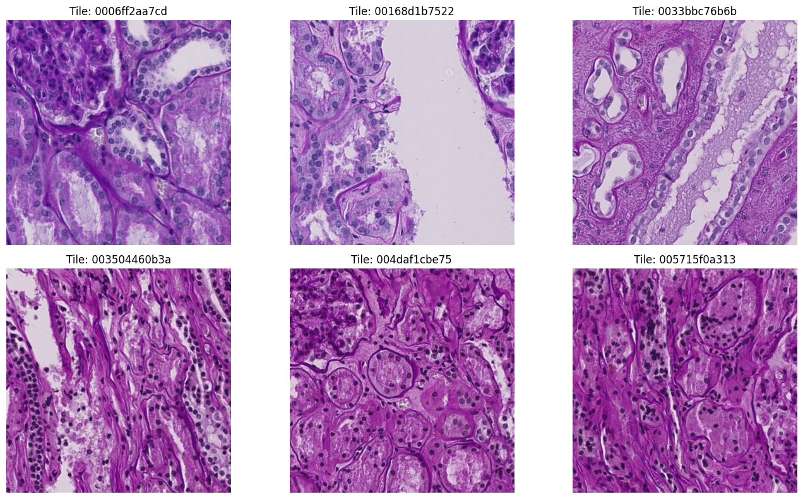
def visualizar_anotaciones_completas(id_imagen):
"""
Carga la imagen original, genera máscaras por tipo de estructura,
superpone los polígonos y muestra todo en una figura resumen.
"""
# Extraer anotaciones correspondientes al ID
lista_anotaciones = df_imagenes.loc[
df_imagenes['tile_id'] == id_imagen, 'anotaciones'
].iloc[0]
# Leer imagen desde disco
ruta_img = os.path.join(ruta_imagenes, f"{id_imagen}.tif")
imagen = np.array(Image.open(ruta_img))
alto, ancho = imagen.shape[:2]
# Definir colores personalizados (BGR)
COLORES = {
'blood_vessel': (255, 165, 0), # naranja
'glomerulus': (127, 0, 255), # púrpura
'unsure': (64, 224, 208) # turquesa
}
# Crear máscaras vacías por clase
mascaras = {clase: np.zeros((alto, ancho, 3), dtype=np.uint8) for clase in COLORES}
imagen_con_poligonos = imagen.copy()
# Dibujar polígonos sobre las máscaras y sobre la imagen base
for region in lista_anotaciones:
tipo = region['type']
puntos = np.array(region['coordinates'], dtype=np.int32)
color = COLORES[tipo]
cv2.fillPoly(mascaras[tipo], [puntos], color)
cv2.polylines(imagen_con_poligonos, [puntos], isClosed=True, color=color, thickness=2)
# Mostrar resultados
fig, ejes = plt.subplots(2, 3, figsize=(18, 10))
ejes = ejes.flatten()
ejes[0].imshow(mascaras['blood_vessel'])
ejes[0].set_title('Máscara: Vasos Sanguíneos', fontsize=12)
ejes[1].imshow(mascaras['glomerulus'])
ejes[1].set_title('Máscara: Glomérulos', fontsize=12)
ejes[2].imshow(mascaras['unsure'])
ejes[2].set_title('Máscara: Duda', fontsize=12)
ejes[3].imshow(imagen)
ejes[3].set_title('Imagen Original', fontsize=12)
ejes[4].imshow(imagen_con_poligonos)
ejes[4].set_title('Imagen con Anotaciones', fontsize=12)
# Eje vacío
ejes[5].axis('off')
for eje in ejes:
eje.axis('off')
plt.tight_layout()
plt.show()
# === Visualizar ejemplo ===
id_muestra = df_imagenes['tile_id'].iloc[10]
visualizar_anotaciones_completas(id_muestra)
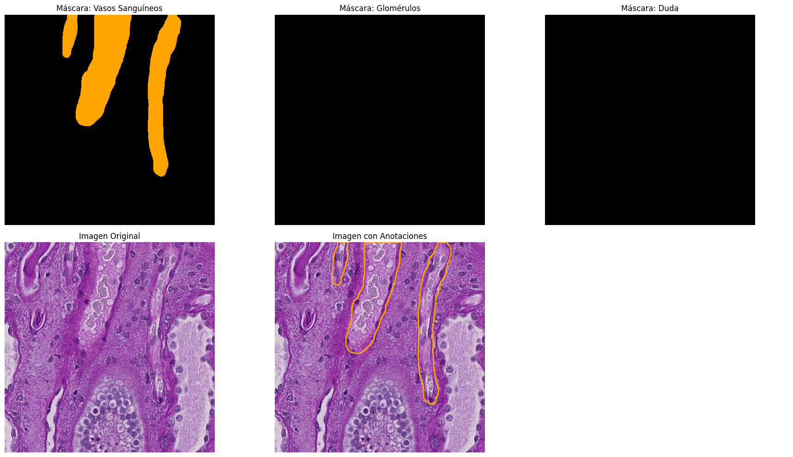
from pathlib import Path
import numpy as np
import tensorflow as tf
import cv2
import pickle
import pandas as pd
import matplotlib.pyplot as plt
import random
from tqdm import tqdm
from sklearn.model_selection import KFold
from tensorflow.keras import mixed_precision
from tensorflow.keras.callbacks import EarlyStopping, ModelCheckpoint, ReduceLROnPlateau
from tensorflow.keras.optimizers import Adam
from tensorflow.keras import backend as K
from sklearn.metrics import (
precision_score, recall_score, balanced_accuracy_score,
roc_auc_score, precision_recall_curve, roc_curve, auc as sklearn_auc
)
from skimage.draw import polygon
# Activar precisión mixta
mixed_precision.set_global_policy('mixed_float16')
# Constantes globales
TAMANO_IMAGEN = (128, 128)
NUMERO_CLASES = 3
MAXIMO_IMAGENES = 100
TIPO_A_CLASE = {
'blood_vessel': 1,
'glomerulus': 2,
'unsure': 3,
}
def cargar_imagen_y_mascara(id_tile: str):
"""
Carga una imagen y su máscara correspondiente.
Args:
id_tile: Identificador único del tile
Returns:
imagen_normalizada: Imagen redimensionada y normalizada [0,1]
m_onehot: Máscara en formato one-hot encoding
"""
# Construir la ruta de la imagen usando os.path.join en lugar de /
ruta_imagen = os.path.join(dir_images, f"{id_tile}.tif")
# Verificar si la imagen existe
if not os.path.exists(ruta_imagen):
print(f"ID: {id_tile}, Ruta: {ruta_imagen}")
raise FileNotFoundError(f"No se encuentra la imagen {id_tile}")
# Cargar imagen original
imagen = cv2.imread(ruta_imagen)
if imagen is None:
raise ValueError(f"No se pudo leer la imagen {ruta_imagen}")
imagen = cv2.cvtColor(imagen, cv2.COLOR_BGR2RGB)
# Rasterizar máscara directamente
alto, ancho = imagen.shape[:2]
mascara = np.zeros((alto, ancho), dtype=np.uint8)
for anotacion in anotaciones_por_tile.get(id_tile, []):
clase = TIPO_A_CLASE.get(anotacion['type'], 0)
for anillo in anotacion['coordinates']:
ys = [p[1] for p in anillo]
xs = [p[0] for p in anillo]
rr, cc = polygon(ys, xs, shape=mascara.shape)
mascara[rr, cc] = clase
# Redimensionar
imagen_redim = cv2.resize(imagen, TAMANO_IMAGEN)
mascara_redim = cv2.resize(mascara, TAMANO_IMAGEN, interpolation=cv2.INTER_NEAREST)
# Codificar máscara en one-hot directamente
m_onehot = np.zeros(TAMANO_IMAGEN + (NUMERO_CLASES,), dtype=np.uint8)
for clase_idx in range(NUMERO_CLASES):
m_onehot[..., clase_idx] = (mascara_redim == clase_idx+1)
imagen_normalizada = imagen_redim.astype(np.float32) / 255.0
return imagen_normalizada, m_onehot.astype(np.float32)
def cargar_datos_por_ids(lista_ids, funcion_carga, max_imagenes=MAXIMO_IMAGENES):
"""
Carga las imágenes y máscaras dado un conjunto de IDs y una función de carga.
Args:
lista_ids: Lista de identificadores de las imágenes a cargar.
funcion_carga: Función encargada de cargar cada imagen y máscara.
max_imagenes: Número máximo de imágenes a cargar.
Returns:
np.array: Arreglo de imágenes y mascaras cargadas.
"""
imagenes, mascaras = [], []
for identificador in lista_ids:
if len(imagenes) >= max_imagenes:
break
try:
img, msk = funcion_carga(identificador)
imagenes.append(img)
mascaras.append(msk)
except Exception as e:
print(f"Saltando {identificador}: {e}")
print(f"Se cargaron {len(imagenes)} imágenes.")
return np.array(imagenes, dtype=np.float32), np.array(mascaras, dtype=np.float32)
def entropia_cruzada_ponderada(pesos_clase: np.ndarray):
"""
Crea una función de pérdida de entropía cruzada ponderada por clase.
Args:
pesos_clase: Vector con pesos por clase
Returns:
función de pérdida para keras
"""
pesos = tf.constant(pesos_clase, dtype=tf.float32)
def perdida(y_verdadero: tf.Tensor, y_predicho: tf.Tensor) -> tf.Tensor:
y_verdadero = tf.cast(y_verdadero, tf.float32)
y_predicho = tf.clip_by_value(tf.cast(y_predicho, tf.float32), 1e-7, 1.0 - 1e-7)
perdida_pixel = -tf.reduce_sum(y_verdadero * tf.math.log(y_predicho) * pesos, axis=-1)
return tf.reduce_mean(perdida_pixel)
return perdida
def calcular_pesos_clase(mascaras_onehot: np.ndarray) -> np.ndarray:
"""
Calcula pesos de clase basados en la frecuencia inversa.
Args:
mascaras_onehot: Array de máscaras en formato one-hot
Returns:
pesos: Vector con pesos normalizados por clase
"""
plano = mascaras_onehot.reshape(-1, mascaras_onehot.shape[-1])
conteos = plano.sum(axis=0)
total = conteos.sum()
frecuencia_inversa = total / (conteos + 1e-6)
pesos = frecuencia_inversa / frecuencia_inversa.sum()
print(f"Pesos por clase: {pesos}")
return pesos.astype(np.float32)
def dice_vasos_sanguineos(y_true, y_pred):
"""
Calcula el coeficiente Dice para la clase de vasos sanguíneos.
"""
y_true_f = tf.cast(y_true[..., 1], tf.float32) # Canal 1 = vasos sanguíneos
y_pred_f = tf.cast(y_pred[..., 1] > 0.5, tf.float32)
interseccion = 2 * tf.reduce_sum(y_true_f * y_pred_f)
union = tf.reduce_sum(y_true_f + y_pred_f) + 1e-6
return interseccion / union
def iou_promedio(y_verdadero, y_predicho, num_clases):
"""
Calcula el IoU promedio macro sobre todas las clases.
"""
ious = []
for c in range(num_clases):
verdadero = tf.cast(y_verdadero[..., c], tf.float32)
predicho = tf.cast(y_predicho[..., c] > 0.5, tf.float32)
interseccion = tf.reduce_sum(verdadero * predicho)
union = tf.reduce_sum(verdadero + predicho) - interseccion
iou = interseccion / (union + 1e-6)
ious.append(iou)
return tf.reduce_mean(ious)
def entrenar_con_kfold(
lista_ids,
funcion_carga_imagen_mascara,
funcion_construir_modelo,
funcion_pesos_clase,
funcion_loss,
tamano_imagen,
num_clases,
ruta_checkpoints=None,
n_splits=5,
epochs=50,
batch_size=2,
early_stop_patience=5,
verbose=1
):
"""
Entrena un modelo Keras usando validación cruzada K-Fold.
Args:
lista_ids: Lista de IDs de tiles a utilizar
funcion_carga_imagen_mascara: Función para cargar imagen y máscara
funcion_construir_modelo: Función para construir el modelo
funcion_pesos_clase: Función para calcular pesos de clase
funcion_loss: Función para construir la función de pérdida
tamano_imagen: Tamaño de las imágenes (alto, ancho)
num_clases: Número de clases a segmentar
ruta_checkpoints: Ruta para guardar checkpoints
n_splits: Número de folds para cross-validation
epochs: Número máximo de épocas
batch_size: Tamaño del batch
early_stop_patience: Paciencia para early stopping
verbose: Nivel de verbosidad
Returns:
historiales: Lista de historiales de entrenamiento por fold
df_folds: DataFrame con métricas por fold
df_resumen: DataFrame con resumen de métricas
"""
ruta_checkpoints = Path(ruta_checkpoints).resolve() if ruta_checkpoints else None
if ruta_checkpoints:
ruta_checkpoints.mkdir(parents=True, exist_ok=True)
(ruta_checkpoints / "historial").mkdir(exist_ok=True)
kfold = KFold(n_splits=n_splits, shuffle=True, random_state=42)
historiales = []
metricas_folds = []
for fold, (idx_entrenamiento, idx_validacion) in enumerate(tqdm(kfold.split(lista_ids), total=n_splits), start=1):
print(f"\n--- Fold {fold}/{n_splits} ---")
ids_entrenamiento = [lista_ids[i] for i in idx_entrenamiento]
ids_validacion = [lista_ids[i] for i in idx_validacion]
ruta_pesos = ruta_checkpoints / f"fold_{fold}.weights.h5" if ruta_checkpoints else None
ruta_historial = ruta_checkpoints / "historial" / f"fold_{fold}_historial.pkl" if ruta_checkpoints else None
# Limpiar sesión y construir modelo desde cero
K.clear_session()
modelo = funcion_construir_modelo()
# Si ya existe el checkpoint, cargar pesos y saltar entrenamiento
if ruta_pesos and ruta_pesos.exists():
print("Checkpoint encontrado, cargando pesos y omitiendo entrenamiento.")
modelo.load_weights(str(ruta_pesos))
pesos_dummy = np.ones(num_clases, dtype=np.float32)
modelo.compile(
optimizer=Adam(1e-3),
loss=funcion_loss(pesos_dummy),
metrics=[dice_vasos_sanguineos, lambda y_true, y_pred: iou_promedio(y_true, y_pred, num_clases)]
)
if ruta_historial and ruta_historial.exists():
with open(ruta_historial, "rb") as f:
historial = pickle.load(f)
historiales.append(historial)
else:
historiales.append({})
else:
# Cargar datos de entrenamiento
X_train, Y_train = cargar_datos_por_ids(ids_entrenamiento, funcion_carga_imagen_mascara)
pesos_clase = funcion_pesos_clase(Y_train)
# Compilar modelo
modelo.compile(
optimizer=Adam(1e-5),
loss=funcion_loss(pesos_clase),
metrics=[dice_vasos_sanguineos, lambda y_true, y_pred: iou_promedio(y_true, y_pred, num_clases)]
)
# Callbacks para control de entrenamiento
callbacks = [
EarlyStopping(
monitor='dice_vasos_sanguineos',
patience=early_stop_patience,
mode='max',
restore_best_weights=True,
verbose=1
),
]
if ruta_pesos:
callbacks.append(ModelCheckpoint(
filepath=str(ruta_pesos),
monitor='dice_vasos_sanguineos',
mode='max',
save_best_only=True,
save_weights_only=True,
verbose=1
))
# Entrenamiento del modelo
X_val, Y_val = cargar_datos_por_ids(ids_validacion, funcion_carga_imagen_mascara)
historial_obj = modelo.fit(
X_train, Y_train,
batch_size=batch_size,
validation_data=(X_val, Y_val),
epochs=epochs,
verbose=verbose,
callbacks=callbacks
)
# Guardar historial del fold
if ruta_historial:
with open(ruta_historial, "wb") as f:
pickle.dump(historial_obj.history, f)
historiales.append(historial_obj.history)
# Recargar los mejores pesos
if ruta_pesos and ruta_pesos.exists():
modelo.load_weights(str(ruta_pesos))
# Evaluación en conjunto de validación
X_val, Y_val = cargar_datos_por_ids(ids_validacion, funcion_carga_imagen_mascara)
probabilidades = modelo.predict(X_val, verbose=0) # (B,H,W,C)
predicciones = np.argmax(probabilidades, axis=-1).ravel()
verdaderos = np.argmax(Y_val, axis=-1).ravel()
# Métricas para vasos sanguíneos (clase 1)
interseccion = np.sum((verdaderos == 1) & (predicciones == 1))
dice = 2 * interseccion / (np.sum(verdaderos == 1) + np.sum(predicciones == 1) + 1e-6)
union = np.sum((verdaderos == 1) | (predicciones == 1))
iou_vasos = interseccion / (union + 1e-6)
# Métricas multiclase
precision = precision_score(verdaderos, predicciones, average='macro', zero_division=0)
recall = recall_score(verdaderos, predicciones, average='macro', zero_division=0)
bal_acc = balanced_accuracy_score(verdaderos, predicciones)
# AUC OvO macro
y_true_oh = np.eye(num_clases)[verdaderos]
probs_flat = probabilidades.reshape(-1, num_clases)
try:
auc = roc_auc_score(y_true_oh, probs_flat, multi_class='ovo', average='macro')
except:
auc = np.nan
metricas_folds.append({
'fold': fold,
'Dice_vasos': dice,
'IoU_vasos': iou_vasos,
'Precision': precision,
'Recall': recall,
'AUC_macro': auc,
'ExactitudBalanceada': bal_acc
})
df_folds = pd.DataFrame(metricas_folds)
df_resumen = pd.DataFrame({
'media': df_folds.mean(numeric_only=True),
}).T
return historiales, df_folds, df_resumen
def graficar_curvas_entrenamiento(historiales, metrica='loss', val_metrica='val_loss'):
"""
Grafica curvas de entrenamiento para todas las particiones.
Args:
historiales: Lista de historiales de entrenamiento
metrica: Métrica a graficar para entrenamiento
val_metrica: Métrica a graficar para validación
"""
plt.figure(figsize=(8, 5))
for i, hist in enumerate(historiales, start=1):
if not hist:
continue
if metrica in hist:
plt.plot(hist[metrica], label=f'Fold{i}_{metrica}')
if val_metrica in hist:
plt.plot(hist[val_metrica], linestyle='--', label=f'Fold{i}_{val_metrica}')
plt.xlabel('Época')
plt.ylabel(metrica)
plt.legend(bbox_to_anchor=(1.05, 1), loc='upper left')
plt.tight_layout()
plt.grid(True)
plt.show()
def graficar_pr_roc(modelo, ids, funcion_cargar, num_clases):
"""
Grafica curvas PR y ROC promediadas (micro-average).
Args:
modelo: Modelo Keras entrenado
ids: Lista de IDs para evaluar
funcion_cargar: Función para cargar imagen y máscara
num_clases: Número de clases
"""
X, Y = cargar_datos_por_ids(ids, funcion_cargar)
probs = modelo.predict(X, verbose=0)
probs_flat = probs.reshape(-1, num_clases)
y_flat = np.argmax(Y, axis=-1).ravel()
y_true_oh = np.eye(num_clases, dtype=int)[y_flat]
y_micro = y_true_oh.ravel()
p_micro = probs_flat.ravel()
# Curva PR
prec, rec, _ = precision_recall_curve(y_micro, p_micro)
plt.figure(figsize=(6, 5))
plt.plot(rec, prec, label='Curva PR (micro-avg)')
plt.hlines(y_micro.mean(), 0, 1, linestyles='--', label=f'Línea base={y_micro.mean():.3f}')
plt.title('Precisión-Exhaustividad Micro-promediada')
plt.xlabel('Exhaustividad (Recall)')
plt.ylabel('Precisión')
plt.legend()
plt.grid(True)
plt.show()
# Curva ROC
fpr, tpr, _ = roc_curve(y_micro, p_micro)
auc_m = sklearn_auc(fpr, tpr)
plt.figure(figsize=(6, 5))
plt.plot(fpr, tpr, label=f'ROC (micro-avg) AUC={auc_m:.3f}')
plt.plot([0, 1], [0, 1], linestyle='--', label='Aleatorio')
plt.title('ROC Micro-promediada')
plt.xlabel('Tasa de Falsos Positivos')
plt.ylabel('Tasa de Verdaderos Positivos')
plt.legend()
plt.grid(True)
plt.show()
def graficar_mapas_error(modelo, ids, funcion_cargar, num_clases, n_muestras=3):
"""
Muestra mapas de error para n_muestras aleatorias.
Args:
modelo: Modelo Keras entrenado
ids: Lista de IDs para evaluar
funcion_cargar: Función para cargar imagen y máscara
num_clases: Número de clases
n_muestras: Número de muestras a visualizar
"""
for _ in range(n_muestras):
tid = random.choice(ids)
img, y_true = funcion_cargar(tid)
pred = modelo.predict(img[None], verbose=0)[0]
pc = np.argmax(pred, axis=-1)
tc = np.argmax(y_true, axis=-1)
# Falsos positivos y falsos negativos para vasos sanguíneos (clase 1)
fp = (pc == 1) & (tc != 1)
fn = (pc != 1) & (tc == 1)
# Crear superposición de errores
overlay = img.copy()
overlay[fp] = [1, 0, 0] # rojo = FP
overlay[fn] = [0, 0, 1] # azul = FN
# Graficar los 4 paneles
plt.figure(figsize=(16, 4))
plt.subplot(1, 4, 1)
plt.imshow(img)
plt.title('Imagen')
plt.axis('off')
plt.subplot(1, 4, 2)
plt.imshow(tc, cmap='gray', vmin=0, vmax=num_clases-1)
plt.title('Máscara Real')
plt.axis('off')
plt.subplot(1, 4, 3)
plt.imshow(pc, cmap='gray', vmin=0, vmax=num_clases-1)
plt.title('Predicción')
plt.axis('off')
plt.subplot(1, 4, 4)
plt.imshow(overlay)
plt.title('Errores (FP rojo, FN azul)')
plt.axis('off')
plt.tight_layout()
plt.show()
def graficar_boxplots_metricas(df_folds):
"""
Muestra boxplots para las métricas principales.
Args:
df_folds: DataFrame con métricas por fold
"""
metricas_principales = ['Dice_vasos', 'IoU_vasos', 'Precision', 'Recall', 'AUC_macro', 'ExactitudBalanceada']
plt.figure(figsize=(10, 6))
df_folds[metricas_principales].boxplot(rot=45)
plt.title('Métricas Principales')
plt.grid(True)
plt.tight_layout()
plt.show()
def graficar_histogramas_metricas(df_folds):
"""
Muestra histogramas para las métricas principales.
Args:
df_folds: DataFrame con métricas por fold
"""
metricas = ['Dice_vasos', 'IoU_vasos', 'Precision', 'Recall', 'AUC_macro', 'ExactitudBalanceada']
n = len(metricas)
cols = 3
rows = (n + cols - 1) // cols
fig, axs = plt.subplots(rows, cols, figsize=(5*cols, 4*rows))
axs = axs.flatten()
for ax, m in zip(axs, metricas):
data = df_folds[m]
data.hist(bins=10, ax=ax)
ax.set_title(m)
ax.grid(True)
# Ocultar ejes vacíos
for ax in axs[n:]:
ax.axis('off')
plt.tight_layout()
plt.show()
# Ejemplo de uso de las funciones
def crear_directorio_checkpoints(ruta_base):
"""
Crea un directorio para guardar checkpoints de entrenamiento.
Args:
ruta_base: Ruta base para crear el directorio
Returns:
directorio_checkpoints: Path al directorio creado
"""
directorio_checkpoints = Path(ruta_base) / 'pesos_entrenamiento'
directorio_checkpoints.mkdir(exist_ok=True)
return directorio_checkpoints
# Ejemplo de entrenamiento y evaluación completa
def ejecutar_pipeline_completo(
lista_ids,
funcion_cargar,
funcion_construir_modelo,
ruta_base,
n_splits=5,
epochs=50,
batch_size=2
):
"""
Ejecuta el pipeline completo: entrenamiento, evaluación y visualización.
Args:
lista_ids: Lista de IDs de tiles
funcion_cargar: Función para cargar imagen y máscara
funcion_construir_modelo: Función para construir el modelo
ruta_base: Ruta base para guardar checkpoints
n_splits: Número de folds
epochs: Número máximo de épocas
batch_size: Tamaño del batch
Returns:
mejor_modelo: El mejor modelo entrenado
df_resumen: DataFrame con resumen de métricas
"""
directorio_checkpoints = crear_directorio_checkpoints(ruta_base)
historiales, df_folds, df_resumen = entrenar_con_kfold(
lista_ids=lista_ids,
funcion_carga_imagen_mascara=funcion_cargar,
funcion_construir_modelo=funcion_construir_modelo,
funcion_pesos_clase=calcular_pesos_clase,
funcion_loss=entropia_cruzada_ponderada,
tamano_imagen=TAMANO_IMAGEN,
num_clases=NUMERO_CLASES,
ruta_checkpoints=directorio_checkpoints,
n_splits=n_splits,
epochs=epochs,
batch_size=batch_size,
early_stop_patience=10,
verbose=1
)
print("\n--- Resumen de Métricas ---")
print(df_resumen)
# Visualizaciones
graficar_curvas_entrenamiento(historiales, 'loss', 'val_loss')
graficar_curvas_entrenamiento(historiales, 'dice_vasos_sanguineos', 'val_dice_vasos_sanguineos')
graficar_boxplots_metricas(df_folds)
graficar_histogramas_metricas(df_folds)
# Seleccionar el mejor modelo
mejor_fold = df_folds['Dice_vasos'].idxmax()
mejor_fold_num = df_folds.loc[mejor_fold, 'fold']
print(f"\nMejor modelo: Fold {mejor_fold_num}")
# Cargar el mejor modelo
K.clear_session()
mejor_modelo = funcion_construir_modelo()
ruta_mejor_modelo = directorio_checkpoints / f"fold_{mejor_fold_num}.weights.h5"
mejor_modelo.load_weights(str(ruta_mejor_modelo))
# Visualizar resultados del mejor modelo
pr_roc=graficar_pr_roc(mejor_modelo, lista_ids, funcion_cargar, NUMERO_CLASES)
mapa_error=graficar_mapas_error(mejor_modelo, lista_ids, funcion_cargar, NUMERO_CLASES, n_muestras=3)
return mejor_modelo, df_resumen,pr_roc,mapa_error
modelo unet#
def modelo_unet(input_shape, num_classes):
inputs = layers.Input(shape=input_shape)
def conv_block(x, filters):
x = layers.Conv2D(filters, 3, padding='same')(x)
x = layers.BatchNormalization()(x)
x = layers.ReLU()(x)
x = layers.Conv2D(filters, 3, padding='same')(x)
x = layers.BatchNormalization()(x)
x = layers.ReLU()(x)
return x
def encoder_block(x, filters):
x = conv_block(x, filters)
p = layers.MaxPooling2D((2, 2))(x)
return x, p
def decoder_block(x, skip, filters):
x = layers.Conv2DTranspose(filters, 2, strides=2, padding='same')(x)
x = layers.Concatenate()([x, skip])
return conv_block(x, filters)
f1, p1 = encoder_block(inputs, 32)
f2, p2 = encoder_block(p1, 64)
f3, p3 = encoder_block(p2, 128)
b = conv_block(p3, 256)
d3 = decoder_block(b, f3, 128)
d2 = decoder_block(d3, f2, 64)
d1 = decoder_block(d2, f1, 32)
outputs = layers.Conv2D(num_classes, 1, activation='softmax')(d1)
return models.Model(inputs, outputs)
directorio_checkpoints = direc_base / 'pesos_entrenamiento_unet'
# Crear el directorio si no existe
directorio_checkpoints.mkdir(parents=True, exist_ok=True)
ejecutar_pipeline_completo(
lista_ids=sorted(anotaciones_por_tile.keys()),
funcion_cargar=cargar_imagen_y_mascara,
funcion_construir_modelo=lambda: modelo_unet(input_shape=(*TAMANO_IMAGEN, 3), num_classes=NUMERO_CLASES),
ruta_base=directorio_checkpoints,
n_splits=5,
epochs=5,
batch_size=2
)
0%| | 0/5 [00:00<?, ?it/s]
--- Fold 1/5 ---
Checkpoint encontrado, cargando pesos y omitiendo entrenamiento.
Se cargaron 100 imágenes.
20%|██ | 1/5 [00:10<00:40, 10.16s/it]
--- Fold 2/5 ---
Se cargaron 100 imágenes.
Pesos por clase: [0.08408388 0.05893792 0.85697824]
Se cargaron 100 imágenes.
Epoch 1/5
50/50 ━━━━━━━━━━━━━━━━━━━━ 0s 113ms/step - dice_vasos_sanguineos: 0.0839 - lambda: 0.0233 - loss: 0.0166
Epoch 1: dice_vasos_sanguineos improved from -inf to 0.09507, saving model to /Users/pachonarvaez/PARCIALML/docs/pesos_entrenamiento_unet/pesos_entrenamiento/fold_2.weights.h5
50/50 ━━━━━━━━━━━━━━━━━━━━ 17s 148ms/step - dice_vasos_sanguineos: 0.0841 - lambda: 0.0233 - loss: 0.0166 - val_dice_vasos_sanguineos: 0.0000e+00 - val_lambda: 0.0000e+00 - val_loss: 0.0109
Epoch 2/5
50/50 ━━━━━━━━━━━━━━━━━━━━ 0s 119ms/step - dice_vasos_sanguineos: 0.0854 - lambda: 0.0220 - loss: 0.0130
Epoch 2: dice_vasos_sanguineos improved from 0.09507 to 0.09872, saving model to /Users/pachonarvaez/PARCIALML/docs/pesos_entrenamiento_unet/pesos_entrenamiento/fold_2.weights.h5
50/50 ━━━━━━━━━━━━━━━━━━━━ 7s 140ms/step - dice_vasos_sanguineos: 0.0857 - lambda: 0.0221 - loss: 0.0131 - val_dice_vasos_sanguineos: 0.0000e+00 - val_lambda: 6.0620e-05 - val_loss: 0.0112
Epoch 3/5
50/50 ━━━━━━━━━━━━━━━━━━━━ 0s 115ms/step - dice_vasos_sanguineos: 0.1234 - lambda: 0.0315 - loss: 0.0162
Epoch 3: dice_vasos_sanguineos improved from 0.09872 to 0.10928, saving model to /Users/pachonarvaez/PARCIALML/docs/pesos_entrenamiento_unet/pesos_entrenamiento/fold_2.weights.h5
50/50 ━━━━━━━━━━━━━━━━━━━━ 7s 134ms/step - dice_vasos_sanguineos: 0.1231 - lambda: 0.0315 - loss: 0.0162 - val_dice_vasos_sanguineos: 0.0016 - val_lambda: 0.0013 - val_loss: 0.0116
Epoch 4/5
50/50 ━━━━━━━━━━━━━━━━━━━━ 0s 117ms/step - dice_vasos_sanguineos: 0.0998 - lambda: 0.0265 - loss: 0.0136
Epoch 4: dice_vasos_sanguineos improved from 0.10928 to 0.11204, saving model to /Users/pachonarvaez/PARCIALML/docs/pesos_entrenamiento_unet/pesos_entrenamiento/fold_2.weights.h5
50/50 ━━━━━━━━━━━━━━━━━━━━ 7s 138ms/step - dice_vasos_sanguineos: 0.1001 - lambda: 0.0265 - loss: 0.0136 - val_dice_vasos_sanguineos: 0.0087 - val_lambda: 0.0027 - val_loss: 0.0120
Epoch 5/5
50/50 ━━━━━━━━━━━━━━━━━━━━ 0s 114ms/step - dice_vasos_sanguineos: 0.1248 - lambda: 0.0319 - loss: 0.0160
Epoch 5: dice_vasos_sanguineos improved from 0.11204 to 0.11347, saving model to /Users/pachonarvaez/PARCIALML/docs/pesos_entrenamiento_unet/pesos_entrenamiento/fold_2.weights.h5
50/50 ━━━━━━━━━━━━━━━━━━━━ 7s 136ms/step - dice_vasos_sanguineos: 0.1246 - lambda: 0.0319 - loss: 0.0159 - val_dice_vasos_sanguineos: 0.0182 - val_lambda: 0.0044 - val_loss: 0.0123
Restoring model weights from the end of the best epoch: 5.
Se cargaron 100 imágenes.
40%|████ | 2/5 [01:10<01:59, 39.67s/it]
--- Fold 3/5 ---
Se cargaron 100 imágenes.
Pesos por clase: [0.0858018 0.06360102 0.8505972 ]
Se cargaron 100 imágenes.
Epoch 1/5
50/50 ━━━━━━━━━━━━━━━━━━━━ 0s 114ms/step - dice_vasos_sanguineos: 0.0858 - lambda: 0.0287 - loss: 0.0172
Epoch 1: dice_vasos_sanguineos improved from -inf to 0.07636, saving model to /Users/pachonarvaez/PARCIALML/docs/pesos_entrenamiento_unet/pesos_entrenamiento/fold_3.weights.h5
50/50 ━━━━━━━━━━━━━━━━━━━━ 16s 151ms/step - dice_vasos_sanguineos: 0.0856 - lambda: 0.0286 - loss: 0.0171 - val_dice_vasos_sanguineos: 0.0000e+00 - val_lambda: 0.0000e+00 - val_loss: 0.0113
Epoch 2/5
50/50 ━━━━━━━━━━━━━━━━━━━━ 0s 124ms/step - dice_vasos_sanguineos: 0.0653 - lambda: 0.0233 - loss: 0.0113
Epoch 2: dice_vasos_sanguineos improved from 0.07636 to 0.07675, saving model to /Users/pachonarvaez/PARCIALML/docs/pesos_entrenamiento_unet/pesos_entrenamiento/fold_3.weights.h5
50/50 ━━━━━━━━━━━━━━━━━━━━ 8s 147ms/step - dice_vasos_sanguineos: 0.0656 - lambda: 0.0234 - loss: 0.0114 - val_dice_vasos_sanguineos: 0.0000e+00 - val_lambda: 0.0090 - val_loss: 0.0113
Epoch 3/5
50/50 ━━━━━━━━━━━━━━━━━━━━ 0s 119ms/step - dice_vasos_sanguineos: 0.0843 - lambda: 0.0270 - loss: 0.0102
Epoch 3: dice_vasos_sanguineos improved from 0.07675 to 0.08232, saving model to /Users/pachonarvaez/PARCIALML/docs/pesos_entrenamiento_unet/pesos_entrenamiento/fold_3.weights.h5
50/50 ━━━━━━━━━━━━━━━━━━━━ 7s 141ms/step - dice_vasos_sanguineos: 0.0842 - lambda: 0.0271 - loss: 0.0103 - val_dice_vasos_sanguineos: 6.9724e-04 - val_lambda: 0.0148 - val_loss: 0.0114
Epoch 4/5
50/50 ━━━━━━━━━━━━━━━━━━━━ 0s 118ms/step - dice_vasos_sanguineos: 0.0838 - lambda: 0.0276 - loss: 0.0116
Epoch 4: dice_vasos_sanguineos improved from 0.08232 to 0.08483, saving model to /Users/pachonarvaez/PARCIALML/docs/pesos_entrenamiento_unet/pesos_entrenamiento/fold_3.weights.h5
50/50 ━━━━━━━━━━━━━━━━━━━━ 7s 139ms/step - dice_vasos_sanguineos: 0.0838 - lambda: 0.0277 - loss: 0.0116 - val_dice_vasos_sanguineos: 0.0080 - val_lambda: 0.0163 - val_loss: 0.0114
Epoch 5/5
50/50 ━━━━━━━━━━━━━━━━━━━━ 0s 114ms/step - dice_vasos_sanguineos: 0.0765 - lambda: 0.0274 - loss: 0.0097
Epoch 5: dice_vasos_sanguineos improved from 0.08483 to 0.08918, saving model to /Users/pachonarvaez/PARCIALML/docs/pesos_entrenamiento_unet/pesos_entrenamiento/fold_3.weights.h5
50/50 ━━━━━━━━━━━━━━━━━━━━ 7s 135ms/step - dice_vasos_sanguineos: 0.0768 - lambda: 0.0274 - loss: 0.0097 - val_dice_vasos_sanguineos: 0.0234 - val_lambda: 0.0192 - val_loss: 0.0114
Restoring model weights from the end of the best epoch: 5.
Se cargaron 100 imágenes.
WARNING:tensorflow:5 out of the last 9 calls to <function TensorFlowTrainer.make_predict_function.<locals>.one_step_on_data_distributed at 0x378826550> triggered tf.function retracing. Tracing is expensive and the excessive number of tracings could be due to (1) creating @tf.function repeatedly in a loop, (2) passing tensors with different shapes, (3) passing Python objects instead of tensors. For (1), please define your @tf.function outside of the loop. For (2), @tf.function has reduce_retracing=True option that can avoid unnecessary retracing. For (3), please refer to https://www.tensorflow.org/guide/function#controlling_retracing and https://www.tensorflow.org/api_docs/python/tf/function for more details.
WARNING:tensorflow:6 out of the last 12 calls to <function TensorFlowTrainer.make_predict_function.<locals>.one_step_on_data_distributed at 0x378826550> triggered tf.function retracing. Tracing is expensive and the excessive number of tracings could be due to (1) creating @tf.function repeatedly in a loop, (2) passing tensors with different shapes, (3) passing Python objects instead of tensors. For (1), please define your @tf.function outside of the loop. For (2), @tf.function has reduce_retracing=True option that can avoid unnecessary retracing. For (3), please refer to https://www.tensorflow.org/guide/function#controlling_retracing and https://www.tensorflow.org/api_docs/python/tf/function for more details.
60%|██████ | 3/5 [02:14<01:41, 50.91s/it]
--- Fold 4/5 ---
Se cargaron 100 imágenes.
Pesos por clase: [0.08778861 0.05816529 0.85404605]
Se cargaron 100 imágenes.
Epoch 1/5
50/50 ━━━━━━━━━━━━━━━━━━━━ 0s 122ms/step - dice_vasos_sanguineos: 0.1030 - lambda: 0.0304 - loss: 0.0178
Epoch 1: dice_vasos_sanguineos improved from -inf to 0.07940, saving model to /Users/pachonarvaez/PARCIALML/docs/pesos_entrenamiento_unet/pesos_entrenamiento/fold_4.weights.h5
50/50 ━━━━━━━━━━━━━━━━━━━━ 16s 158ms/step - dice_vasos_sanguineos: 0.1026 - lambda: 0.0303 - loss: 0.0178 - val_dice_vasos_sanguineos: 6.3990e-06 - val_lambda: 1.0667e-06 - val_loss: 0.0117
Epoch 2/5
50/50 ━━━━━━━━━━━━━━━━━━━━ 0s 117ms/step - dice_vasos_sanguineos: 0.0996 - lambda: 0.0306 - loss: 0.0156
Epoch 2: dice_vasos_sanguineos improved from 0.07940 to 0.08416, saving model to /Users/pachonarvaez/PARCIALML/docs/pesos_entrenamiento_unet/pesos_entrenamiento/fold_4.weights.h5
50/50 ━━━━━━━━━━━━━━━━━━━━ 7s 138ms/step - dice_vasos_sanguineos: 0.0993 - lambda: 0.0305 - loss: 0.0156 - val_dice_vasos_sanguineos: 0.0508 - val_lambda: 0.0093 - val_loss: 0.0125
Epoch 3/5
50/50 ━━━━━━━━━━━━━━━━━━━━ 0s 119ms/step - dice_vasos_sanguineos: 0.0990 - lambda: 0.0305 - loss: 0.0151
Epoch 3: dice_vasos_sanguineos improved from 0.08416 to 0.09045, saving model to /Users/pachonarvaez/PARCIALML/docs/pesos_entrenamiento_unet/pesos_entrenamiento/fold_4.weights.h5
50/50 ━━━━━━━━━━━━━━━━━━━━ 7s 140ms/step - dice_vasos_sanguineos: 0.0988 - lambda: 0.0305 - loss: 0.0151 - val_dice_vasos_sanguineos: 0.0505 - val_lambda: 0.0093 - val_loss: 0.0130
Epoch 4/5
50/50 ━━━━━━━━━━━━━━━━━━━━ 0s 119ms/step - dice_vasos_sanguineos: 0.1012 - lambda: 0.0305 - loss: 0.0147
Epoch 4: dice_vasos_sanguineos improved from 0.09045 to 0.09338, saving model to /Users/pachonarvaez/PARCIALML/docs/pesos_entrenamiento_unet/pesos_entrenamiento/fold_4.weights.h5
50/50 ━━━━━━━━━━━━━━━━━━━━ 7s 137ms/step - dice_vasos_sanguineos: 0.1010 - lambda: 0.0305 - loss: 0.0147 - val_dice_vasos_sanguineos: 0.0510 - val_lambda: 0.0094 - val_loss: 0.0130
Epoch 5/5
50/50 ━━━━━━━━━━━━━━━━━━━━ 0s 117ms/step - dice_vasos_sanguineos: 0.0950 - lambda: 0.0299 - loss: 0.0117
Epoch 5: dice_vasos_sanguineos improved from 0.09338 to 0.09865, saving model to /Users/pachonarvaez/PARCIALML/docs/pesos_entrenamiento_unet/pesos_entrenamiento/fold_4.weights.h5
50/50 ━━━━━━━━━━━━━━━━━━━━ 7s 135ms/step - dice_vasos_sanguineos: 0.0950 - lambda: 0.0299 - loss: 0.0118 - val_dice_vasos_sanguineos: 0.0520 - val_lambda: 0.0099 - val_loss: 0.0128
Restoring model weights from the end of the best epoch: 5.
Se cargaron 100 imágenes.
80%|████████ | 4/5 [03:16<00:55, 55.02s/it]
--- Fold 5/5 ---
Se cargaron 100 imágenes.
Pesos por clase: [0.08522165 0.06814457 0.84663373]
Se cargaron 100 imágenes.
Epoch 1/5
50/50 ━━━━━━━━━━━━━━━━━━━━ 0s 158ms/step - dice_vasos_sanguineos: 0.0914 - lambda: 0.0317 - loss: 0.0140
Epoch 1: dice_vasos_sanguineos improved from -inf to 0.09590, saving model to /Users/pachonarvaez/PARCIALML/docs/pesos_entrenamiento_unet/pesos_entrenamiento/fold_5.weights.h5
50/50 ━━━━━━━━━━━━━━━━━━━━ 20s 206ms/step - dice_vasos_sanguineos: 0.0915 - lambda: 0.0317 - loss: 0.0140 - val_dice_vasos_sanguineos: 0.0000e+00 - val_lambda: 0.0000e+00 - val_loss: 0.0126
Epoch 2/5
50/50 ━━━━━━━━━━━━━━━━━━━━ 0s 163ms/step - dice_vasos_sanguineos: 0.0859 - lambda: 0.0288 - loss: 0.0114
Epoch 2: dice_vasos_sanguineos improved from 0.09590 to 0.10009, saving model to /Users/pachonarvaez/PARCIALML/docs/pesos_entrenamiento_unet/pesos_entrenamiento/fold_5.weights.h5
50/50 ━━━━━━━━━━━━━━━━━━━━ 10s 188ms/step - dice_vasos_sanguineos: 0.0862 - lambda: 0.0289 - loss: 0.0115 - val_dice_vasos_sanguineos: 0.0000e+00 - val_lambda: 0.0000e+00 - val_loss: 0.0131
Epoch 3/5
50/50 ━━━━━━━━━━━━━━━━━━━━ 0s 160ms/step - dice_vasos_sanguineos: 0.0854 - lambda: 0.0327 - loss: 0.0192
Epoch 3: dice_vasos_sanguineos did not improve from 0.10009
50/50 ━━━━━━━━━━━━━━━━━━━━ 9s 178ms/step - dice_vasos_sanguineos: 0.0856 - lambda: 0.0327 - loss: 0.0191 - val_dice_vasos_sanguineos: 0.0000e+00 - val_lambda: 5.7225e-06 - val_loss: 0.0136
Epoch 4/5
50/50 ━━━━━━━━━━━━━━━━━━━━ 0s 132ms/step - dice_vasos_sanguineos: 0.0828 - lambda: 0.0293 - loss: 0.0138
Epoch 4: dice_vasos_sanguineos improved from 0.10009 to 0.10776, saving model to /Users/pachonarvaez/PARCIALML/docs/pesos_entrenamiento_unet/pesos_entrenamiento/fold_5.weights.h5
50/50 ━━━━━━━━━━━━━━━━━━━━ 8s 151ms/step - dice_vasos_sanguineos: 0.0833 - lambda: 0.0294 - loss: 0.0138 - val_dice_vasos_sanguineos: 0.0027 - val_lambda: 7.9269e-04 - val_loss: 0.0141
Epoch 5/5
50/50 ━━━━━━━━━━━━━━━━━━━━ 0s 143ms/step - dice_vasos_sanguineos: 0.1224 - lambda: 0.0383 - loss: 0.0141
Epoch 5: dice_vasos_sanguineos did not improve from 0.10776
50/50 ━━━━━━━━━━━━━━━━━━━━ 8s 161ms/step - dice_vasos_sanguineos: 0.1220 - lambda: 0.0382 - loss: 0.0141 - val_dice_vasos_sanguineos: 0.0161 - val_lambda: 0.0057 - val_loss: 0.0145
Restoring model weights from the end of the best epoch: 4.
Se cargaron 100 imágenes.
100%|██████████| 5/5 [04:29<00:00, 53.81s/it]
--- Resumen de Métricas ---
fold Dice_vasos IoU_vasos Precision Recall AUC_macro \
media 3.0 0.078481 0.041062 0.336304 0.330842 0.518237
ExactitudBalanceada
media 0.330842
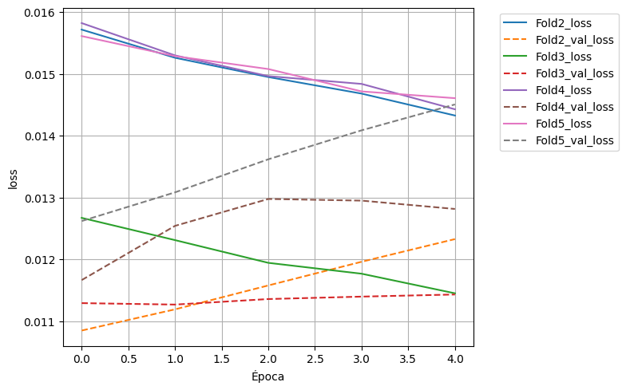
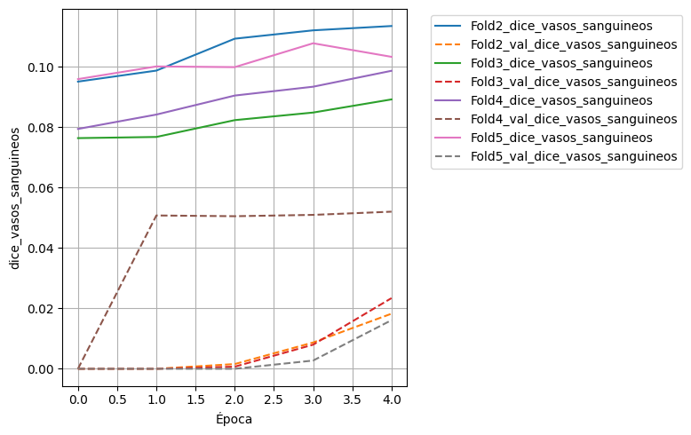
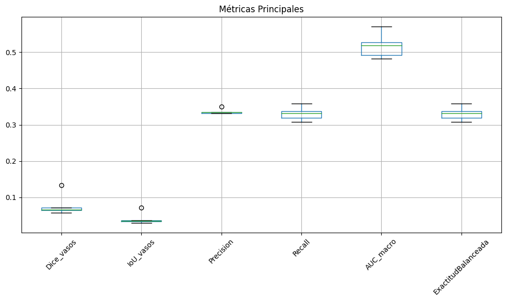
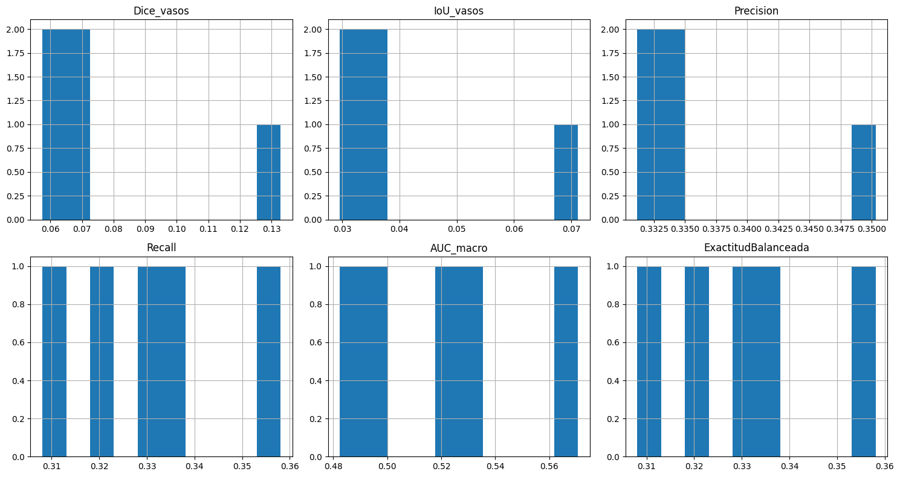
Mejor modelo: Fold 3
Se cargaron 100 imágenes.
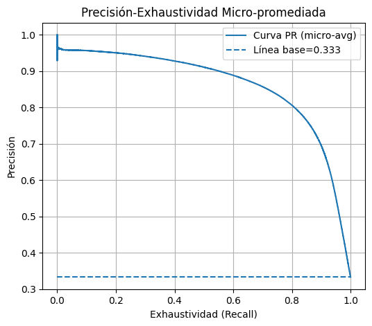
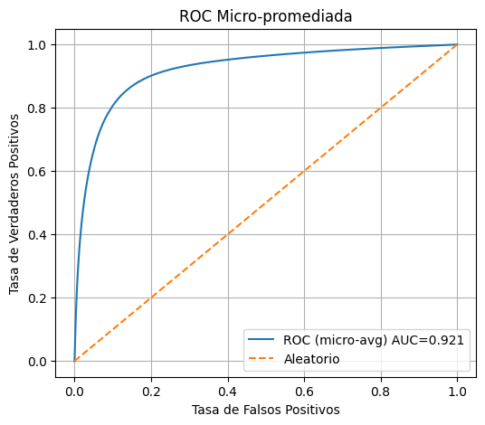
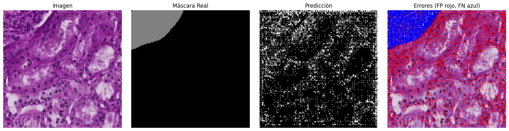
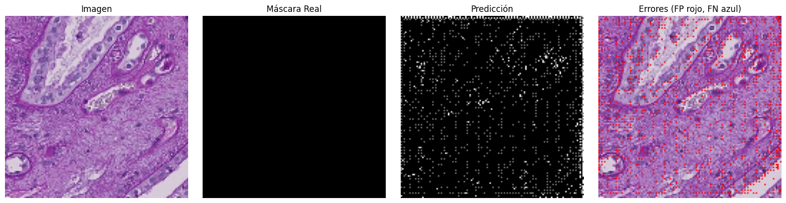
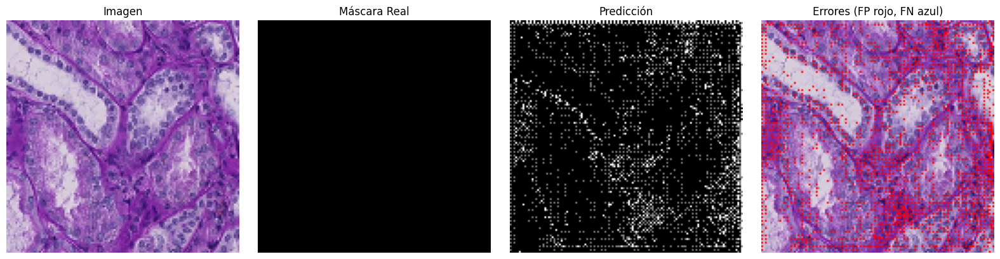
(<Functional name=functional_1, built=True>,
fold Dice_vasos IoU_vasos Precision Recall AUC_macro \
media 3.0 0.078481 0.041062 0.336304 0.330842 0.518237
ExactitudBalanceada
media 0.330842 ,
None,
None)
Modelo vnet#
from tensorflow.keras import layers, models
from tensorflow.keras.layers import LeakyReLU
# Bloque de convolución con normalización y activación
def bloque_convolucional(x, filtros):
x = layers.Conv2D(filtros, 3, padding='same', kernel_initializer='he_normal')(x)
x = layers.BatchNormalization(momentum=0.9)(x)
return LeakyReLU(alpha=0.1)(x)
# Bloque de downsampling con conexión residual
def bloque_downsampling(x, filtros):
x = bloque_convolucional(x, filtros)
x = bloque_convolucional(x, filtros)
conexion_residual = x
x = layers.MaxPooling2D(pool_size=(2, 2))(x)
return x, conexion_residual
# Bloque de upsampling con conexión residual
def bloque_upsampling(x, conexion_residual, filtros):
x = layers.Conv2DTranspose(filtros, 2, strides=2, padding='same')(x)
x = layers.Concatenate()([x, conexion_residual])
return bloque_convolucional(bloque_convolucional(x, filtros), filtros)
# Construcción del modelo V-Net
def construir_vnet(tamano_entrada, num_clases):
entradas = layers.Input(shape=tamano_entrada)
# Encoder
x1, conexion1 = bloque_downsampling(entradas, 32)
x2, conexion2 = bloque_downsampling(x1, 64)
x3, conexion3 = bloque_downsampling(x2, 128)
x4, conexion4 = bloque_downsampling(x3, 256)
# Bottleneck
x = bloque_convolucional(x4, 512)
x = bloque_convolucional(x, 512)
# Decoder
x = bloque_upsampling(x, conexion4, 256)
x = bloque_upsampling(x, conexion3, 128)
x = bloque_upsampling(x, conexion2, 64)
x = bloque_upsampling(x, conexion1, 32)
# Salida
salidas = layers.Conv2D(num_clases, 1, activation='softmax')(x)
return models.Model(entradas, salidas)
directorio_checkpoints = direc_base / 'pesos_entrenamiento_vnet'
# Crear el directorio si no existe
directorio_checkpoints.mkdir(parents=True, exist_ok=True)
ejecutar_pipeline_completo(
lista_ids=sorted(anotaciones_por_tile.keys()),
funcion_cargar=cargar_imagen_y_mascara,
funcion_construir_modelo=lambda: construir_vnet(tamano_entrada=(*TAMANO_IMAGEN, 3), num_clases=NUMERO_CLASES),
ruta_base=directorio_checkpoints,
n_splits=5,
epochs=5,
batch_size=2
)
0%| | 0/5 [00:00<?, ?it/s]
--- Fold 1/5 ---
/opt/miniconda3/envs/ml_venv/lib/python3.9/site-packages/keras/src/layers/activations/leaky_relu.py:41: UserWarning: Argument `alpha` is deprecated. Use `negative_slope` instead.
warnings.warn(
Se cargaron 100 imágenes.
Pesos por clase: [0.05089327 0.03487359 0.91423315]
Se cargaron 100 imágenes.
Epoch 1/5
50/50 ━━━━━━━━━━━━━━━━━━━━ 0s 149ms/step - dice_vasos_sanguineos: 0.0942 - lambda: 0.0256 - loss: 0.0084
Epoch 1: dice_vasos_sanguineos improved from -inf to 0.10299, saving model to /Users/pachonarvaez/PARCIALML/docs/pesos_entrenamiento_vnet/pesos_entrenamiento/fold_1.weights.h5
50/50 ━━━━━━━━━━━━━━━━━━━━ 20s 196ms/step - dice_vasos_sanguineos: 0.0943 - lambda: 0.0256 - loss: 0.0085 - val_dice_vasos_sanguineos: 0.0904 - val_lambda: 0.0254 - val_loss: 0.0092
Epoch 2/5
50/50 ━━━━━━━━━━━━━━━━━━━━ 0s 147ms/step - dice_vasos_sanguineos: 0.0734 - lambda: 0.0227 - loss: 0.0087
Epoch 2: dice_vasos_sanguineos improved from 0.10299 to 0.11165, saving model to /Users/pachonarvaez/PARCIALML/docs/pesos_entrenamiento_vnet/pesos_entrenamiento/fold_1.weights.h5
50/50 ━━━━━━━━━━━━━━━━━━━━ 9s 176ms/step - dice_vasos_sanguineos: 0.0741 - lambda: 0.0228 - loss: 0.0087 - val_dice_vasos_sanguineos: 0.0969 - val_lambda: 0.0273 - val_loss: 0.0092
Epoch 3/5
50/50 ━━━━━━━━━━━━━━━━━━━━ 0s 162ms/step - dice_vasos_sanguineos: 0.0922 - lambda: 0.0268 - loss: 0.0081
Epoch 3: dice_vasos_sanguineos improved from 0.11165 to 0.12077, saving model to /Users/pachonarvaez/PARCIALML/docs/pesos_entrenamiento_vnet/pesos_entrenamiento/fold_1.weights.h5
50/50 ━━━━━━━━━━━━━━━━━━━━ 10s 188ms/step - dice_vasos_sanguineos: 0.0928 - lambda: 0.0269 - loss: 0.0081 - val_dice_vasos_sanguineos: 0.1006 - val_lambda: 0.0283 - val_loss: 0.0090
Epoch 4/5
50/50 ━━━━━━━━━━━━━━━━━━━━ 0s 169ms/step - dice_vasos_sanguineos: 0.1242 - lambda: 0.0337 - loss: 0.0077
Epoch 4: dice_vasos_sanguineos did not improve from 0.12077
50/50 ━━━━━━━━━━━━━━━━━━━━ 9s 189ms/step - dice_vasos_sanguineos: 0.1241 - lambda: 0.0336 - loss: 0.0077 - val_dice_vasos_sanguineos: 0.1049 - val_lambda: 0.0298 - val_loss: 0.0089
Epoch 5/5
50/50 ━━━━━━━━━━━━━━━━━━━━ 0s 142ms/step - dice_vasos_sanguineos: 0.1316 - lambda: 0.0351 - loss: 0.0075
Epoch 5: dice_vasos_sanguineos improved from 0.12077 to 0.12640, saving model to /Users/pachonarvaez/PARCIALML/docs/pesos_entrenamiento_vnet/pesos_entrenamiento/fold_1.weights.h5
50/50 ━━━━━━━━━━━━━━━━━━━━ 9s 170ms/step - dice_vasos_sanguineos: 0.1315 - lambda: 0.0351 - loss: 0.0075 - val_dice_vasos_sanguineos: 0.1099 - val_lambda: 0.0315 - val_loss: 0.0087
Restoring model weights from the end of the best epoch: 5.
Se cargaron 100 imágenes.
20%|██ | 1/5 [01:18<05:13, 78.47s/it]
--- Fold 2/5 ---
/opt/miniconda3/envs/ml_venv/lib/python3.9/site-packages/keras/src/layers/activations/leaky_relu.py:41: UserWarning: Argument `alpha` is deprecated. Use `negative_slope` instead.
warnings.warn(
Se cargaron 100 imágenes.
Pesos por clase: [0.08408388 0.05893792 0.85697824]
Se cargaron 100 imágenes.
Epoch 1/5
50/50 ━━━━━━━━━━━━━━━━━━━━ 0s 150ms/step - dice_vasos_sanguineos: 0.0342 - lambda: 0.0185 - loss: 0.0148
Epoch 1: dice_vasos_sanguineos improved from -inf to 0.03547, saving model to /Users/pachonarvaez/PARCIALML/docs/pesos_entrenamiento_vnet/pesos_entrenamiento/fold_2.weights.h5
50/50 ━━━━━━━━━━━━━━━━━━━━ 22s 205ms/step - dice_vasos_sanguineos: 0.0342 - lambda: 0.0186 - loss: 0.0148 - val_dice_vasos_sanguineos: 0.0305 - val_lambda: 0.0194 - val_loss: 0.0123
Epoch 2/5
50/50 ━━━━━━━━━━━━━━━━━━━━ 0s 156ms/step - dice_vasos_sanguineos: 0.0390 - lambda: 0.0221 - loss: 0.0133
Epoch 2: dice_vasos_sanguineos improved from 0.03547 to 0.04218, saving model to /Users/pachonarvaez/PARCIALML/docs/pesos_entrenamiento_vnet/pesos_entrenamiento/fold_2.weights.h5
50/50 ━━━━━━━━━━━━━━━━━━━━ 10s 181ms/step - dice_vasos_sanguineos: 0.0391 - lambda: 0.0221 - loss: 0.0133 - val_dice_vasos_sanguineos: 0.0421 - val_lambda: 0.0223 - val_loss: 0.0121
Epoch 3/5
50/50 ━━━━━━━━━━━━━━━━━━━━ 0s 173ms/step - dice_vasos_sanguineos: 0.0519 - lambda: 0.0244 - loss: 0.0155
Epoch 3: dice_vasos_sanguineos improved from 0.04218 to 0.06096, saving model to /Users/pachonarvaez/PARCIALML/docs/pesos_entrenamiento_vnet/pesos_entrenamiento/fold_2.weights.h5
50/50 ━━━━━━━━━━━━━━━━━━━━ 10s 205ms/step - dice_vasos_sanguineos: 0.0521 - lambda: 0.0244 - loss: 0.0155 - val_dice_vasos_sanguineos: 0.0534 - val_lambda: 0.0251 - val_loss: 0.0117
Epoch 4/5
50/50 ━━━━━━━━━━━━━━━━━━━━ 0s 218ms/step - dice_vasos_sanguineos: 0.0665 - lambda: 0.0264 - loss: 0.0137
Epoch 4: dice_vasos_sanguineos improved from 0.06096 to 0.07021, saving model to /Users/pachonarvaez/PARCIALML/docs/pesos_entrenamiento_vnet/pesos_entrenamiento/fold_2.weights.h5
50/50 ━━━━━━━━━━━━━━━━━━━━ 13s 251ms/step - dice_vasos_sanguineos: 0.0665 - lambda: 0.0264 - loss: 0.0137 - val_dice_vasos_sanguineos: 0.0677 - val_lambda: 0.0285 - val_loss: 0.0113
Epoch 5/5
50/50 ━━━━━━━━━━━━━━━━━━━━ 0s 188ms/step - dice_vasos_sanguineos: 0.0660 - lambda: 0.0277 - loss: 0.0135
Epoch 5: dice_vasos_sanguineos improved from 0.07021 to 0.08287, saving model to /Users/pachonarvaez/PARCIALML/docs/pesos_entrenamiento_vnet/pesos_entrenamiento/fold_2.weights.h5
50/50 ━━━━━━━━━━━━━━━━━━━━ 11s 219ms/step - dice_vasos_sanguineos: 0.0663 - lambda: 0.0278 - loss: 0.0135 - val_dice_vasos_sanguineos: 0.0757 - val_lambda: 0.0307 - val_loss: 0.0110
Restoring model weights from the end of the best epoch: 5.
Se cargaron 100 imágenes.
40%|████ | 2/5 [02:44<04:09, 83.10s/it]
--- Fold 3/5 ---
/opt/miniconda3/envs/ml_venv/lib/python3.9/site-packages/keras/src/layers/activations/leaky_relu.py:41: UserWarning: Argument `alpha` is deprecated. Use `negative_slope` instead.
warnings.warn(
Se cargaron 100 imágenes.
Pesos por clase: [0.0858018 0.06360102 0.8505972 ]
Se cargaron 100 imágenes.
Epoch 1/5
50/50 ━━━━━━━━━━━━━━━━━━━━ 0s 168ms/step - dice_vasos_sanguineos: 0.0960 - lambda: 0.0321 - loss: 0.0148
Epoch 1: dice_vasos_sanguineos improved from -inf to 0.08665, saving model to /Users/pachonarvaez/PARCIALML/docs/pesos_entrenamiento_vnet/pesos_entrenamiento/fold_3.weights.h5
50/50 ━━━━━━━━━━━━━━━━━━━━ 23s 231ms/step - dice_vasos_sanguineos: 0.0958 - lambda: 0.0320 - loss: 0.0148 - val_dice_vasos_sanguineos: 0.1093 - val_lambda: 0.0364 - val_loss: 0.0125
Epoch 2/5
50/50 ━━━━━━━━━━━━━━━━━━━━ 0s 206ms/step - dice_vasos_sanguineos: 0.0657 - lambda: 0.0233 - loss: 0.0110
Epoch 2: dice_vasos_sanguineos improved from 0.08665 to 0.08872, saving model to /Users/pachonarvaez/PARCIALML/docs/pesos_entrenamiento_vnet/pesos_entrenamiento/fold_3.weights.h5
50/50 ━━━━━━━━━━━━━━━━━━━━ 12s 237ms/step - dice_vasos_sanguineos: 0.0661 - lambda: 0.0234 - loss: 0.0111 - val_dice_vasos_sanguineos: 0.1114 - val_lambda: 0.0370 - val_loss: 0.0125
Epoch 3/5
50/50 ━━━━━━━━━━━━━━━━━━━━ 0s 180ms/step - dice_vasos_sanguineos: 0.0760 - lambda: 0.0259 - loss: 0.0105
Epoch 3: dice_vasos_sanguineos improved from 0.08872 to 0.09377, saving model to /Users/pachonarvaez/PARCIALML/docs/pesos_entrenamiento_vnet/pesos_entrenamiento/fold_3.weights.h5
50/50 ━━━━━━━━━━━━━━━━━━━━ 11s 209ms/step - dice_vasos_sanguineos: 0.0763 - lambda: 0.0260 - loss: 0.0105 - val_dice_vasos_sanguineos: 0.1175 - val_lambda: 0.0385 - val_loss: 0.0121
Epoch 4/5
50/50 ━━━━━━━━━━━━━━━━━━━━ 0s 200ms/step - dice_vasos_sanguineos: 0.0897 - lambda: 0.0291 - loss: 0.0105
Epoch 4: dice_vasos_sanguineos improved from 0.09377 to 0.09565, saving model to /Users/pachonarvaez/PARCIALML/docs/pesos_entrenamiento_vnet/pesos_entrenamiento/fold_3.weights.h5
50/50 ━━━━━━━━━━━━━━━━━━━━ 12s 230ms/step - dice_vasos_sanguineos: 0.0898 - lambda: 0.0291 - loss: 0.0105 - val_dice_vasos_sanguineos: 0.1232 - val_lambda: 0.0399 - val_loss: 0.0119
Epoch 5/5
50/50 ━━━━━━━━━━━━━━━━━━━━ 0s 166ms/step - dice_vasos_sanguineos: 0.1097 - lambda: 0.0354 - loss: 0.0127
Epoch 5: dice_vasos_sanguineos improved from 0.09565 to 0.10403, saving model to /Users/pachonarvaez/PARCIALML/docs/pesos_entrenamiento_vnet/pesos_entrenamiento/fold_3.weights.h5
50/50 ━━━━━━━━━━━━━━━━━━━━ 10s 195ms/step - dice_vasos_sanguineos: 0.1096 - lambda: 0.0353 - loss: 0.0127 - val_dice_vasos_sanguineos: 0.1278 - val_lambda: 0.0412 - val_loss: 0.0117
Restoring model weights from the end of the best epoch: 5.
Se cargaron 100 imágenes.
60%|██████ | 3/5 [04:15<02:53, 86.69s/it]
--- Fold 4/5 ---
/opt/miniconda3/envs/ml_venv/lib/python3.9/site-packages/keras/src/layers/activations/leaky_relu.py:41: UserWarning: Argument `alpha` is deprecated. Use `negative_slope` instead.
warnings.warn(
Se cargaron 100 imágenes.
Pesos por clase: [0.08778861 0.05816529 0.85404605]
Se cargaron 100 imágenes.
Epoch 1/5
50/50 ━━━━━━━━━━━━━━━━━━━━ 0s 189ms/step - dice_vasos_sanguineos: 0.0448 - lambda: 0.0174 - loss: 0.0174
Epoch 1: dice_vasos_sanguineos improved from -inf to 0.04449, saving model to /Users/pachonarvaez/PARCIALML/docs/pesos_entrenamiento_vnet/pesos_entrenamiento/fold_4.weights.h5
50/50 ━━━━━━━━━━━━━━━━━━━━ 27s 256ms/step - dice_vasos_sanguineos: 0.0448 - lambda: 0.0174 - loss: 0.0174 - val_dice_vasos_sanguineos: 0.0311 - val_lambda: 0.0153 - val_loss: 0.0123
Epoch 2/5
50/50 ━━━━━━━━━━━━━━━━━━━━ 0s 193ms/step - dice_vasos_sanguineos: 0.0560 - lambda: 0.0207 - loss: 0.0171
Epoch 2: dice_vasos_sanguineos improved from 0.04449 to 0.06255, saving model to /Users/pachonarvaez/PARCIALML/docs/pesos_entrenamiento_vnet/pesos_entrenamiento/fold_4.weights.h5
50/50 ━━━━━━━━━━━━━━━━━━━━ 11s 222ms/step - dice_vasos_sanguineos: 0.0561 - lambda: 0.0207 - loss: 0.0171 - val_dice_vasos_sanguineos: 0.0396 - val_lambda: 0.0180 - val_loss: 0.0121
Epoch 3/5
50/50 ━━━━━━━━━━━━━━━━━━━━ 0s 167ms/step - dice_vasos_sanguineos: 0.0493 - lambda: 0.0210 - loss: 0.0149
Epoch 3: dice_vasos_sanguineos improved from 0.06255 to 0.06406, saving model to /Users/pachonarvaez/PARCIALML/docs/pesos_entrenamiento_vnet/pesos_entrenamiento/fold_4.weights.h5
50/50 ━━━━━━━━━━━━━━━━━━━━ 10s 196ms/step - dice_vasos_sanguineos: 0.0496 - lambda: 0.0210 - loss: 0.0149 - val_dice_vasos_sanguineos: 0.0469 - val_lambda: 0.0203 - val_loss: 0.0118
Epoch 4/5
50/50 ━━━━━━━━━━━━━━━━━━━━ 0s 156ms/step - dice_vasos_sanguineos: 0.0798 - lambda: 0.0261 - loss: 0.0180
Epoch 4: dice_vasos_sanguineos improved from 0.06406 to 0.07520, saving model to /Users/pachonarvaez/PARCIALML/docs/pesos_entrenamiento_vnet/pesos_entrenamiento/fold_4.weights.h5
50/50 ━━━━━━━━━━━━━━━━━━━━ 9s 187ms/step - dice_vasos_sanguineos: 0.0797 - lambda: 0.0260 - loss: 0.0180 - val_dice_vasos_sanguineos: 0.0543 - val_lambda: 0.0223 - val_loss: 0.0113
Epoch 5/5
50/50 ━━━━━━━━━━━━━━━━━━━━ 0s 155ms/step - dice_vasos_sanguineos: 0.1017 - lambda: 0.0300 - loss: 0.0141
Epoch 5: dice_vasos_sanguineos improved from 0.07520 to 0.09642, saving model to /Users/pachonarvaez/PARCIALML/docs/pesos_entrenamiento_vnet/pesos_entrenamiento/fold_4.weights.h5
50/50 ━━━━━━━━━━━━━━━━━━━━ 9s 184ms/step - dice_vasos_sanguineos: 0.1016 - lambda: 0.0300 - loss: 0.0141 - val_dice_vasos_sanguineos: 0.0685 - val_lambda: 0.0256 - val_loss: 0.0110
Restoring model weights from the end of the best epoch: 5.
Se cargaron 100 imágenes.
80%|████████ | 4/5 [05:42<01:26, 86.71s/it]
--- Fold 5/5 ---
/opt/miniconda3/envs/ml_venv/lib/python3.9/site-packages/keras/src/layers/activations/leaky_relu.py:41: UserWarning: Argument `alpha` is deprecated. Use `negative_slope` instead.
warnings.warn(
Se cargaron 100 imágenes.
Pesos por clase: [0.08522165 0.06814457 0.84663373]
Se cargaron 100 imágenes.
Epoch 1/5
50/50 ━━━━━━━━━━━━━━━━━━━━ 0s 158ms/step - dice_vasos_sanguineos: 0.1004 - lambda: 0.0280 - loss: 0.0195
Epoch 1: dice_vasos_sanguineos improved from -inf to 0.07830, saving model to /Users/pachonarvaez/PARCIALML/docs/pesos_entrenamiento_vnet/pesos_entrenamiento/fold_5.weights.h5
50/50 ━━━━━━━━━━━━━━━━━━━━ 23s 206ms/step - dice_vasos_sanguineos: 0.1000 - lambda: 0.0279 - loss: 0.0194 - val_dice_vasos_sanguineos: 0.0505 - val_lambda: 0.0167 - val_loss: 0.0161
Epoch 2/5
50/50 ━━━━━━━━━━━━━━━━━━━━ 0s 155ms/step - dice_vasos_sanguineos: 0.0810 - lambda: 0.0235 - loss: 0.0156
Epoch 2: dice_vasos_sanguineos improved from 0.07830 to 0.08194, saving model to /Users/pachonarvaez/PARCIALML/docs/pesos_entrenamiento_vnet/pesos_entrenamiento/fold_5.weights.h5
50/50 ━━━━━━━━━━━━━━━━━━━━ 9s 185ms/step - dice_vasos_sanguineos: 0.0810 - lambda: 0.0235 - loss: 0.0156 - val_dice_vasos_sanguineos: 0.0581 - val_lambda: 0.0189 - val_loss: 0.0157
Epoch 3/5
50/50 ━━━━━━━━━━━━━━━━━━━━ 0s 154ms/step - dice_vasos_sanguineos: 0.0766 - lambda: 0.0242 - loss: 0.0137
Epoch 3: dice_vasos_sanguineos improved from 0.08194 to 0.08784, saving model to /Users/pachonarvaez/PARCIALML/docs/pesos_entrenamiento_vnet/pesos_entrenamiento/fold_5.weights.h5
50/50 ━━━━━━━━━━━━━━━━━━━━ 9s 183ms/step - dice_vasos_sanguineos: 0.0768 - lambda: 0.0242 - loss: 0.0137 - val_dice_vasos_sanguineos: 0.0653 - val_lambda: 0.0210 - val_loss: 0.0150
Epoch 4/5
50/50 ━━━━━━━━━━━━━━━━━━━━ 0s 153ms/step - dice_vasos_sanguineos: 0.0818 - lambda: 0.0267 - loss: 0.0154
Epoch 4: dice_vasos_sanguineos improved from 0.08784 to 0.09651, saving model to /Users/pachonarvaez/PARCIALML/docs/pesos_entrenamiento_vnet/pesos_entrenamiento/fold_5.weights.h5
50/50 ━━━━━━━━━━━━━━━━━━━━ 9s 178ms/step - dice_vasos_sanguineos: 0.0821 - lambda: 0.0267 - loss: 0.0153 - val_dice_vasos_sanguineos: 0.0709 - val_lambda: 0.0228 - val_loss: 0.0149
Epoch 5/5
50/50 ━━━━━━━━━━━━━━━━━━━━ 0s 181ms/step - dice_vasos_sanguineos: 0.1204 - lambda: 0.0333 - loss: 0.0140
Epoch 5: dice_vasos_sanguineos improved from 0.09651 to 0.10522, saving model to /Users/pachonarvaez/PARCIALML/docs/pesos_entrenamiento_vnet/pesos_entrenamiento/fold_5.weights.h5
50/50 ━━━━━━━━━━━━━━━━━━━━ 10s 208ms/step - dice_vasos_sanguineos: 0.1201 - lambda: 0.0333 - loss: 0.0140 - val_dice_vasos_sanguineos: 0.0801 - val_lambda: 0.0251 - val_loss: 0.0142
Restoring model weights from the end of the best epoch: 5.
Se cargaron 100 imágenes.
100%|██████████| 5/5 [07:05<00:00, 85.03s/it]
--- Resumen de Métricas ---
fold Dice_vasos IoU_vasos Precision Recall AUC_macro \
media 3.0 0.128064 0.068688 0.346776 0.407645 0.588236
ExactitudBalanceada
media 0.407645
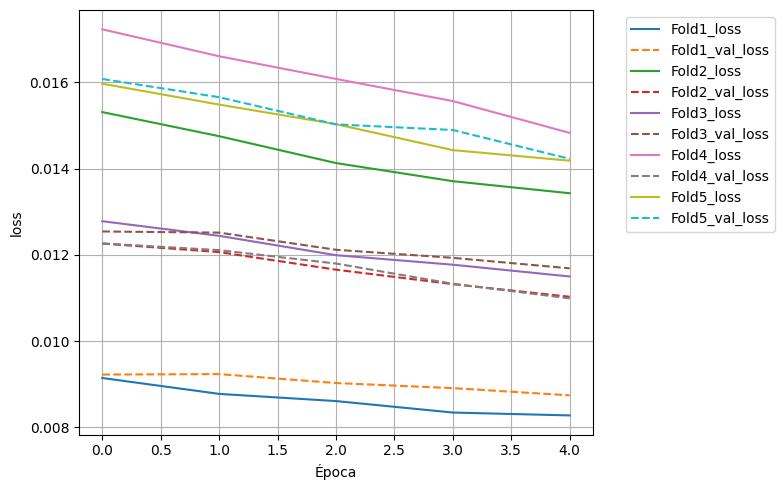
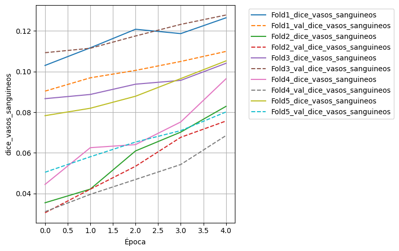
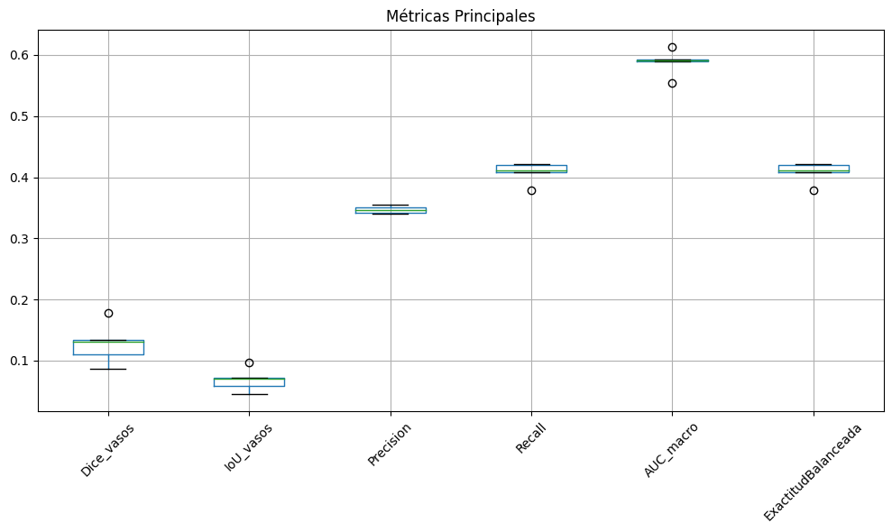
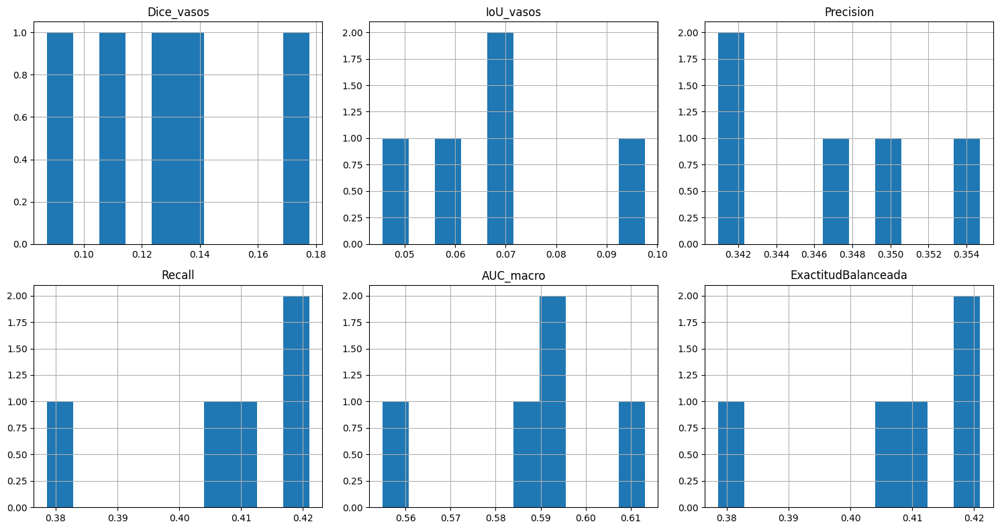
Mejor modelo: Fold 3
/opt/miniconda3/envs/ml_venv/lib/python3.9/site-packages/keras/src/layers/activations/leaky_relu.py:41: UserWarning: Argument `alpha` is deprecated. Use `negative_slope` instead.
warnings.warn(
Se cargaron 100 imágenes.
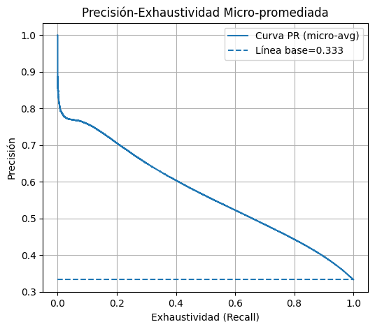
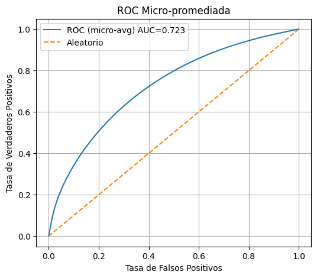
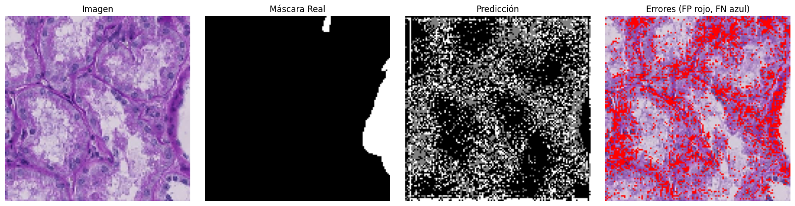
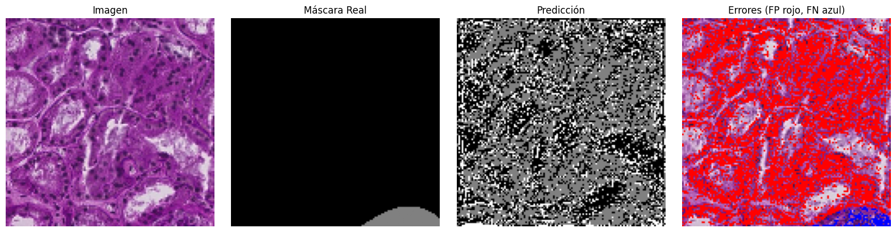
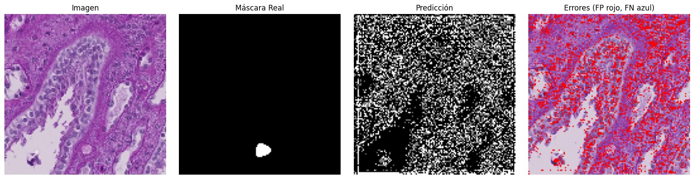
(<Functional name=functional_1, built=True>,
fold Dice_vasos IoU_vasos Precision Recall AUC_macro \
media 3.0 0.128064 0.068688 0.346776 0.407645 0.588236
ExactitudBalanceada
media 0.407645 ,
None,
None)
Modelo SegNet#
from tensorflow.keras import layers, models
from tensorflow.keras.layers import LeakyReLU, SpatialDropout2D
# Bloque de convolución con dropout y normalización
def bloque_convolucional(x, filtros, kernel=3, dropout=0.1, bn_momentum=0.9):
x = layers.Conv2D(filtros, kernel, padding='same', kernel_initializer='he_normal')(x)
x = layers.BatchNormalization(momentum=bn_momentum)(x)
x = LeakyReLU(alpha=0.1)(x)
x = SpatialDropout2D(dropout)(x)
x = layers.Conv2D(filtros, kernel, padding='same', kernel_initializer='he_normal')(x)
x = layers.BatchNormalization(momentum=bn_momentum)(x)
x = LeakyReLU(alpha=0.1)(x)
x = SpatialDropout2D(dropout)(x)
return x
# Bloque de encoder con max pooling
def bloque_encoder(x, filtros):
x = bloque_convolucional(x, filtros)
x = layers.MaxPooling2D((2, 2))(x)
return x
# Bloque de decoder con transposed convolution y concatenación
def bloque_decoder(x, skip, filtros):
x = layers.Conv2DTranspose(filtros, 2, strides=2, padding='same')(x)
x = layers.Concatenate()([x, skip])
x = bloque_convolucional(x, filtros)
return x
# Modelo SegNet simplificado
def construir_segnet(entrada, num_clases):
x_input = layers.Input(shape=entrada)
# Encoder con almacenamiento de skips antes de pooling
c1 = bloque_convolucional(x_input, 64)
e1 = layers.MaxPooling2D((2, 2))(c1)
c2 = bloque_convolucional(e1, 128)
e2 = layers.MaxPooling2D((2, 2))(c2)
c3 = bloque_convolucional(e2, 256)
e3 = layers.MaxPooling2D((2, 2))(c3)
c4 = bloque_convolucional(e3, 512)
e4 = layers.MaxPooling2D((2, 2))(c4)
# Bottleneck
b = bloque_convolucional(e4, 512)
# Decoder (uso de skips correctos del encoder)
d4 = bloque_decoder(b, c4, 512)
d3 = bloque_decoder(d4, c3, 256)
d2 = bloque_decoder(d3, c2, 128)
d1 = bloque_decoder(d2, c1, 64)
# Salida
salidas = layers.Conv2D(num_clases, 1, activation='softmax')(d1)
return models.Model(x_input, salidas)
directorio_checkpoints = direc_base / 'pesos_entrenamiento_segnet'
# Crear el directorio si no existe
directorio_checkpoints.mkdir(parents=True, exist_ok=True)
ejecutar_pipeline_completo(
lista_ids=sorted(anotaciones_por_tile.keys()),
funcion_cargar=cargar_imagen_y_mascara,
funcion_construir_modelo=lambda: construir_segnet(entrada=(*TAMANO_IMAGEN, 3), num_clases=NUMERO_CLASES),
ruta_base=directorio_checkpoints,
n_splits=5,
epochs=5,
batch_size=2
)
0%| | 0/5 [00:00<?, ?it/s]
--- Fold 1/5 ---
Se cargaron 100 imágenes.
Pesos por clase: [0.05089327 0.03487359 0.91423315]
Se cargaron 100 imágenes.
Epoch 1/5
50/50 ━━━━━━━━━━━━━━━━━━━━ 0s 176ms/step - dice_vasos_sanguineos: 0.0952 - lambda: 0.0328 - loss: 0.0122
Epoch 1: dice_vasos_sanguineos improved from -inf to 0.10044, saving model to /Users/pachonarvaez/PARCIALML/docs/pesos_entrenamiento_segnet/pesos_entrenamiento/fold_1.weights.h5
50/50 ━━━━━━━━━━━━━━━━━━━━ 27s 243ms/step - dice_vasos_sanguineos: 0.0953 - lambda: 0.0328 - loss: 0.0122 - val_dice_vasos_sanguineos: 0.0716 - val_lambda: 0.0261 - val_loss: 0.0103
Epoch 2/5
50/50 ━━━━━━━━━━━━━━━━━━━━ 0s 188ms/step - dice_vasos_sanguineos: 0.0985 - lambda: 0.0338 - loss: 0.0094
Epoch 2: dice_vasos_sanguineos did not improve from 0.10044
50/50 ━━━━━━━━━━━━━━━━━━━━ 11s 220ms/step - dice_vasos_sanguineos: 0.0985 - lambda: 0.0338 - loss: 0.0094 - val_dice_vasos_sanguineos: 0.0827 - val_lambda: 0.0285 - val_loss: 0.0103
Epoch 3/5
50/50 ━━━━━━━━━━━━━━━━━━━━ 0s 206ms/step - dice_vasos_sanguineos: 0.1203 - lambda: 0.0385 - loss: 0.0100
Epoch 3: dice_vasos_sanguineos improved from 0.10044 to 0.12526, saving model to /Users/pachonarvaez/PARCIALML/docs/pesos_entrenamiento_segnet/pesos_entrenamiento/fold_1.weights.h5
50/50 ━━━━━━━━━━━━━━━━━━━━ 13s 253ms/step - dice_vasos_sanguineos: 0.1204 - lambda: 0.0385 - loss: 0.0100 - val_dice_vasos_sanguineos: 0.0880 - val_lambda: 0.0298 - val_loss: 0.0101
Epoch 4/5
50/50 ━━━━━━━━━━━━━━━━━━━━ 0s 194ms/step - dice_vasos_sanguineos: 0.0924 - lambda: 0.0331 - loss: 0.0097
Epoch 4: dice_vasos_sanguineos did not improve from 0.12526
50/50 ━━━━━━━━━━━━━━━━━━━━ 12s 227ms/step - dice_vasos_sanguineos: 0.0930 - lambda: 0.0332 - loss: 0.0097 - val_dice_vasos_sanguineos: 0.0980 - val_lambda: 0.0321 - val_loss: 0.0098
Epoch 5/5
50/50 ━━━━━━━━━━━━━━━━━━━━ 0s 188ms/step - dice_vasos_sanguineos: 0.1229 - lambda: 0.0397 - loss: 0.0109
Epoch 5: dice_vasos_sanguineos did not improve from 0.12526
50/50 ━━━━━━━━━━━━━━━━━━━━ 11s 223ms/step - dice_vasos_sanguineos: 0.1229 - lambda: 0.0396 - loss: 0.0109 - val_dice_vasos_sanguineos: 0.0993 - val_lambda: 0.0325 - val_loss: 0.0100
Restoring model weights from the end of the best epoch: 3.
Se cargaron 100 imágenes.
20%|██ | 1/5 [01:36<06:26, 96.68s/it]
--- Fold 2/5 ---
/opt/miniconda3/envs/ml_venv/lib/python3.9/site-packages/keras/src/layers/activations/leaky_relu.py:41: UserWarning: Argument `alpha` is deprecated. Use `negative_slope` instead.
warnings.warn(
Se cargaron 100 imágenes.
Pesos por clase: [0.08408388 0.05893792 0.85697824]
Se cargaron 100 imágenes.
Epoch 1/5
50/50 ━━━━━━━━━━━━━━━━━━━━ 0s 181ms/step - dice_vasos_sanguineos: 0.0597 - lambda: 0.0272 - loss: 0.0145
Epoch 1: dice_vasos_sanguineos improved from -inf to 0.05950, saving model to /Users/pachonarvaez/PARCIALML/docs/pesos_entrenamiento_segnet/pesos_entrenamiento/fold_2.weights.h5
50/50 ━━━━━━━━━━━━━━━━━━━━ 29s 250ms/step - dice_vasos_sanguineos: 0.0597 - lambda: 0.0272 - loss: 0.0145 - val_dice_vasos_sanguineos: 0.0297 - val_lambda: 0.0223 - val_loss: 0.0111
Epoch 2/5
50/50 ━━━━━━━━━━━━━━━━━━━━ 0s 189ms/step - dice_vasos_sanguineos: 0.0526 - lambda: 0.0245 - loss: 0.0141
Epoch 2: dice_vasos_sanguineos improved from 0.05950 to 0.05968, saving model to /Users/pachonarvaez/PARCIALML/docs/pesos_entrenamiento_segnet/pesos_entrenamiento/fold_2.weights.h5
50/50 ━━━━━━━━━━━━━━━━━━━━ 12s 236ms/step - dice_vasos_sanguineos: 0.0528 - lambda: 0.0245 - loss: 0.0141 - val_dice_vasos_sanguineos: 0.0505 - val_lambda: 0.0269 - val_loss: 0.0107
Epoch 3/5
50/50 ━━━━━━━━━━━━━━━━━━━━ 0s 209ms/step - dice_vasos_sanguineos: 0.0624 - lambda: 0.0281 - loss: 0.0134
Epoch 3: dice_vasos_sanguineos improved from 0.05968 to 0.07229, saving model to /Users/pachonarvaez/PARCIALML/docs/pesos_entrenamiento_segnet/pesos_entrenamiento/fold_2.weights.h5
50/50 ━━━━━━━━━━━━━━━━━━━━ 13s 250ms/step - dice_vasos_sanguineos: 0.0626 - lambda: 0.0281 - loss: 0.0134 - val_dice_vasos_sanguineos: 0.0636 - val_lambda: 0.0300 - val_loss: 0.0106
Epoch 4/5
50/50 ━━━━━━━━━━━━━━━━━━━━ 0s 192ms/step - dice_vasos_sanguineos: 0.0603 - lambda: 0.0276 - loss: 0.0135
Epoch 4: dice_vasos_sanguineos improved from 0.07229 to 0.08069, saving model to /Users/pachonarvaez/PARCIALML/docs/pesos_entrenamiento_segnet/pesos_entrenamiento/fold_2.weights.h5
50/50 ━━━━━━━━━━━━━━━━━━━━ 12s 241ms/step - dice_vasos_sanguineos: 0.0607 - lambda: 0.0276 - loss: 0.0135 - val_dice_vasos_sanguineos: 0.0657 - val_lambda: 0.0305 - val_loss: 0.0104
Epoch 5/5
50/50 ━━━━━━━━━━━━━━━━━━━━ 0s 237ms/step - dice_vasos_sanguineos: 0.1019 - lambda: 0.0356 - loss: 0.0145
Epoch 5: dice_vasos_sanguineos improved from 0.08069 to 0.10565, saving model to /Users/pachonarvaez/PARCIALML/docs/pesos_entrenamiento_segnet/pesos_entrenamiento/fold_2.weights.h5
50/50 ━━━━━━━━━━━━━━━━━━━━ 14s 284ms/step - dice_vasos_sanguineos: 0.1020 - lambda: 0.0356 - loss: 0.0145 - val_dice_vasos_sanguineos: 0.0710 - val_lambda: 0.0319 - val_loss: 0.0103
Restoring model weights from the end of the best epoch: 5.
Se cargaron 100 imágenes.
40%|████ | 2/5 [03:19<05:00, 100.07s/it]
--- Fold 3/5 ---
/opt/miniconda3/envs/ml_venv/lib/python3.9/site-packages/keras/src/layers/activations/leaky_relu.py:41: UserWarning: Argument `alpha` is deprecated. Use `negative_slope` instead.
warnings.warn(
Se cargaron 100 imágenes.
Pesos por clase: [0.0858018 0.06360102 0.8505972 ]
Se cargaron 100 imágenes.
Epoch 1/5
50/50 ━━━━━━━━━━━━━━━━━━━━ 0s 224ms/step - dice_vasos_sanguineos: 0.0687 - lambda: 0.0259 - loss: 0.0140
Epoch 1: dice_vasos_sanguineos improved from -inf to 0.05540, saving model to /Users/pachonarvaez/PARCIALML/docs/pesos_entrenamiento_segnet/pesos_entrenamiento/fold_3.weights.h5
50/50 ━━━━━━━━━━━━━━━━━━━━ 28s 303ms/step - dice_vasos_sanguineos: 0.0684 - lambda: 0.0258 - loss: 0.0140 - val_dice_vasos_sanguineos: 0.0714 - val_lambda: 0.0281 - val_loss: 0.0121
Epoch 2/5
50/50 ━━━━━━━━━━━━━━━━━━━━ 0s 239ms/step - dice_vasos_sanguineos: 0.0499 - lambda: 0.0255 - loss: 0.0143
Epoch 2: dice_vasos_sanguineos improved from 0.05540 to 0.06549, saving model to /Users/pachonarvaez/PARCIALML/docs/pesos_entrenamiento_segnet/pesos_entrenamiento/fold_3.weights.h5
50/50 ━━━━━━━━━━━━━━━━━━━━ 15s 290ms/step - dice_vasos_sanguineos: 0.0502 - lambda: 0.0256 - loss: 0.0142 - val_dice_vasos_sanguineos: 0.0890 - val_lambda: 0.0315 - val_loss: 0.0118
Epoch 3/5
50/50 ━━━━━━━━━━━━━━━━━━━━ 0s 244ms/step - dice_vasos_sanguineos: 0.0634 - lambda: 0.0262 - loss: 0.0111
Epoch 3: dice_vasos_sanguineos improved from 0.06549 to 0.07521, saving model to /Users/pachonarvaez/PARCIALML/docs/pesos_entrenamiento_segnet/pesos_entrenamiento/fold_3.weights.h5
50/50 ━━━━━━━━━━━━━━━━━━━━ 15s 288ms/step - dice_vasos_sanguineos: 0.0637 - lambda: 0.0262 - loss: 0.0111 - val_dice_vasos_sanguineos: 0.1016 - val_lambda: 0.0343 - val_loss: 0.0117
Epoch 4/5
50/50 ━━━━━━━━━━━━━━━━━━━━ 0s 233ms/step - dice_vasos_sanguineos: 0.0938 - lambda: 0.0344 - loss: 0.0163
Epoch 4: dice_vasos_sanguineos improved from 0.07521 to 0.08873, saving model to /Users/pachonarvaez/PARCIALML/docs/pesos_entrenamiento_segnet/pesos_entrenamiento/fold_3.weights.h5
50/50 ━━━━━━━━━━━━━━━━━━━━ 14s 281ms/step - dice_vasos_sanguineos: 0.0937 - lambda: 0.0343 - loss: 0.0162 - val_dice_vasos_sanguineos: 0.1071 - val_lambda: 0.0356 - val_loss: 0.0115
Epoch 5/5
50/50 ━━━━━━━━━━━━━━━━━━━━ 0s 235ms/step - dice_vasos_sanguineos: 0.0939 - lambda: 0.0348 - loss: 0.0172
Epoch 5: dice_vasos_sanguineos did not improve from 0.08873
50/50 ━━━━━━━━━━━━━━━━━━━━ 14s 277ms/step - dice_vasos_sanguineos: 0.0938 - lambda: 0.0347 - loss: 0.0171 - val_dice_vasos_sanguineos: 0.1206 - val_lambda: 0.0387 - val_loss: 0.0112
Restoring model weights from the end of the best epoch: 4.
Se cargaron 100 imágenes.
60%|██████ | 3/5 [05:09<03:29, 104.75s/it]
--- Fold 4/5 ---
/opt/miniconda3/envs/ml_venv/lib/python3.9/site-packages/keras/src/layers/activations/leaky_relu.py:41: UserWarning: Argument `alpha` is deprecated. Use `negative_slope` instead.
warnings.warn(
Se cargaron 100 imágenes.
Pesos por clase: [0.08778861 0.05816529 0.85404605]
Se cargaron 100 imágenes.
Epoch 1/5
50/50 ━━━━━━━━━━━━━━━━━━━━ 0s 210ms/step - dice_vasos_sanguineos: 0.0424 - lambda: 0.0193 - loss: 0.0121
Epoch 1: dice_vasos_sanguineos improved from -inf to 0.05254, saving model to /Users/pachonarvaez/PARCIALML/docs/pesos_entrenamiento_segnet/pesos_entrenamiento/fold_4.weights.h5
50/50 ━━━━━━━━━━━━━━━━━━━━ 31s 292ms/step - dice_vasos_sanguineos: 0.0426 - lambda: 0.0194 - loss: 0.0122 - val_dice_vasos_sanguineos: 0.0211 - val_lambda: 0.0189 - val_loss: 0.0119
Epoch 2/5
50/50 ━━━━━━━━━━━━━━━━━━━━ 0s 294ms/step - dice_vasos_sanguineos: 0.0533 - lambda: 0.0225 - loss: 0.0146
Epoch 2: dice_vasos_sanguineos improved from 0.05254 to 0.05791, saving model to /Users/pachonarvaez/PARCIALML/docs/pesos_entrenamiento_segnet/pesos_entrenamiento/fold_4.weights.h5
50/50 ━━━━━━━━━━━━━━━━━━━━ 17s 337ms/step - dice_vasos_sanguineos: 0.0534 - lambda: 0.0225 - loss: 0.0146 - val_dice_vasos_sanguineos: 0.0305 - val_lambda: 0.0204 - val_loss: 0.0119
Epoch 3/5
50/50 ━━━━━━━━━━━━━━━━━━━━ 0s 218ms/step - dice_vasos_sanguineos: 0.0790 - lambda: 0.0280 - loss: 0.0158
Epoch 3: dice_vasos_sanguineos improved from 0.05791 to 0.07872, saving model to /Users/pachonarvaez/PARCIALML/docs/pesos_entrenamiento_segnet/pesos_entrenamiento/fold_4.weights.h5
50/50 ━━━━━━━━━━━━━━━━━━━━ 14s 269ms/step - dice_vasos_sanguineos: 0.0790 - lambda: 0.0281 - loss: 0.0158 - val_dice_vasos_sanguineos: 0.0443 - val_lambda: 0.0236 - val_loss: 0.0112
Epoch 4/5
50/50 ━━━━━━━━━━━━━━━━━━━━ 0s 233ms/step - dice_vasos_sanguineos: 0.0866 - lambda: 0.0329 - loss: 0.0156
Epoch 4: dice_vasos_sanguineos improved from 0.07872 to 0.09450, saving model to /Users/pachonarvaez/PARCIALML/docs/pesos_entrenamiento_segnet/pesos_entrenamiento/fold_4.weights.h5
50/50 ━━━━━━━━━━━━━━━━━━━━ 15s 290ms/step - dice_vasos_sanguineos: 0.0868 - lambda: 0.0329 - loss: 0.0155 - val_dice_vasos_sanguineos: 0.0583 - val_lambda: 0.0271 - val_loss: 0.0109
Epoch 5/5
50/50 ━━━━━━━━━━━━━━━━━━━━ 0s 255ms/step - dice_vasos_sanguineos: 0.0997 - lambda: 0.0333 - loss: 0.0139
Epoch 5: dice_vasos_sanguineos improved from 0.09450 to 0.10226, saving model to /Users/pachonarvaez/PARCIALML/docs/pesos_entrenamiento_segnet/pesos_entrenamiento/fold_4.weights.h5
50/50 ━━━━━━━━━━━━━━━━━━━━ 16s 307ms/step - dice_vasos_sanguineos: 0.0998 - lambda: 0.0333 - loss: 0.0139 - val_dice_vasos_sanguineos: 0.0704 - val_lambda: 0.0300 - val_loss: 0.0107
Restoring model weights from the end of the best epoch: 5.
Se cargaron 100 imágenes.
80%|████████ | 4/5 [07:05<01:49, 109.32s/it]
--- Fold 5/5 ---
/opt/miniconda3/envs/ml_venv/lib/python3.9/site-packages/keras/src/layers/activations/leaky_relu.py:41: UserWarning: Argument `alpha` is deprecated. Use `negative_slope` instead.
warnings.warn(
Se cargaron 100 imágenes.
Pesos por clase: [0.08522165 0.06814457 0.84663373]
Se cargaron 100 imágenes.
Epoch 1/5
50/50 ━━━━━━━━━━━━━━━━━━━━ 0s 204ms/step - dice_vasos_sanguineos: 0.0845 - lambda: 0.0234 - loss: 0.0137
Epoch 1: dice_vasos_sanguineos improved from -inf to 0.09368, saving model to /Users/pachonarvaez/PARCIALML/docs/pesos_entrenamiento_segnet/pesos_entrenamiento/fold_5.weights.h5
50/50 ━━━━━━━━━━━━━━━━━━━━ 28s 279ms/step - dice_vasos_sanguineos: 0.0847 - lambda: 0.0234 - loss: 0.0138 - val_dice_vasos_sanguineos: 0.0732 - val_lambda: 0.0222 - val_loss: 0.0139
Epoch 2/5
50/50 ━━━━━━━━━━━━━━━━━━━━ 0s 215ms/step - dice_vasos_sanguineos: 0.1006 - lambda: 0.0266 - loss: 0.0146
Epoch 2: dice_vasos_sanguineos improved from 0.09368 to 0.10573, saving model to /Users/pachonarvaez/PARCIALML/docs/pesos_entrenamiento_segnet/pesos_entrenamiento/fold_5.weights.h5
50/50 ━━━━━━━━━━━━━━━━━━━━ 14s 265ms/step - dice_vasos_sanguineos: 0.1007 - lambda: 0.0266 - loss: 0.0147 - val_dice_vasos_sanguineos: 0.0814 - val_lambda: 0.0240 - val_loss: 0.0141
Epoch 3/5
50/50 ━━━━━━━━━━━━━━━━━━━━ 0s 244ms/step - dice_vasos_sanguineos: 0.0955 - lambda: 0.0300 - loss: 0.0174
Epoch 3: dice_vasos_sanguineos did not improve from 0.10573
50/50 ━━━━━━━━━━━━━━━━━━━━ 14s 282ms/step - dice_vasos_sanguineos: 0.0955 - lambda: 0.0300 - loss: 0.0174 - val_dice_vasos_sanguineos: 0.0864 - val_lambda: 0.0263 - val_loss: 0.0135
Epoch 4/5
50/50 ━━━━━━━━━━━━━━━━━━━━ 0s 228ms/step - dice_vasos_sanguineos: 0.1252 - lambda: 0.0327 - loss: 0.0165
Epoch 4: dice_vasos_sanguineos improved from 0.10573 to 0.10615, saving model to /Users/pachonarvaez/PARCIALML/docs/pesos_entrenamiento_segnet/pesos_entrenamiento/fold_5.weights.h5
50/50 ━━━━━━━━━━━━━━━━━━━━ 14s 279ms/step - dice_vasos_sanguineos: 0.1248 - lambda: 0.0326 - loss: 0.0165 - val_dice_vasos_sanguineos: 0.0919 - val_lambda: 0.0264 - val_loss: 0.0133
Epoch 5/5
50/50 ━━━━━━━━━━━━━━━━━━━━ 0s 248ms/step - dice_vasos_sanguineos: 0.0916 - lambda: 0.0290 - loss: 0.0171
Epoch 5: dice_vasos_sanguineos improved from 0.10615 to 0.10682, saving model to /Users/pachonarvaez/PARCIALML/docs/pesos_entrenamiento_segnet/pesos_entrenamiento/fold_5.weights.h5
50/50 ━━━━━━━━━━━━━━━━━━━━ 15s 296ms/step - dice_vasos_sanguineos: 0.0919 - lambda: 0.0290 - loss: 0.0171 - val_dice_vasos_sanguineos: 0.0960 - val_lambda: 0.0296 - val_loss: 0.0129
Restoring model weights from the end of the best epoch: 5.
Se cargaron 100 imágenes.
100%|██████████| 5/5 [08:51<00:00, 106.38s/it]
--- Resumen de Métricas ---
fold Dice_vasos IoU_vasos Precision Recall AUC_macro \
media 3.0 0.156534 0.08516 0.357575 0.408986 0.61517
ExactitudBalanceada
media 0.408986
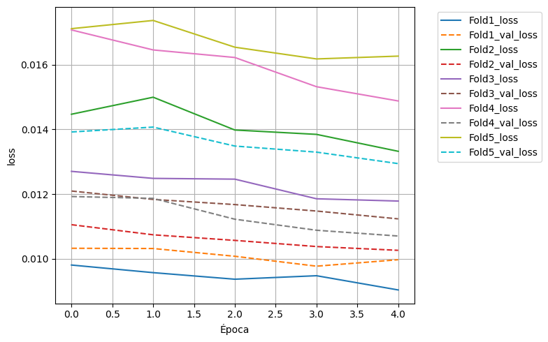
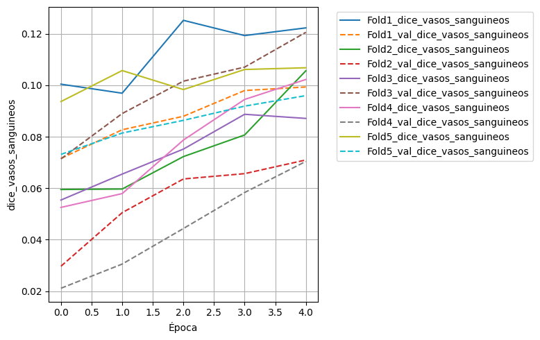
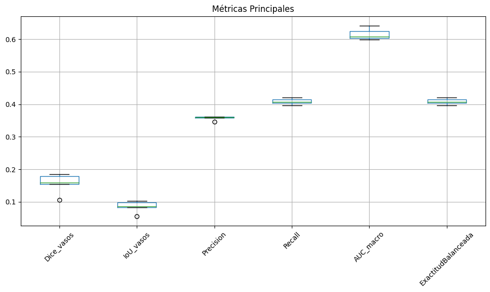
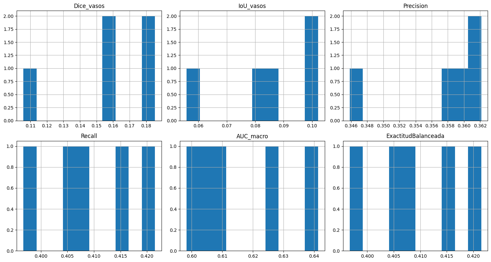
Mejor modelo: Fold 1
/opt/miniconda3/envs/ml_venv/lib/python3.9/site-packages/keras/src/layers/activations/leaky_relu.py:41: UserWarning: Argument `alpha` is deprecated. Use `negative_slope` instead.
warnings.warn(
Se cargaron 100 imágenes.
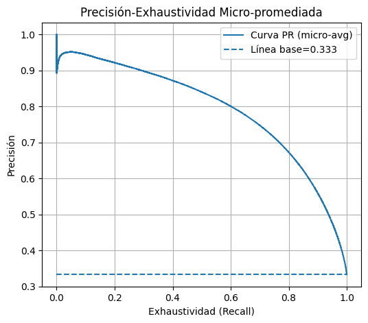
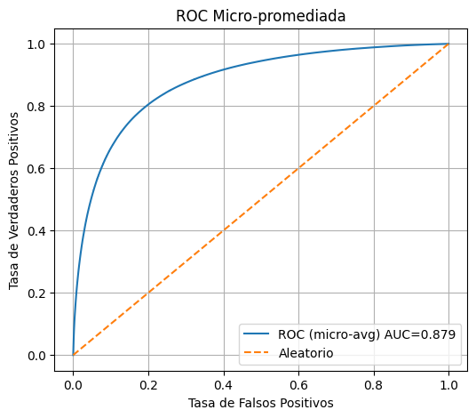
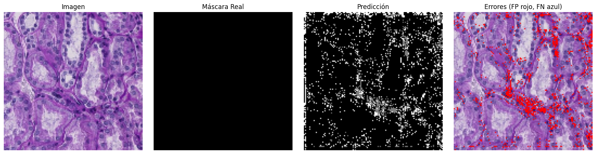
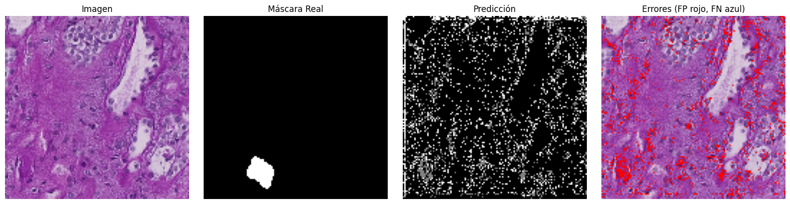
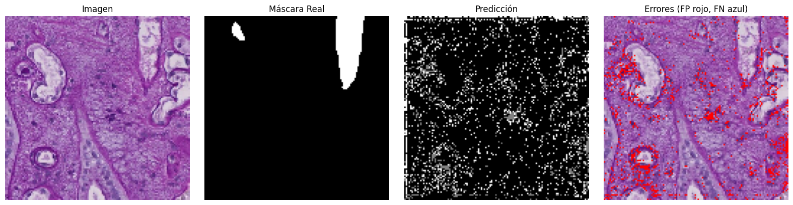
(<Functional name=functional_1, built=True>,
fold Dice_vasos IoU_vasos Precision Recall AUC_macro \
media 3.0 0.156534 0.08516 0.357575 0.408986 0.61517
ExactitudBalanceada
media 0.408986 ,
None,
None)
Modelo DeepLabV3Plus#
from tensorflow.keras import layers, models
import tensorflow as tf
def bloque_aspp(x, filtros):
y1 = layers.Conv2D(filtros, 1, padding='same', dilation_rate=1, activation='relu')(x)
y2 = layers.Conv2D(filtros, 3, padding='same', dilation_rate=6, activation='relu')(x)
y3 = layers.Conv2D(filtros, 3, padding='same', dilation_rate=12, activation='relu')(x)
y4 = layers.Conv2D(filtros, 3, padding='same', dilation_rate=18, activation='relu')(x)
h, w = x.shape[1], x.shape[2]
y5 = layers.GlobalAveragePooling2D()(x)
y5 = layers.Reshape((1, 1, x.shape[-1]))(y5)
y5 = layers.UpSampling2D(size=(h, w), interpolation='bilinear')(y5)
y = layers.Concatenate()([y1, y2, y3, y4, y5])
return layers.Conv2D(filtros, 1, padding='same', activation='relu')(y)
def construir_deeplab_v3_plus(tamaño_entrada=(512, 512, 3), num_clases=3):
backbone = tf.keras.applications.ResNet50(input_shape=tamaño_entrada, include_top=False, weights='imagenet')
x = bloque_aspp(backbone.output, filtros=256)
x = layers.UpSampling2D(size=(4, 4), interpolation='bilinear')(x)
bajo_nivel = backbone.get_layer("conv2_block3_2_relu").output
bajo_nivel = layers.Conv2D(48, 1, padding='same', activation='relu')(bajo_nivel)
x = layers.UpSampling2D(size=(2, 2), interpolation='bilinear')(x) # ✅ Ajustar tamaño
x = layers.Concatenate()([x, bajo_nivel])
x = layers.Conv2D(256, 3, padding='same', activation='relu')(x)
x = layers.UpSampling2D(size=(4, 4), interpolation='bilinear')(x)
return models.Model(inputs=backbone.input, outputs=layers.Conv2D(num_clases, 1, activation='softmax')(x))
directorio_checkpoints = direc_base / 'pesos_entrenamiento_deep'
# Crear el directorio si no existe
directorio_checkpoints.mkdir(parents=True, exist_ok=True)
ejecutar_pipeline_completo(
lista_ids=sorted(anotaciones_por_tile.keys()),
funcion_cargar=cargar_imagen_y_mascara,
funcion_construir_modelo=lambda: construir_deeplab_v3_plus(tamaño_entrada=(*TAMANO_IMAGEN, 3), num_clases=NUMERO_CLASES),
ruta_base=directorio_checkpoints,
n_splits=5,
epochs=5,
batch_size=2
)
0%| | 0/5 [00:00<?, ?it/s]
--- Fold 1/5 ---
Se cargaron 100 imágenes.
Pesos por clase: [0.05089327 0.03487359 0.91423315]
Se cargaron 100 imágenes.
Epoch 1/5
50/50 ━━━━━━━━━━━━━━━━━━━━ 0s 1s/step - dice_vasos_sanguineos: 9.3900e-04 - lambda: 0.0042 - loss: 0.0072
Epoch 1: dice_vasos_sanguineos improved from -inf to 0.00663, saving model to /Users/pachonarvaez/PARCIALML/docs/pesos_entrenamiento_deep/pesos_entrenamiento/fold_1.weights.h5
50/50 ━━━━━━━━━━━━━━━━━━━━ 128s 2s/step - dice_vasos_sanguineos: 0.0011 - lambda: 0.0042 - loss: 0.0072 - val_dice_vasos_sanguineos: 0.0214 - val_lambda: 0.0066 - val_loss: 0.0082
Epoch 2/5
50/50 ━━━━━━━━━━━━━━━━━━━━ 0s 2s/step - dice_vasos_sanguineos: 0.1606 - lambda: 0.0381 - loss: 0.0078
Epoch 2: dice_vasos_sanguineos improved from 0.00663 to 0.15687, saving model to /Users/pachonarvaez/PARCIALML/docs/pesos_entrenamiento_deep/pesos_entrenamiento/fold_1.weights.h5
50/50 ━━━━━━━━━━━━━━━━━━━━ 83s 2s/step - dice_vasos_sanguineos: 0.1605 - lambda: 0.0381 - loss: 0.0078 - val_dice_vasos_sanguineos: 0.0820 - val_lambda: 0.0228 - val_loss: 0.0129
Epoch 3/5
50/50 ━━━━━━━━━━━━━━━━━━━━ 0s 1s/step - dice_vasos_sanguineos: 0.1040 - lambda: 0.0347 - loss: 0.0059
Epoch 3: dice_vasos_sanguineos did not improve from 0.15687
50/50 ━━━━━━━━━━━━━━━━━━━━ 74s 1s/step - dice_vasos_sanguineos: 0.1046 - lambda: 0.0349 - loss: 0.0059 - val_dice_vasos_sanguineos: 0.1012 - val_lambda: 0.0280 - val_loss: 0.0343
Epoch 4/5
50/50 ━━━━━━━━━━━━━━━━━━━━ 0s 1s/step - dice_vasos_sanguineos: 0.2534 - lambda: 0.0699 - loss: 0.0058
Epoch 4: dice_vasos_sanguineos improved from 0.15687 to 0.26052, saving model to /Users/pachonarvaez/PARCIALML/docs/pesos_entrenamiento_deep/pesos_entrenamiento/fold_1.weights.h5
50/50 ━━━━━━━━━━━━━━━━━━━━ 75s 1s/step - dice_vasos_sanguineos: 0.2535 - lambda: 0.0700 - loss: 0.0058 - val_dice_vasos_sanguineos: 0.0417 - val_lambda: 0.0204 - val_loss: 0.0735
Epoch 5/5
50/50 ━━━━━━━━━━━━━━━━━━━━ 0s 1s/step - dice_vasos_sanguineos: 0.2059 - lambda: 0.0653 - loss: 0.0038
Epoch 5: dice_vasos_sanguineos improved from 0.26052 to 0.30157, saving model to /Users/pachonarvaez/PARCIALML/docs/pesos_entrenamiento_deep/pesos_entrenamiento/fold_1.weights.h5
50/50 ━━━━━━━━━━━━━━━━━━━━ 76s 2s/step - dice_vasos_sanguineos: 0.2078 - lambda: 0.0659 - loss: 0.0039 - val_dice_vasos_sanguineos: 0.0765 - val_lambda: 0.0271 - val_loss: 0.0715
Restoring model weights from the end of the best epoch: 5.
Se cargaron 100 imágenes.
20%|██ | 1/5 [07:45<31:00, 465.25s/it]
--- Fold 2/5 ---
Se cargaron 100 imágenes.
Pesos por clase: [0.08408388 0.05893792 0.85697824]
Se cargaron 100 imágenes.
Epoch 1/5
50/50 ━━━━━━━━━━━━━━━━━━━━ 0s 2s/step - dice_vasos_sanguineos: 6.7680e-04 - lambda: 0.0038 - loss: 0.0143
Epoch 1: dice_vasos_sanguineos improved from -inf to 0.00162, saving model to /Users/pachonarvaez/PARCIALML/docs/pesos_entrenamiento_deep/pesos_entrenamiento/fold_2.weights.h5
50/50 ━━━━━━━━━━━━━━━━━━━━ 141s 2s/step - dice_vasos_sanguineos: 6.9529e-04 - lambda: 0.0038 - loss: 0.0143 - val_dice_vasos_sanguineos: 0.0000e+00 - val_lambda: 0.0151 - val_loss: 0.0109
Epoch 2/5
50/50 ━━━━━━━━━━━━━━━━━━━━ 0s 1s/step - dice_vasos_sanguineos: 0.0561 - lambda: 0.0215 - loss: 0.0107
Epoch 2: dice_vasos_sanguineos improved from 0.00162 to 0.10711, saving model to /Users/pachonarvaez/PARCIALML/docs/pesos_entrenamiento_deep/pesos_entrenamiento/fold_2.weights.h5
50/50 ━━━━━━━━━━━━━━━━━━━━ 80s 2s/step - dice_vasos_sanguineos: 0.0571 - lambda: 0.0218 - loss: 0.0107 - val_dice_vasos_sanguineos: 0.0015 - val_lambda: 0.0121 - val_loss: 0.0128
Epoch 3/5
50/50 ━━━━━━━━━━━━━━━━━━━━ 0s 2s/step - dice_vasos_sanguineos: 0.0892 - lambda: 0.0301 - loss: 0.0107
Epoch 3: dice_vasos_sanguineos improved from 0.10711 to 0.14259, saving model to /Users/pachonarvaez/PARCIALML/docs/pesos_entrenamiento_deep/pesos_entrenamiento/fold_2.weights.h5
50/50 ━━━━━━━━━━━━━━━━━━━━ 81s 2s/step - dice_vasos_sanguineos: 0.0903 - lambda: 0.0304 - loss: 0.0106 - val_dice_vasos_sanguineos: 0.0740 - val_lambda: 0.0301 - val_loss: 0.0232
Epoch 4/5
50/50 ━━━━━━━━━━━━━━━━━━━━ 0s 2s/step - dice_vasos_sanguineos: 0.1932 - lambda: 0.0548 - loss: 0.0145
Epoch 4: dice_vasos_sanguineos improved from 0.14259 to 0.20478, saving model to /Users/pachonarvaez/PARCIALML/docs/pesos_entrenamiento_deep/pesos_entrenamiento/fold_2.weights.h5
50/50 ━━━━━━━━━━━━━━━━━━━━ 83s 2s/step - dice_vasos_sanguineos: 0.1934 - lambda: 0.0550 - loss: 0.0144 - val_dice_vasos_sanguineos: 3.4513e-05 - val_lambda: 0.0169 - val_loss: 0.0722
Epoch 5/5
50/50 ━━━━━━━━━━━━━━━━━━━━ 0s 1s/step - dice_vasos_sanguineos: 0.2773 - lambda: 0.0893 - loss: 0.0081
Epoch 5: dice_vasos_sanguineos improved from 0.20478 to 0.25905, saving model to /Users/pachonarvaez/PARCIALML/docs/pesos_entrenamiento_deep/pesos_entrenamiento/fold_2.weights.h5
50/50 ━━━━━━━━━━━━━━━━━━━━ 80s 2s/step - dice_vasos_sanguineos: 0.2770 - lambda: 0.0891 - loss: 0.0081 - val_dice_vasos_sanguineos: 0.0000e+00 - val_lambda: 0.0147 - val_loss: 0.0802
Restoring model weights from the end of the best epoch: 5.
Se cargaron 100 imágenes.
40%|████ | 2/5 [16:06<24:19, 486.65s/it]
--- Fold 3/5 ---
Se cargaron 100 imágenes.
Pesos por clase: [0.0858018 0.06360102 0.8505972 ]
Se cargaron 100 imágenes.
Epoch 1/5
50/50 ━━━━━━━━━━━━━━━━━━━━ 0s 2s/step - dice_vasos_sanguineos: 0.0130 - lambda: 0.0065 - loss: 0.0094
Epoch 1: dice_vasos_sanguineos improved from -inf to 0.02315, saving model to /Users/pachonarvaez/PARCIALML/docs/pesos_entrenamiento_deep/pesos_entrenamiento/fold_3.weights.h5
50/50 ━━━━━━━━━━━━━━━━━━━━ 149s 2s/step - dice_vasos_sanguineos: 0.0132 - lambda: 0.0066 - loss: 0.0094 - val_dice_vasos_sanguineos: 0.0881 - val_lambda: 0.0276 - val_loss: 0.0117
Epoch 2/5
50/50 ━━━━━━━━━━━━━━━━━━━━ 0s 2s/step - dice_vasos_sanguineos: 0.0650 - lambda: 0.0183 - loss: 0.0110
Epoch 2: dice_vasos_sanguineos improved from 0.02315 to 0.06062, saving model to /Users/pachonarvaez/PARCIALML/docs/pesos_entrenamiento_deep/pesos_entrenamiento/fold_3.weights.h5
50/50 ━━━━━━━━━━━━━━━━━━━━ 94s 2s/step - dice_vasos_sanguineos: 0.0649 - lambda: 0.0183 - loss: 0.0110 - val_dice_vasos_sanguineos: 0.0189 - val_lambda: 0.0187 - val_loss: 0.0243
Epoch 3/5
50/50 ━━━━━━━━━━━━━━━━━━━━ 0s 2s/step - dice_vasos_sanguineos: 0.1602 - lambda: 0.0390 - loss: 0.0098
Epoch 3: dice_vasos_sanguineos improved from 0.06062 to 0.14464, saving model to /Users/pachonarvaez/PARCIALML/docs/pesos_entrenamiento_deep/pesos_entrenamiento/fold_3.weights.h5
50/50 ━━━━━━━━━━━━━━━━━━━━ 85s 2s/step - dice_vasos_sanguineos: 0.1599 - lambda: 0.0389 - loss: 0.0098 - val_dice_vasos_sanguineos: 0.0000e+00 - val_lambda: 0.0150 - val_loss: 0.0793
Epoch 4/5
50/50 ━━━━━━━━━━━━━━━━━━━━ 0s 2s/step - dice_vasos_sanguineos: 0.0814 - lambda: 0.0291 - loss: 0.0081
Epoch 4: dice_vasos_sanguineos improved from 0.14464 to 0.14540, saving model to /Users/pachonarvaez/PARCIALML/docs/pesos_entrenamiento_deep/pesos_entrenamiento/fold_3.weights.h5
50/50 ━━━━━━━━━━━━━━━━━━━━ 89s 2s/step - dice_vasos_sanguineos: 0.0826 - lambda: 0.0294 - loss: 0.0081 - val_dice_vasos_sanguineos: 0.0053 - val_lambda: 0.0162 - val_loss: 0.1059
Epoch 5/5
50/50 ━━━━━━━━━━━━━━━━━━━━ 0s 2s/step - dice_vasos_sanguineos: 0.1346 - lambda: 0.0444 - loss: 0.0079
Epoch 5: dice_vasos_sanguineos improved from 0.14540 to 0.18644, saving model to /Users/pachonarvaez/PARCIALML/docs/pesos_entrenamiento_deep/pesos_entrenamiento/fold_3.weights.h5
50/50 ━━━━━━━━━━━━━━━━━━━━ 84s 2s/step - dice_vasos_sanguineos: 0.1356 - lambda: 0.0447 - loss: 0.0079 - val_dice_vasos_sanguineos: 0.0126 - val_lambda: 0.0179 - val_loss: 0.1024
Restoring model weights from the end of the best epoch: 5.
Se cargaron 100 imágenes.
60%|██████ | 3/5 [25:05<17:00, 510.30s/it]
--- Fold 4/5 ---
Se cargaron 100 imágenes.
Pesos por clase: [0.08778861 0.05816529 0.85404605]
Se cargaron 100 imágenes.
Epoch 1/5
50/50 ━━━━━━━━━━━━━━━━━━━━ 0s 2s/step - dice_vasos_sanguineos: 0.0077 - lambda: 0.0143 - loss: 0.0115
Epoch 1: dice_vasos_sanguineos improved from -inf to 0.02611, saving model to /Users/pachonarvaez/PARCIALML/docs/pesos_entrenamiento_deep/pesos_entrenamiento/fold_4.weights.h5
50/50 ━━━━━━━━━━━━━━━━━━━━ 144s 2s/step - dice_vasos_sanguineos: 0.0081 - lambda: 0.0143 - loss: 0.0115 - val_dice_vasos_sanguineos: 0.0000e+00 - val_lambda: 0.0137 - val_loss: 0.0120
Epoch 2/5
50/50 ━━━━━━━━━━━━━━━━━━━━ 0s 2s/step - dice_vasos_sanguineos: 0.1700 - lambda: 0.0402 - loss: 0.0107
Epoch 2: dice_vasos_sanguineos improved from 0.02611 to 0.13947, saving model to /Users/pachonarvaez/PARCIALML/docs/pesos_entrenamiento_deep/pesos_entrenamiento/fold_4.weights.h5
50/50 ━━━━━━━━━━━━━━━━━━━━ 90s 2s/step - dice_vasos_sanguineos: 0.1694 - lambda: 0.0401 - loss: 0.0107 - val_dice_vasos_sanguineos: 0.0226 - val_lambda: 0.0203 - val_loss: 0.0120
Epoch 3/5
50/50 ━━━━━━━━━━━━━━━━━━━━ 0s 2s/step - dice_vasos_sanguineos: 0.0747 - lambda: 0.0310 - loss: 0.0107
Epoch 3: dice_vasos_sanguineos did not improve from 0.13947
50/50 ━━━━━━━━━━━━━━━━━━━━ 89s 2s/step - dice_vasos_sanguineos: 0.0750 - lambda: 0.0310 - loss: 0.0107 - val_dice_vasos_sanguineos: 0.0524 - val_lambda: 0.0163 - val_loss: 0.0659
Epoch 4/5
50/50 ━━━━━━━━━━━━━━━━━━━━ 0s 2s/step - dice_vasos_sanguineos: 0.2398 - lambda: 0.0662 - loss: 0.0128
Epoch 4: dice_vasos_sanguineos improved from 0.13947 to 0.22044, saving model to /Users/pachonarvaez/PARCIALML/docs/pesos_entrenamiento_deep/pesos_entrenamiento/fold_4.weights.h5
50/50 ━━━━━━━━━━━━━━━━━━━━ 84s 2s/step - dice_vasos_sanguineos: 0.2394 - lambda: 0.0662 - loss: 0.0128 - val_dice_vasos_sanguineos: 0.0524 - val_lambda: 0.0213 - val_loss: 0.0902
Epoch 5/5
50/50 ━━━━━━━━━━━━━━━━━━━━ 0s 5s/step - dice_vasos_sanguineos: 0.2563 - lambda: 0.0756 - loss: 0.0096
Epoch 5: dice_vasos_sanguineos improved from 0.22044 to 0.25688, saving model to /Users/pachonarvaez/PARCIALML/docs/pesos_entrenamiento_deep/pesos_entrenamiento/fold_4.weights.h5
50/50 ━━━━━━━━━━━━━━━━━━━━ 261s 5s/step - dice_vasos_sanguineos: 0.2563 - lambda: 0.0756 - loss: 0.0096 - val_dice_vasos_sanguineos: 0.0459 - val_lambda: 0.0217 - val_loss: 0.0852
Restoring model weights from the end of the best epoch: 5.
Se cargaron 100 imágenes.
80%|████████ | 4/5 [36:52<09:47, 587.85s/it]
--- Fold 5/5 ---
Se cargaron 100 imágenes.
Pesos por clase: [0.08522165 0.06814457 0.84663373]
Se cargaron 100 imágenes.
Epoch 1/5
50/50 ━━━━━━━━━━━━━━━━━━━━ 0s 2s/step - dice_vasos_sanguineos: 0.0342 - lambda: 0.0140 - loss: 0.0119
Epoch 1: dice_vasos_sanguineos improved from -inf to 0.03429, saving model to /Users/pachonarvaez/PARCIALML/docs/pesos_entrenamiento_deep/pesos_entrenamiento/fold_5.weights.h5
50/50 ━━━━━━━━━━━━━━━━━━━━ 138s 2s/step - dice_vasos_sanguineos: 0.0342 - lambda: 0.0140 - loss: 0.0119 - val_dice_vasos_sanguineos: 0.0675 - val_lambda: 0.0138 - val_loss: 0.0143
Epoch 2/5
50/50 ━━━━━━━━━━━━━━━━━━━━ 0s 2s/step - dice_vasos_sanguineos: 0.0233 - lambda: 0.0073 - loss: 0.0114
Epoch 2: dice_vasos_sanguineos improved from 0.03429 to 0.03970, saving model to /Users/pachonarvaez/PARCIALML/docs/pesos_entrenamiento_deep/pesos_entrenamiento/fold_5.weights.h5
50/50 ━━━━━━━━━━━━━━━━━━━━ 83s 2s/step - dice_vasos_sanguineos: 0.0236 - lambda: 0.0074 - loss: 0.0114 - val_dice_vasos_sanguineos: 0.0658 - val_lambda: 0.0140 - val_loss: 0.0186
Epoch 3/5
50/50 ━━━━━━━━━━━━━━━━━━━━ 0s 2s/step - dice_vasos_sanguineos: 0.0776 - lambda: 0.0210 - loss: 0.0106
Epoch 3: dice_vasos_sanguineos improved from 0.03970 to 0.08683, saving model to /Users/pachonarvaez/PARCIALML/docs/pesos_entrenamiento_deep/pesos_entrenamiento/fold_5.weights.h5
50/50 ━━━━━━━━━━━━━━━━━━━━ 89s 2s/step - dice_vasos_sanguineos: 0.0778 - lambda: 0.0211 - loss: 0.0107 - val_dice_vasos_sanguineos: 0.0514 - val_lambda: 0.0169 - val_loss: 0.0298
Epoch 4/5
50/50 ━━━━━━━━━━━━━━━━━━━━ 0s 2s/step - dice_vasos_sanguineos: 0.1679 - lambda: 0.0501 - loss: 0.0115
Epoch 4: dice_vasos_sanguineos improved from 0.08683 to 0.17944, saving model to /Users/pachonarvaez/PARCIALML/docs/pesos_entrenamiento_deep/pesos_entrenamiento/fold_5.weights.h5
50/50 ━━━━━━━━━━━━━━━━━━━━ 86s 2s/step - dice_vasos_sanguineos: 0.1681 - lambda: 0.0502 - loss: 0.0115 - val_dice_vasos_sanguineos: 0.0199 - val_lambda: 0.0080 - val_loss: 0.0882
Epoch 5/5
50/50 ━━━━━━━━━━━━━━━━━━━━ 0s 2s/step - dice_vasos_sanguineos: 0.2131 - lambda: 0.0647 - loss: 0.0090
Epoch 5: dice_vasos_sanguineos improved from 0.17944 to 0.27473, saving model to /Users/pachonarvaez/PARCIALML/docs/pesos_entrenamiento_deep/pesos_entrenamiento/fold_5.weights.h5
50/50 ━━━━━━━━━━━━━━━━━━━━ 88s 2s/step - dice_vasos_sanguineos: 0.2143 - lambda: 0.0651 - loss: 0.0090 - val_dice_vasos_sanguineos: 0.0000e+00 - val_lambda: 0.0025 - val_loss: 0.0903
Restoring model weights from the end of the best epoch: 5.
Se cargaron 100 imágenes.
100%|██████████| 5/5 [45:34<00:00, 546.87s/it]
--- Resumen de Métricas ---
fold Dice_vasos IoU_vasos Precision Recall AUC_macro \
media 3.0 0.034304 0.017831 0.329004 0.340607 0.484227
ExactitudBalanceada
media 0.340607
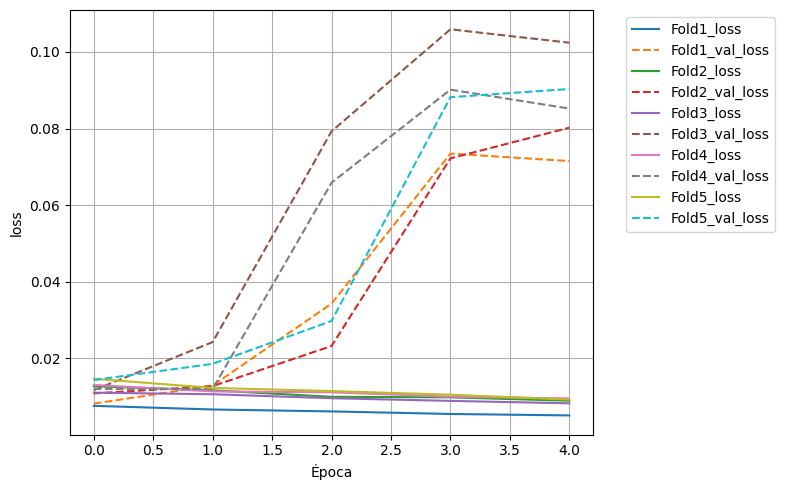
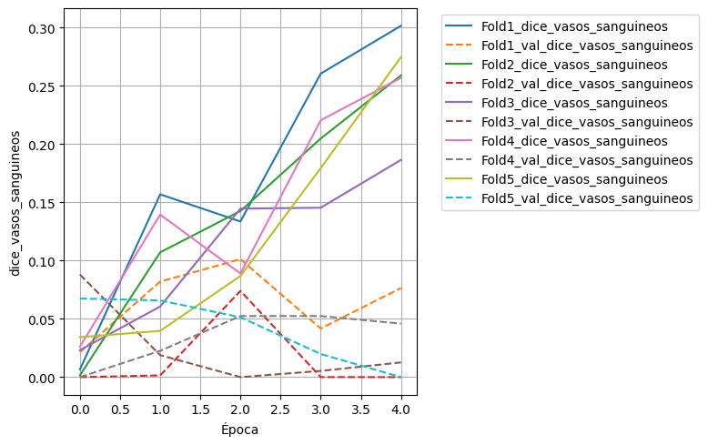
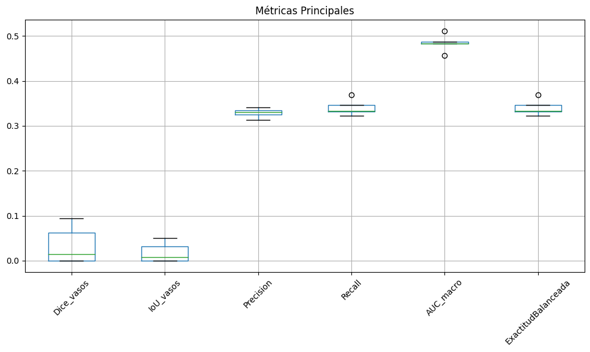
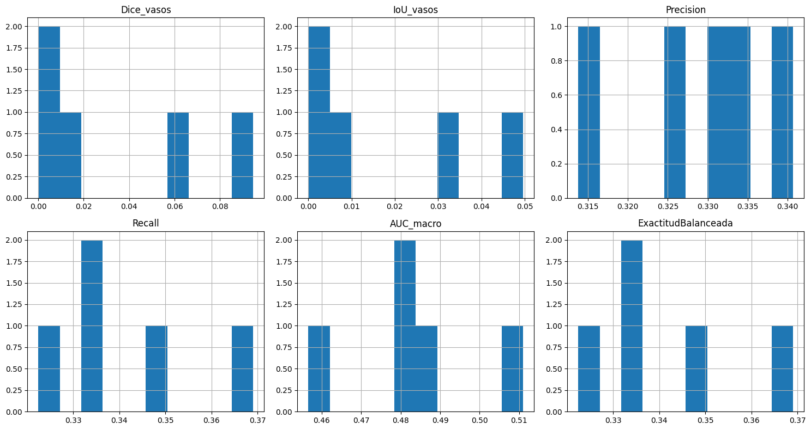
Mejor modelo: Fold 1
Se cargaron 100 imágenes.
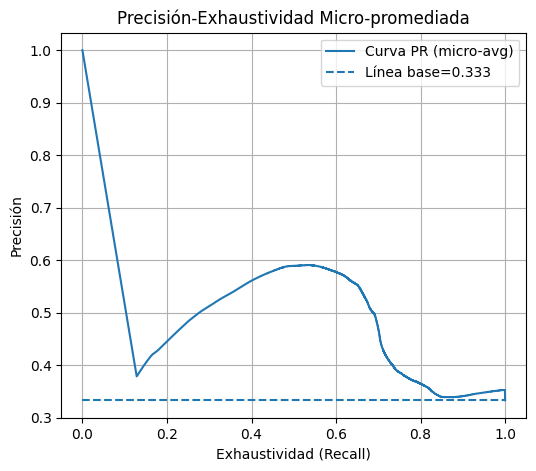
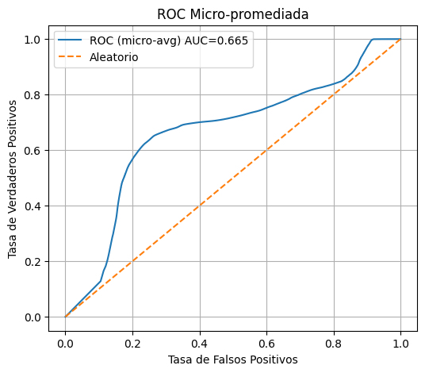
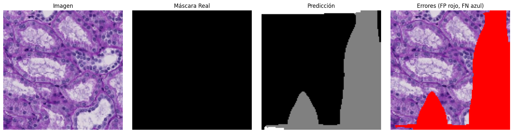
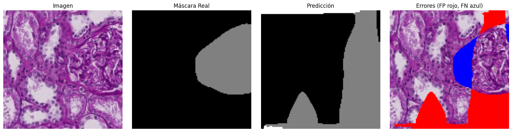
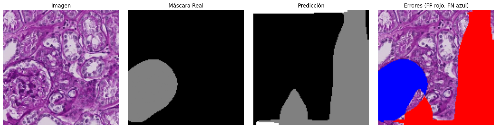
(<Functional name=functional_1, built=True>,
fold Dice_vasos IoU_vasos Precision Recall AUC_macro \
media 3.0 0.034304 0.017831 0.329004 0.340607 0.484227
ExactitudBalanceada
media 0.340607 ,
None,
None)
Modelo Attention U-Net#
from tensorflow.keras import layers, models
def puerta_atencion(skip_conn, gating, canales_intermedios):
θ_x = layers.Conv2D(canales_intermedios, 1, padding='same')(skip_conn)
φ_g = layers.Conv2D(canales_intermedios, 1, padding='same')(gating)
suma = layers.Add()([θ_x, φ_g])
relu = layers.Activation('relu')(suma)
ψ = layers.Conv2D(1, 1, padding='same')(relu)
sigmoide = layers.Activation('sigmoid')(ψ)
return layers.Multiply()([skip_conn, sigmoide])
def bloque_conv(x, filtros, tamano_kernel=3, momentum_bn=0.9, tasa_dropout=0.1):
x = layers.Conv2D(filtros, tamano_kernel, padding='same', kernel_initializer='he_normal')(x)
x = layers.BatchNormalization(momentum=momentum_bn)(x)
x = layers.LeakyReLU(alpha=0.1)(x)
x = layers.SpatialDropout2D(tasa_dropout)(x)
x = layers.Conv2D(filtros, tamano_kernel, padding='same', kernel_initializer='he_normal')(x)
x = layers.BatchNormalization(momentum=momentum_bn)(x)
x = layers.LeakyReLU(alpha=0.1)(x)
x = layers.SpatialDropout2D(tasa_dropout)(x)
return x
def bloque_encoder(x, filtros):
feats = bloque_conv(x, filtros)
pooled = layers.MaxPooling2D((2,2))(feats)
return feats, pooled
def bloque_decoder(x, skip_feats, filtros):
up = layers.UpSampling2D((2,2), interpolation='bilinear')(x)
attn = puerta_atencion(skip_feats, up, canales_intermedios=filtros//2)
merged = layers.Concatenate()([up, attn])
return bloque_conv(merged, filtros)
def construir_unet_con_atencion(tamano_entrada=(128,128,3), num_clases=2, filtros_base=32):
inputs = layers.Input(shape=tamano_entrada)
# Encoder
f1, p1 = bloque_encoder(inputs, filtros_base)
f2, p2 = bloque_encoder(p1, filtros_base*2)
f3, p3 = bloque_encoder(p2, filtros_base*4)
f4, p4 = bloque_encoder(p3, filtros_base*8)
# Bottleneck
b, _ = bloque_encoder(p4, filtros_base*16)
# Decoder
d4 = bloque_decoder(b, f4, filtros_base*8)
d3 = bloque_decoder(d4, f3, filtros_base*4)
d2 = bloque_decoder(d3, f2, filtros_base*2)
d1 = bloque_decoder(d2, f1, filtros_base)
# Output
outputs = layers.Conv2D(num_clases, 1, activation='softmax')(d1)
return models.Model(inputs, outputs)
directorio_checkpoints = direc_base / 'pesos_entrenamiento_atencion_unet'
# Crear el directorio si no existe
directorio_checkpoints.mkdir(parents=True, exist_ok=True)
ejecutar_pipeline_completo(
lista_ids=sorted(anotaciones_por_tile.keys()),
funcion_cargar=cargar_imagen_y_mascara,
funcion_construir_modelo=lambda: construir_unet_con_atencion(tamano_entrada=(*TAMANO_IMAGEN, 3), num_clases=NUMERO_CLASES),
ruta_base=directorio_checkpoints,
n_splits=5,
epochs=5,
batch_size=2
)
0%| | 0/5 [00:00<?, ?it/s]
--- Fold 1/5 ---
Se cargaron 100 imágenes.
Pesos por clase: [0.05089327 0.03487359 0.91423315]
Se cargaron 100 imágenes.
Epoch 1/5
50/50 ━━━━━━━━━━━━━━━━━━━━ 0s 328ms/step - dice_vasos_sanguineos: 0.0577 - lambda: 0.0261 - loss: 0.0099
Epoch 1: dice_vasos_sanguineos improved from -inf to 0.06081, saving model to /Users/pachonarvaez/PARCIALML/docs/pesos_entrenamiento_atencion_unet/pesos_entrenamiento/fold_1.weights.h5
50/50 ━━━━━━━━━━━━━━━━━━━━ 42s 428ms/step - dice_vasos_sanguineos: 0.0577 - lambda: 0.0260 - loss: 0.0099 - val_dice_vasos_sanguineos: 0.0014 - val_lambda: 0.0073 - val_loss: 0.0084
Epoch 2/5
50/50 ━━━━━━━━━━━━━━━━━━━━ 0s 359ms/step - dice_vasos_sanguineos: 0.0929 - lambda: 0.0311 - loss: 0.0096
Epoch 2: dice_vasos_sanguineos improved from 0.06081 to 0.06779, saving model to /Users/pachonarvaez/PARCIALML/docs/pesos_entrenamiento_atencion_unet/pesos_entrenamiento/fold_1.weights.h5
50/50 ━━━━━━━━━━━━━━━━━━━━ 21s 413ms/step - dice_vasos_sanguineos: 0.0924 - lambda: 0.0310 - loss: 0.0096 - val_dice_vasos_sanguineos: 0.0012 - val_lambda: 0.0096 - val_loss: 0.0086
Epoch 3/5
50/50 ━━━━━━━━━━━━━━━━━━━━ 0s 328ms/step - dice_vasos_sanguineos: 0.0939 - lambda: 0.0306 - loss: 0.0064
Epoch 3: dice_vasos_sanguineos improved from 0.06779 to 0.08502, saving model to /Users/pachonarvaez/PARCIALML/docs/pesos_entrenamiento_atencion_unet/pesos_entrenamiento/fold_1.weights.h5
50/50 ━━━━━━━━━━━━━━━━━━━━ 20s 383ms/step - dice_vasos_sanguineos: 0.0938 - lambda: 0.0306 - loss: 0.0064 - val_dice_vasos_sanguineos: 0.0016 - val_lambda: 0.0105 - val_loss: 0.0088
Epoch 4/5
50/50 ━━━━━━━━━━━━━━━━━━━━ 0s 278ms/step - dice_vasos_sanguineos: 0.1025 - lambda: 0.0350 - loss: 0.0116
Epoch 4: dice_vasos_sanguineos did not improve from 0.08502
50/50 ━━━━━━━━━━━━━━━━━━━━ 16s 321ms/step - dice_vasos_sanguineos: 0.1018 - lambda: 0.0348 - loss: 0.0115 - val_dice_vasos_sanguineos: 0.0011 - val_lambda: 0.0093 - val_loss: 0.0088
Epoch 5/5
50/50 ━━━━━━━━━━━━━━━━━━━━ 0s 357ms/step - dice_vasos_sanguineos: 0.0860 - lambda: 0.0306 - loss: 0.0079
Epoch 5: dice_vasos_sanguineos improved from 0.08502 to 0.10740, saving model to /Users/pachonarvaez/PARCIALML/docs/pesos_entrenamiento_atencion_unet/pesos_entrenamiento/fold_1.weights.h5
50/50 ━━━━━━━━━━━━━━━━━━━━ 21s 408ms/step - dice_vasos_sanguineos: 0.0864 - lambda: 0.0307 - loss: 0.0079 - val_dice_vasos_sanguineos: 0.0018 - val_lambda: 0.0087 - val_loss: 0.0088
Restoring model weights from the end of the best epoch: 5.
Se cargaron 100 imágenes.
20%|██ | 1/5 [02:24<09:36, 144.03s/it]
--- Fold 2/5 ---
/opt/miniconda3/envs/ml_venv/lib/python3.9/site-packages/keras/src/layers/activations/leaky_relu.py:41: UserWarning: Argument `alpha` is deprecated. Use `negative_slope` instead.
warnings.warn(
Se cargaron 100 imágenes.
Pesos por clase: [0.08408388 0.05893792 0.85697824]
Se cargaron 100 imágenes.
Epoch 1/5
50/50 ━━━━━━━━━━━━━━━━━━━━ 0s 271ms/step - dice_vasos_sanguineos: 0.0887 - lambda: 0.0296 - loss: 0.0165
Epoch 1: dice_vasos_sanguineos improved from -inf to 0.08278, saving model to /Users/pachonarvaez/PARCIALML/docs/pesos_entrenamiento_atencion_unet/pesos_entrenamiento/fold_2.weights.h5
50/50 ━━━━━━━━━━━━━━━━━━━━ 49s 371ms/step - dice_vasos_sanguineos: 0.0886 - lambda: 0.0296 - loss: 0.0165 - val_dice_vasos_sanguineos: 0.0823 - val_lambda: 0.0267 - val_loss: 0.0111
Epoch 2/5
50/50 ━━━━━━━━━━━━━━━━━━━━ 0s 258ms/step - dice_vasos_sanguineos: 0.1021 - lambda: 0.0302 - loss: 0.0132
Epoch 2: dice_vasos_sanguineos improved from 0.08278 to 0.10097, saving model to /Users/pachonarvaez/PARCIALML/docs/pesos_entrenamiento_atencion_unet/pesos_entrenamiento/fold_2.weights.h5
50/50 ━━━━━━━━━━━━━━━━━━━━ 16s 316ms/step - dice_vasos_sanguineos: 0.1021 - lambda: 0.0302 - loss: 0.0132 - val_dice_vasos_sanguineos: 0.0761 - val_lambda: 0.0239 - val_loss: 0.0116
Epoch 3/5
50/50 ━━━━━━━━━━━━━━━━━━━━ 0s 1s/step - dice_vasos_sanguineos: 0.1213 - lambda: 0.0347 - loss: 0.0151
Epoch 3: dice_vasos_sanguineos improved from 0.10097 to 0.10664, saving model to /Users/pachonarvaez/PARCIALML/docs/pesos_entrenamiento_atencion_unet/pesos_entrenamiento/fold_2.weights.h5
50/50 ━━━━━━━━━━━━━━━━━━━━ 74s 1s/step - dice_vasos_sanguineos: 0.1211 - lambda: 0.0346 - loss: 0.0151 - val_dice_vasos_sanguineos: 0.0809 - val_lambda: 0.0244 - val_loss: 0.0112
Epoch 4/5
50/50 ━━━━━━━━━━━━━━━━━━━━ 0s 286ms/step - dice_vasos_sanguineos: 0.1076 - lambda: 0.0333 - loss: 0.0162
Epoch 4: dice_vasos_sanguineos did not improve from 0.10664
50/50 ━━━━━━━━━━━━━━━━━━━━ 16s 323ms/step - dice_vasos_sanguineos: 0.1075 - lambda: 0.0333 - loss: 0.0162 - val_dice_vasos_sanguineos: 0.0747 - val_lambda: 0.0217 - val_loss: 0.0116
Epoch 5/5
50/50 ━━━━━━━━━━━━━━━━━━━━ 0s 277ms/step - dice_vasos_sanguineos: 0.1223 - lambda: 0.0410 - loss: 0.0203
Epoch 5: dice_vasos_sanguineos improved from 0.10664 to 0.13075, saving model to /Users/pachonarvaez/PARCIALML/docs/pesos_entrenamiento_atencion_unet/pesos_entrenamiento/fold_2.weights.h5
50/50 ━━━━━━━━━━━━━━━━━━━━ 17s 344ms/step - dice_vasos_sanguineos: 0.1225 - lambda: 0.0410 - loss: 0.0202 - val_dice_vasos_sanguineos: 0.0457 - val_lambda: 0.0142 - val_loss: 0.0144
Restoring model weights from the end of the best epoch: 5.
Se cargaron 100 imágenes.
40%|████ | 2/5 [05:39<08:43, 174.53s/it]
--- Fold 3/5 ---
/opt/miniconda3/envs/ml_venv/lib/python3.9/site-packages/keras/src/layers/activations/leaky_relu.py:41: UserWarning: Argument `alpha` is deprecated. Use `negative_slope` instead.
warnings.warn(
Se cargaron 100 imágenes.
Pesos por clase: [0.0858018 0.06360102 0.8505972 ]
Se cargaron 100 imágenes.
Epoch 1/5
50/50 ━━━━━━━━━━━━━━━━━━━━ 0s 7s/step - dice_vasos_sanguineos: 0.0386 - lambda: 0.0187 - loss: 0.0138
Epoch 1: dice_vasos_sanguineos improved from -inf to 0.03505, saving model to /Users/pachonarvaez/PARCIALML/docs/pesos_entrenamiento_atencion_unet/pesos_entrenamiento/fold_3.weights.h5
50/50 ━━━━━━━━━━━━━━━━━━━━ 982s 17s/step - dice_vasos_sanguineos: 0.0385 - lambda: 0.0187 - loss: 0.0138 - val_dice_vasos_sanguineos: 0.0085 - val_lambda: 0.0167 - val_loss: 0.0122
Epoch 2/5
50/50 ━━━━━━━━━━━━━━━━━━━━ 0s 3s/step - dice_vasos_sanguineos: 0.0464 - lambda: 0.0200 - loss: 0.0115
Epoch 2: dice_vasos_sanguineos improved from 0.03505 to 0.03798, saving model to /Users/pachonarvaez/PARCIALML/docs/pesos_entrenamiento_atencion_unet/pesos_entrenamiento/fold_3.weights.h5
50/50 ━━━━━━━━━━━━━━━━━━━━ 170s 3s/step - dice_vasos_sanguineos: 0.0463 - lambda: 0.0200 - loss: 0.0115 - val_dice_vasos_sanguineos: 0.0115 - val_lambda: 0.0173 - val_loss: 0.0121
Epoch 3/5
50/50 ━━━━━━━━━━━━━━━━━━━━ 0s 466ms/step - dice_vasos_sanguineos: 0.0267 - lambda: 0.0153 - loss: 0.0127
Epoch 3: dice_vasos_sanguineos did not improve from 0.03798
50/50 ━━━━━━━━━━━━━━━━━━━━ 26s 524ms/step - dice_vasos_sanguineos: 0.0268 - lambda: 0.0154 - loss: 0.0127 - val_dice_vasos_sanguineos: 0.0142 - val_lambda: 0.0176 - val_loss: 0.0119
Epoch 4/5
50/50 ━━━━━━━━━━━━━━━━━━━━ 0s 421ms/step - dice_vasos_sanguineos: 0.0469 - lambda: 0.0199 - loss: 0.0110
Epoch 4: dice_vasos_sanguineos improved from 0.03798 to 0.04677, saving model to /Users/pachonarvaez/PARCIALML/docs/pesos_entrenamiento_atencion_unet/pesos_entrenamiento/fold_3.weights.h5
50/50 ━━━━━━━━━━━━━━━━━━━━ 24s 474ms/step - dice_vasos_sanguineos: 0.0469 - lambda: 0.0199 - loss: 0.0110 - val_dice_vasos_sanguineos: 0.0088 - val_lambda: 0.0168 - val_loss: 0.0120
Epoch 5/5
50/50 ━━━━━━━━━━━━━━━━━━━━ 0s 411ms/step - dice_vasos_sanguineos: 0.0358 - lambda: 0.0213 - loss: 0.0141
Epoch 5: dice_vasos_sanguineos did not improve from 0.04677
50/50 ━━━━━━━━━━━━━━━━━━━━ 23s 460ms/step - dice_vasos_sanguineos: 0.0360 - lambda: 0.0213 - loss: 0.0141 - val_dice_vasos_sanguineos: 0.0080 - val_lambda: 0.0170 - val_loss: 0.0120
Restoring model weights from the end of the best epoch: 4.
Se cargaron 100 imágenes.
60%|██████ | 3/5 [26:40<22:21, 670.50s/it]
--- Fold 4/5 ---
/opt/miniconda3/envs/ml_venv/lib/python3.9/site-packages/keras/src/layers/activations/leaky_relu.py:41: UserWarning: Argument `alpha` is deprecated. Use `negative_slope` instead.
warnings.warn(
Se cargaron 100 imágenes.
Pesos por clase: [0.08778861 0.05816529 0.85404605]
Se cargaron 100 imágenes.
Epoch 1/5
50/50 ━━━━━━━━━━━━━━━━━━━━ 0s 365ms/step - dice_vasos_sanguineos: 0.1138 - lambda: 0.0320 - loss: 0.0205
Epoch 1: dice_vasos_sanguineos improved from -inf to 0.08922, saving model to /Users/pachonarvaez/PARCIALML/docs/pesos_entrenamiento_atencion_unet/pesos_entrenamiento/fold_4.weights.h5
50/50 ━━━━━━━━━━━━━━━━━━━━ 48s 496ms/step - dice_vasos_sanguineos: 0.1133 - lambda: 0.0319 - loss: 0.0205 - val_dice_vasos_sanguineos: 0.0335 - val_lambda: 0.0099 - val_loss: 0.0115
Epoch 2/5
50/50 ━━━━━━━━━━━━━━━━━━━━ 0s 334ms/step - dice_vasos_sanguineos: 0.1081 - lambda: 0.0285 - loss: 0.0153
Epoch 2: dice_vasos_sanguineos improved from 0.08922 to 0.11011, saving model to /Users/pachonarvaez/PARCIALML/docs/pesos_entrenamiento_atencion_unet/pesos_entrenamiento/fold_4.weights.h5
50/50 ━━━━━━━━━━━━━━━━━━━━ 20s 392ms/step - dice_vasos_sanguineos: 0.1082 - lambda: 0.0285 - loss: 0.0153 - val_dice_vasos_sanguineos: 0.0477 - val_lambda: 0.0141 - val_loss: 0.0109
Epoch 3/5
50/50 ━━━━━━━━━━━━━━━━━━━━ 0s 367ms/step - dice_vasos_sanguineos: 0.1357 - lambda: 0.0341 - loss: 0.0156
Epoch 3: dice_vasos_sanguineos improved from 0.11011 to 0.12837, saving model to /Users/pachonarvaez/PARCIALML/docs/pesos_entrenamiento_atencion_unet/pesos_entrenamiento/fold_4.weights.h5
50/50 ━━━━━━━━━━━━━━━━━━━━ 21s 423ms/step - dice_vasos_sanguineos: 0.1356 - lambda: 0.0341 - loss: 0.0156 - val_dice_vasos_sanguineos: 0.0474 - val_lambda: 0.0172 - val_loss: 0.0106
Epoch 4/5
50/50 ━━━━━━━━━━━━━━━━━━━━ 0s 433ms/step - dice_vasos_sanguineos: 0.1504 - lambda: 0.0382 - loss: 0.0124
Epoch 4: dice_vasos_sanguineos improved from 0.12837 to 0.14742, saving model to /Users/pachonarvaez/PARCIALML/docs/pesos_entrenamiento_atencion_unet/pesos_entrenamiento/fold_4.weights.h5
50/50 ━━━━━━━━━━━━━━━━━━━━ 25s 495ms/step - dice_vasos_sanguineos: 0.1503 - lambda: 0.0381 - loss: 0.0125 - val_dice_vasos_sanguineos: 0.0337 - val_lambda: 0.0113 - val_loss: 0.0112
Epoch 5/5
50/50 ━━━━━━━━━━━━━━━━━━━━ 0s 336ms/step - dice_vasos_sanguineos: 0.1111 - lambda: 0.0318 - loss: 0.0125
Epoch 5: dice_vasos_sanguineos improved from 0.14742 to 0.14923, saving model to /Users/pachonarvaez/PARCIALML/docs/pesos_entrenamiento_atencion_unet/pesos_entrenamiento/fold_4.weights.h5
50/50 ━━━━━━━━━━━━━━━━━━━━ 20s 395ms/step - dice_vasos_sanguineos: 0.1119 - lambda: 0.0320 - loss: 0.0125 - val_dice_vasos_sanguineos: 0.0568 - val_lambda: 0.0226 - val_loss: 0.0101
Restoring model weights from the end of the best epoch: 5.
Se cargaron 100 imágenes.
80%|████████ | 4/5 [29:24<07:50, 470.63s/it]
--- Fold 5/5 ---
/opt/miniconda3/envs/ml_venv/lib/python3.9/site-packages/keras/src/layers/activations/leaky_relu.py:41: UserWarning: Argument `alpha` is deprecated. Use `negative_slope` instead.
warnings.warn(
Se cargaron 100 imágenes.
Pesos por clase: [0.08522165 0.06814457 0.84663373]
Se cargaron 100 imágenes.
Epoch 1/5
50/50 ━━━━━━━━━━━━━━━━━━━━ 0s 668ms/step - dice_vasos_sanguineos: 0.0925 - lambda: 0.0302 - loss: 0.0167
Epoch 1: dice_vasos_sanguineos improved from -inf to 0.08466, saving model to /Users/pachonarvaez/PARCIALML/docs/pesos_entrenamiento_atencion_unet/pesos_entrenamiento/fold_5.weights.h5
50/50 ━━━━━━━━━━━━━━━━━━━━ 85s 828ms/step - dice_vasos_sanguineos: 0.0923 - lambda: 0.0302 - loss: 0.0167 - val_dice_vasos_sanguineos: 0.0731 - val_lambda: 0.0233 - val_loss: 0.0152
Epoch 2/5
50/50 ━━━━━━━━━━━━━━━━━━━━ 0s 900ms/step - dice_vasos_sanguineos: 0.0806 - lambda: 0.0297 - loss: 0.0140
Epoch 2: dice_vasos_sanguineos did not improve from 0.08466
50/50 ━━━━━━━━━━━━━━━━━━━━ 48s 960ms/step - dice_vasos_sanguineos: 0.0807 - lambda: 0.0297 - loss: 0.0140 - val_dice_vasos_sanguineos: 0.0833 - val_lambda: 0.0239 - val_loss: 0.0140
Epoch 3/5
50/50 ━━━━━━━━━━━━━━━━━━━━ 0s 405ms/step - dice_vasos_sanguineos: 0.0736 - lambda: 0.0306 - loss: 0.0179
Epoch 3: dice_vasos_sanguineos improved from 0.08466 to 0.08679, saving model to /Users/pachonarvaez/PARCIALML/docs/pesos_entrenamiento_atencion_unet/pesos_entrenamiento/fold_5.weights.h5
50/50 ━━━━━━━━━━━━━━━━━━━━ 25s 478ms/step - dice_vasos_sanguineos: 0.0738 - lambda: 0.0306 - loss: 0.0179 - val_dice_vasos_sanguineos: 0.0777 - val_lambda: 0.0240 - val_loss: 0.0136
Epoch 4/5
50/50 ━━━━━━━━━━━━━━━━━━━━ 0s 536ms/step - dice_vasos_sanguineos: 0.1052 - lambda: 0.0310 - loss: 0.0145
Epoch 4: dice_vasos_sanguineos improved from 0.08679 to 0.08908, saving model to /Users/pachonarvaez/PARCIALML/docs/pesos_entrenamiento_atencion_unet/pesos_entrenamiento/fold_5.weights.h5
50/50 ━━━━━━━━━━━━━━━━━━━━ 30s 595ms/step - dice_vasos_sanguineos: 0.1049 - lambda: 0.0310 - loss: 0.0145 - val_dice_vasos_sanguineos: 0.0765 - val_lambda: 0.0244 - val_loss: 0.0129
Epoch 5/5
50/50 ━━━━━━━━━━━━━━━━━━━━ 0s 609ms/step - dice_vasos_sanguineos: 0.0853 - lambda: 0.0290 - loss: 0.0151
Epoch 5: dice_vasos_sanguineos improved from 0.08908 to 0.09467, saving model to /Users/pachonarvaez/PARCIALML/docs/pesos_entrenamiento_atencion_unet/pesos_entrenamiento/fold_5.weights.h5
50/50 ━━━━━━━━━━━━━━━━━━━━ 34s 680ms/step - dice_vasos_sanguineos: 0.0855 - lambda: 0.0291 - loss: 0.0151 - val_dice_vasos_sanguineos: 0.0756 - val_lambda: 0.0237 - val_loss: 0.0130
Restoring model weights from the end of the best epoch: 5.
Se cargaron 100 imágenes.
100%|██████████| 5/5 [33:37<00:00, 403.55s/it]
--- Resumen de Métricas ---
fold Dice_vasos IoU_vasos Precision Recall AUC_macro \
media 3.0 0.085492 0.045158 0.35302 0.370816 0.564351
ExactitudBalanceada
media 0.370816
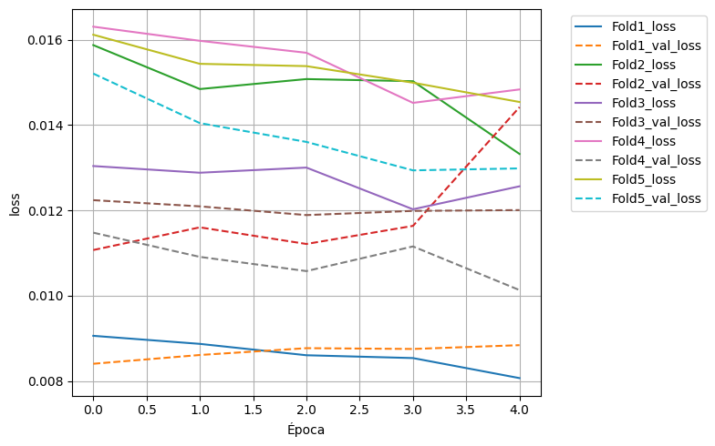
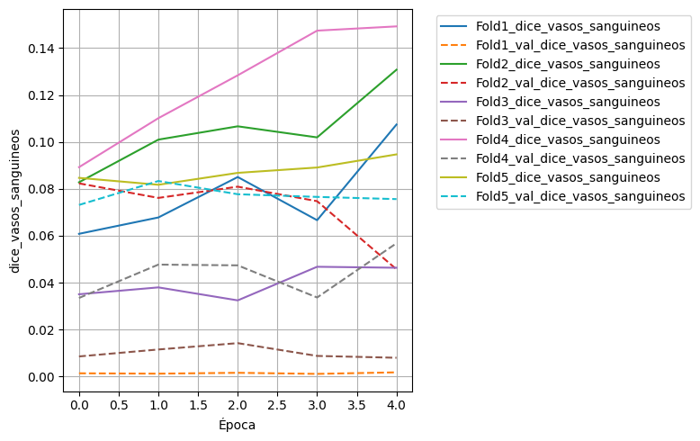
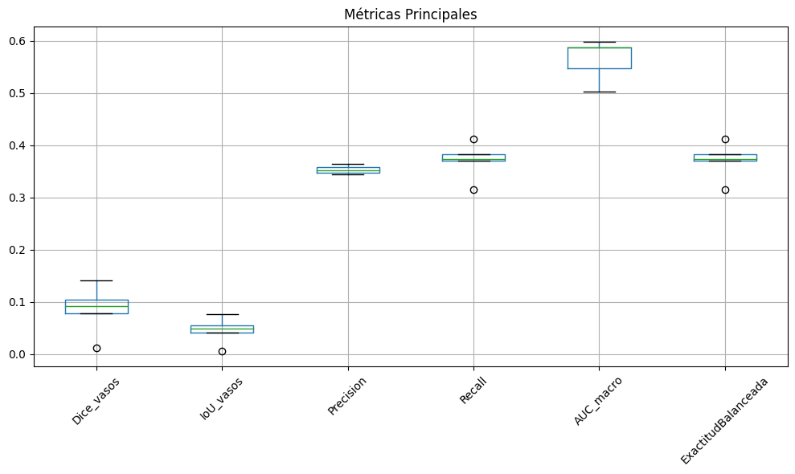
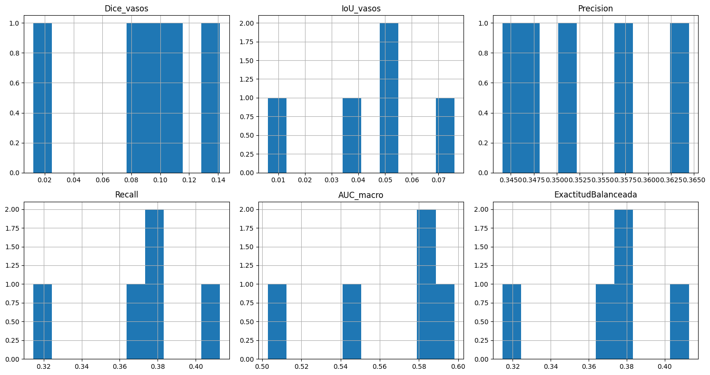
Mejor modelo: Fold 4
/opt/miniconda3/envs/ml_venv/lib/python3.9/site-packages/keras/src/layers/activations/leaky_relu.py:41: UserWarning: Argument `alpha` is deprecated. Use `negative_slope` instead.
warnings.warn(
Se cargaron 100 imágenes.
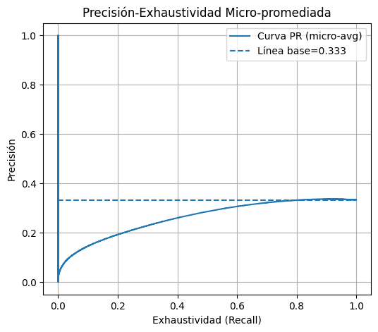
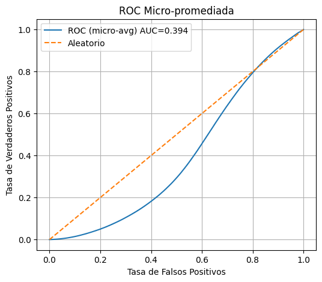
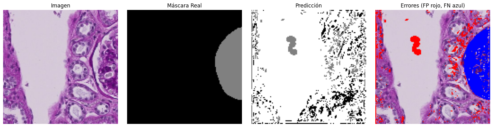
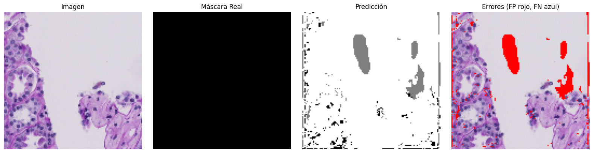
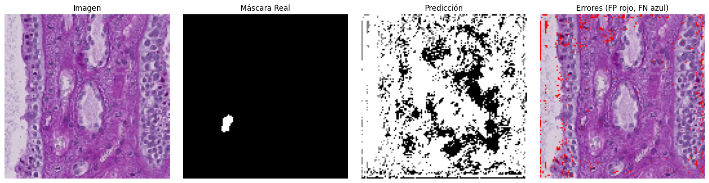
(<Functional name=functional_1, built=True>,
fold Dice_vasos IoU_vasos Precision Recall AUC_macro \
media 3.0 0.085492 0.045158 0.35302 0.370816 0.564351
ExactitudBalanceada
media 0.370816 ,
None,
None)
Modelo ResUNet#
from tensorflow.keras import layers, models
# Función Conv2D + BatchNormalization + ReLU
def conv_bn_relu(x, filtros, tamano_kernel, padding='same', nombre=None):
x = layers.Conv2D(filtros, tamano_kernel, padding=padding, kernel_initializer='he_normal', name=f"{nombre}_conv" if nombre else None)(x)
x = layers.BatchNormalization(name=f"{nombre}_bn" if nombre else None)(x)
return layers.Activation('relu', name=f"{nombre}_act" if nombre else None)(x)
# Bloque residual
def bloque_residual(x, filtros, nombre=None):
atajo = layers.Conv2D(filtros, 1, padding='same', kernel_initializer='he_normal', name=f"{nombre}_shortcut_conv")(x)
atajo = layers.BatchNormalization(name=f"{nombre}_shortcut_bn")(atajo)
x = layers.Conv2D(filtros, 3, padding='same', kernel_initializer='he_normal', name=f"{nombre}_conv1")(x)
x = layers.BatchNormalization(name=f"{nombre}_bn1")(x)
x = layers.Activation('relu', name=f"{nombre}_act1")(x)
x = layers.Conv2D(filtros, 3, padding='same', kernel_initializer='he_normal', name=f"{nombre}_conv2")(x)
x = layers.BatchNormalization(name=f"{nombre}_bn2")(x)
return layers.Activation('relu', name=f"{nombre}_out")(layers.Add()([atajo, x]))
# Construir ResUNet
def construir_resunet(tamano_entrada=(256, 256, 3), num_clases=1, filtros_base=64):
inputs = layers.Input(shape=tamano_entrada, name="input")
# Encoder
c1 = conv_bn_relu(inputs, filtros_base, 3, nombre="enc1")
p1 = layers.MaxPooling2D(name="pool1")(c1)
c2 = bloque_residual(p1, filtros_base*2, nombre="enc2")
p2 = layers.MaxPooling2D(name="pool2")(c2)
c3 = bloque_residual(p2, filtros_base*4, nombre="enc3")
p3 = layers.MaxPooling2D(name="pool3")(c3)
c4 = bloque_residual(p3, filtros_base*8, nombre="enc4")
p4 = layers.MaxPooling2D(name="pool4")(c4)
# Bridge
b = bloque_residual(p4, filtros_base*16, nombre="bridge")
# Decoder
u4 = layers.UpSampling2D(name="up4")(b)
u4 = layers.Concatenate(name="concat4")([u4, c4])
d4 = conv_bn_relu(u4, filtros_base*8, 3, nombre="dec4")
u3 = layers.UpSampling2D(name="up3")(d4)
u3 = layers.Concatenate(name="concat3")([u3, c3])
d3 = conv_bn_relu(u3, filtros_base*4, 3, nombre="dec3")
u2 = layers.UpSampling2D(name="up2")(d3)
u2 = layers.Concatenate(name="concat2")([u2, c2])
d2 = conv_bn_relu(u2, filtros_base*2, 3, nombre="dec2")
u1 = layers.UpSampling2D(name="up1")(d2)
u1 = layers.Concatenate(name="concat1")([u1, c1])
d1 = conv_bn_relu(u1, filtros_base, 3, nombre="dec1")
# Salida
outputs = layers.Conv2D(num_clases, 1, activation='sigmoid', name="output")(d1)
return models.Model(inputs=inputs, outputs=outputs, name="ResUNet")
directorio_checkpoints = direc_base / 'pesos_entrenamiento_residual_unet'
# Crear el directorio si no existe
directorio_checkpoints.mkdir(parents=True, exist_ok=True)
ejecutar_pipeline_completo(
lista_ids=sorted(anotaciones_por_tile.keys()),
funcion_cargar=cargar_imagen_y_mascara,
funcion_construir_modelo=lambda: construir_resunet(tamano_entrada=(*TAMANO_IMAGEN, 3), num_clases=NUMERO_CLASES),
ruta_base=directorio_checkpoints,
n_splits=5,
epochs=5,
batch_size=2
)
0%| | 0/5 [00:00<?, ?it/s]
--- Fold 1/5 ---
Se cargaron 100 imágenes.
Pesos por clase: [0.05089327 0.03487359 0.91423315]
Se cargaron 100 imágenes.
Epoch 1/5
50/50 ━━━━━━━━━━━━━━━━━━━━ 0s 696ms/step - dice_vasos_sanguineos: 0.1673 - lambda: 0.0527 - loss: 0.0050
Epoch 1: dice_vasos_sanguineos improved from -inf to 0.17513, saving model to /Users/pachonarvaez/PARCIALML/docs/pesos_entrenamiento_residual_unet/pesos_entrenamiento/fold_1.weights.h5
50/50 ━━━━━━━━━━━━━━━━━━━━ 73s 855ms/step - dice_vasos_sanguineos: 0.1674 - lambda: 0.0527 - loss: 0.0050 - val_dice_vasos_sanguineos: 0.0109 - val_lambda: 0.0147 - val_loss: 0.0067
Epoch 2/5
50/50 ━━━━━━━━━━━━━━━━━━━━ 0s 955ms/step - dice_vasos_sanguineos: 0.1817 - lambda: 0.0582 - loss: 0.0026
Epoch 2: dice_vasos_sanguineos improved from 0.17513 to 0.22307, saving model to /Users/pachonarvaez/PARCIALML/docs/pesos_entrenamiento_residual_unet/pesos_entrenamiento/fold_1.weights.h5
50/50 ━━━━━━━━━━━━━━━━━━━━ 52s 1s/step - dice_vasos_sanguineos: 0.1825 - lambda: 0.0584 - loss: 0.0027 - val_dice_vasos_sanguineos: 0.0013 - val_lambda: 0.0138 - val_loss: 0.0096
Epoch 3/5
50/50 ━━━━━━━━━━━━━━━━━━━━ 0s 784ms/step - dice_vasos_sanguineos: 0.2628 - lambda: 0.0796 - loss: 0.0020
Epoch 3: dice_vasos_sanguineos improved from 0.22307 to 0.22335, saving model to /Users/pachonarvaez/PARCIALML/docs/pesos_entrenamiento_residual_unet/pesos_entrenamiento/fold_1.weights.h5
50/50 ━━━━━━━━━━━━━━━━━━━━ 43s 859ms/step - dice_vasos_sanguineos: 0.2620 - lambda: 0.0795 - loss: 0.0020 - val_dice_vasos_sanguineos: 3.0789e-04 - val_lambda: 0.0137 - val_loss: 0.0127
Epoch 4/5
50/50 ━━━━━━━━━━━━━━━━━━━━ 0s 822ms/step - dice_vasos_sanguineos: 0.2659 - lambda: 0.0851 - loss: 0.0020
Epoch 4: dice_vasos_sanguineos improved from 0.22335 to 0.23506, saving model to /Users/pachonarvaez/PARCIALML/docs/pesos_entrenamiento_residual_unet/pesos_entrenamiento/fold_1.weights.h5
50/50 ━━━━━━━━━━━━━━━━━━━━ 45s 896ms/step - dice_vasos_sanguineos: 0.2653 - lambda: 0.0849 - loss: 0.0020 - val_dice_vasos_sanguineos: 5.3767e-04 - val_lambda: 0.0144 - val_loss: 0.0129
Epoch 5/5
50/50 ━━━━━━━━━━━━━━━━━━━━ 0s 744ms/step - dice_vasos_sanguineos: 0.3229 - lambda: 0.1004 - loss: 0.0017
Epoch 5: dice_vasos_sanguineos improved from 0.23506 to 0.24291, saving model to /Users/pachonarvaez/PARCIALML/docs/pesos_entrenamiento_residual_unet/pesos_entrenamiento/fold_1.weights.h5
50/50 ━━━━━━━━━━━━━━━━━━━━ 41s 827ms/step - dice_vasos_sanguineos: 0.3213 - lambda: 0.1000 - loss: 0.0017 - val_dice_vasos_sanguineos: 0.0038 - val_lambda: 0.0162 - val_loss: 0.0110
Restoring model weights from the end of the best epoch: 5.
Se cargaron 100 imágenes.
20%|██ | 1/5 [04:51<19:24, 291.07s/it]
--- Fold 2/5 ---
Se cargaron 100 imágenes.
Pesos por clase: [0.08408388 0.05893792 0.85697824]
Se cargaron 100 imágenes.
Epoch 1/5
50/50 ━━━━━━━━━━━━━━━━━━━━ 0s 757ms/step - dice_vasos_sanguineos: 0.0792 - lambda: 0.0317 - loss: 0.0106
Epoch 1: dice_vasos_sanguineos improved from -inf to 0.11605, saving model to /Users/pachonarvaez/PARCIALML/docs/pesos_entrenamiento_residual_unet/pesos_entrenamiento/fold_2.weights.h5
50/50 ━━━━━━━━━━━━━━━━━━━━ 84s 920ms/step - dice_vasos_sanguineos: 0.0799 - lambda: 0.0319 - loss: 0.0106 - val_dice_vasos_sanguineos: 0.0606 - val_lambda: 0.0250 - val_loss: 0.0085
Epoch 2/5
50/50 ━━━━━━━━━━━━━━━━━━━━ 0s 777ms/step - dice_vasos_sanguineos: 0.1306 - lambda: 0.0458 - loss: 0.0075
Epoch 2: dice_vasos_sanguineos improved from 0.11605 to 0.14435, saving model to /Users/pachonarvaez/PARCIALML/docs/pesos_entrenamiento_residual_unet/pesos_entrenamiento/fold_2.weights.h5
50/50 ━━━━━━━━━━━━━━━━━━━━ 43s 853ms/step - dice_vasos_sanguineos: 0.1309 - lambda: 0.0459 - loss: 0.0075 - val_dice_vasos_sanguineos: 0.0118 - val_lambda: 0.0068 - val_loss: 0.0115
Epoch 3/5
50/50 ━━━━━━━━━━━━━━━━━━━━ 0s 788ms/step - dice_vasos_sanguineos: 0.1395 - lambda: 0.0561 - loss: 0.0063
Epoch 3: dice_vasos_sanguineos improved from 0.14435 to 0.15606, saving model to /Users/pachonarvaez/PARCIALML/docs/pesos_entrenamiento_residual_unet/pesos_entrenamiento/fold_2.weights.h5
50/50 ━━━━━━━━━━━━━━━━━━━━ 43s 860ms/step - dice_vasos_sanguineos: 0.1399 - lambda: 0.0561 - loss: 0.0063 - val_dice_vasos_sanguineos: 0.0088 - val_lambda: 0.0047 - val_loss: 0.0143
Epoch 4/5
50/50 ━━━━━━━━━━━━━━━━━━━━ 0s 841ms/step - dice_vasos_sanguineos: 0.1498 - lambda: 0.0609 - loss: 0.0050
Epoch 4: dice_vasos_sanguineos improved from 0.15606 to 0.15799, saving model to /Users/pachonarvaez/PARCIALML/docs/pesos_entrenamiento_residual_unet/pesos_entrenamiento/fold_2.weights.h5
50/50 ━━━━━━━━━━━━━━━━━━━━ 46s 914ms/step - dice_vasos_sanguineos: 0.1500 - lambda: 0.0609 - loss: 0.0050 - val_dice_vasos_sanguineos: 0.0189 - val_lambda: 0.0064 - val_loss: 0.0174
Epoch 5/5
50/50 ━━━━━━━━━━━━━━━━━━━━ 0s 600ms/step - dice_vasos_sanguineos: 0.1123 - lambda: 0.0600 - loss: 0.0043
Epoch 5: dice_vasos_sanguineos improved from 0.15799 to 0.16279, saving model to /Users/pachonarvaez/PARCIALML/docs/pesos_entrenamiento_residual_unet/pesos_entrenamiento/fold_2.weights.h5
50/50 ━━━━━━━━━━━━━━━━━━━━ 33s 665ms/step - dice_vasos_sanguineos: 0.1133 - lambda: 0.0601 - loss: 0.0043 - val_dice_vasos_sanguineos: 0.0490 - val_lambda: 0.0141 - val_loss: 0.0165
Restoring model weights from the end of the best epoch: 5.
Se cargaron 100 imágenes.
40%|████ | 2/5 [09:31<14:13, 284.54s/it]
--- Fold 3/5 ---
Se cargaron 100 imágenes.
Pesos por clase: [0.0858018 0.06360102 0.8505972 ]
Se cargaron 100 imágenes.
Epoch 1/5
50/50 ━━━━━━━━━━━━━━━━━━━━ 0s 545ms/step - dice_vasos_sanguineos: 0.0891 - lambda: 0.0303 - loss: 0.0115
Epoch 1: dice_vasos_sanguineos improved from -inf to 0.11797, saving model to /Users/pachonarvaez/PARCIALML/docs/pesos_entrenamiento_residual_unet/pesos_entrenamiento/fold_3.weights.h5
50/50 ━━━━━━━━━━━━━━━━━━━━ 48s 664ms/step - dice_vasos_sanguineos: 0.0897 - lambda: 0.0305 - loss: 0.0114 - val_dice_vasos_sanguineos: 0.1348 - val_lambda: 0.0443 - val_loss: 0.0089
Epoch 2/5
50/50 ━━━━━━━━━━━━━━━━━━━━ 0s 604ms/step - dice_vasos_sanguineos: 0.2321 - lambda: 0.0705 - loss: 0.0079
Epoch 2: dice_vasos_sanguineos improved from 0.11797 to 0.19093, saving model to /Users/pachonarvaez/PARCIALML/docs/pesos_entrenamiento_residual_unet/pesos_entrenamiento/fold_3.weights.h5
50/50 ━━━━━━━━━━━━━━━━━━━━ 34s 672ms/step - dice_vasos_sanguineos: 0.2313 - lambda: 0.0703 - loss: 0.0079 - val_dice_vasos_sanguineos: 0.0026 - val_lambda: 0.0080 - val_loss: 0.0196
Epoch 3/5
50/50 ━━━━━━━━━━━━━━━━━━━━ 0s 615ms/step - dice_vasos_sanguineos: 0.2138 - lambda: 0.0672 - loss: 0.0041
Epoch 3: dice_vasos_sanguineos improved from 0.19093 to 0.19831, saving model to /Users/pachonarvaez/PARCIALML/docs/pesos_entrenamiento_residual_unet/pesos_entrenamiento/fold_3.weights.h5
50/50 ━━━━━━━━━━━━━━━━━━━━ 34s 688ms/step - dice_vasos_sanguineos: 0.2135 - lambda: 0.0672 - loss: 0.0041 - val_dice_vasos_sanguineos: 7.3954e-04 - val_lambda: 0.0060 - val_loss: 0.0289
Epoch 4/5
50/50 ━━━━━━━━━━━━━━━━━━━━ 0s 694ms/step - dice_vasos_sanguineos: 0.2519 - lambda: 0.0807 - loss: 0.0039
Epoch 4: dice_vasos_sanguineos improved from 0.19831 to 0.21287, saving model to /Users/pachonarvaez/PARCIALML/docs/pesos_entrenamiento_residual_unet/pesos_entrenamiento/fold_3.weights.h5
50/50 ━━━━━━━━━━━━━━━━━━━━ 37s 751ms/step - dice_vasos_sanguineos: 0.2512 - lambda: 0.0806 - loss: 0.0039 - val_dice_vasos_sanguineos: 0.0011 - val_lambda: 0.0065 - val_loss: 0.0316
Epoch 5/5
50/50 ━━━━━━━━━━━━━━━━━━━━ 0s 586ms/step - dice_vasos_sanguineos: 0.2082 - lambda: 0.0733 - loss: 0.0032
Epoch 5: dice_vasos_sanguineos improved from 0.21287 to 0.21304, saving model to /Users/pachonarvaez/PARCIALML/docs/pesos_entrenamiento_residual_unet/pesos_entrenamiento/fold_3.weights.h5
50/50 ━━━━━━━━━━━━━━━━━━━━ 32s 650ms/step - dice_vasos_sanguineos: 0.2083 - lambda: 0.0733 - loss: 0.0032 - val_dice_vasos_sanguineos: 0.0051 - val_lambda: 0.0096 - val_loss: 0.0266
Restoring model weights from the end of the best epoch: 5.
Se cargaron 100 imágenes.
60%|██████ | 3/5 [13:03<08:23, 251.79s/it]
--- Fold 4/5 ---
Se cargaron 100 imágenes.
Pesos por clase: [0.08778861 0.05816529 0.85404605]
Se cargaron 100 imágenes.
Epoch 1/5
50/50 ━━━━━━━━━━━━━━━━━━━━ 0s 598ms/step - dice_vasos_sanguineos: 0.1084 - lambda: 0.0371 - loss: 0.0097
Epoch 1: dice_vasos_sanguineos improved from -inf to 0.12715, saving model to /Users/pachonarvaez/PARCIALML/docs/pesos_entrenamiento_residual_unet/pesos_entrenamiento/fold_4.weights.h5
50/50 ━━━━━━━━━━━━━━━━━━━━ 58s 702ms/step - dice_vasos_sanguineos: 0.1088 - lambda: 0.0372 - loss: 0.0097 - val_dice_vasos_sanguineos: 0.0519 - val_lambda: 0.0224 - val_loss: 0.0130
Epoch 2/5
50/50 ━━━━━━━━━━━━━━━━━━━━ 0s 639ms/step - dice_vasos_sanguineos: 0.1514 - lambda: 0.0539 - loss: 0.0084
Epoch 2: dice_vasos_sanguineos improved from 0.12715 to 0.14593, saving model to /Users/pachonarvaez/PARCIALML/docs/pesos_entrenamiento_residual_unet/pesos_entrenamiento/fold_4.weights.h5
50/50 ━━━━━━━━━━━━━━━━━━━━ 36s 706ms/step - dice_vasos_sanguineos: 0.1513 - lambda: 0.0539 - loss: 0.0084 - val_dice_vasos_sanguineos: 0.0279 - val_lambda: 0.0164 - val_loss: 0.0141
Epoch 3/5
50/50 ━━━━━━━━━━━━━━━━━━━━ 0s 616ms/step - dice_vasos_sanguineos: 0.1892 - lambda: 0.0661 - loss: 0.0056
Epoch 3: dice_vasos_sanguineos improved from 0.14593 to 0.14773, saving model to /Users/pachonarvaez/PARCIALML/docs/pesos_entrenamiento_residual_unet/pesos_entrenamiento/fold_4.weights.h5
50/50 ━━━━━━━━━━━━━━━━━━━━ 34s 677ms/step - dice_vasos_sanguineos: 0.1884 - lambda: 0.0659 - loss: 0.0056 - val_dice_vasos_sanguineos: 0.0354 - val_lambda: 0.0172 - val_loss: 0.0129
Epoch 4/5
50/50 ━━━━━━━━━━━━━━━━━━━━ 0s 638ms/step - dice_vasos_sanguineos: 0.1369 - lambda: 0.0613 - loss: 0.0042
Epoch 4: dice_vasos_sanguineos improved from 0.14773 to 0.16399, saving model to /Users/pachonarvaez/PARCIALML/docs/pesos_entrenamiento_residual_unet/pesos_entrenamiento/fold_4.weights.h5
50/50 ━━━━━━━━━━━━━━━━━━━━ 35s 699ms/step - dice_vasos_sanguineos: 0.1374 - lambda: 0.0614 - loss: 0.0042 - val_dice_vasos_sanguineos: 0.0592 - val_lambda: 0.0239 - val_loss: 0.0105
Epoch 5/5
50/50 ━━━━━━━━━━━━━━━━━━━━ 0s 581ms/step - dice_vasos_sanguineos: 0.1874 - lambda: 0.0664 - loss: 0.0031
Epoch 5: dice_vasos_sanguineos did not improve from 0.16399
50/50 ━━━━━━━━━━━━━━━━━━━━ 32s 637ms/step - dice_vasos_sanguineos: 0.1870 - lambda: 0.0664 - loss: 0.0031 - val_dice_vasos_sanguineos: 0.1066 - val_lambda: 0.0382 - val_loss: 0.0092
Restoring model weights from the end of the best epoch: 4.
Se cargaron 100 imágenes.
80%|████████ | 4/5 [16:41<03:58, 238.28s/it]
--- Fold 5/5 ---
Se cargaron 100 imágenes.
Pesos por clase: [0.08522165 0.06814457 0.84663373]
Se cargaron 100 imágenes.
Epoch 1/5
50/50 ━━━━━━━━━━━━━━━━━━━━ 0s 628ms/step - dice_vasos_sanguineos: 0.1173 - lambda: 0.0419 - loss: 0.0112
Epoch 1: dice_vasos_sanguineos improved from -inf to 0.13124, saving model to /Users/pachonarvaez/PARCIALML/docs/pesos_entrenamiento_residual_unet/pesos_entrenamiento/fold_5.weights.h5
50/50 ━━━━━━━━━━━━━━━━━━━━ 55s 789ms/step - dice_vasos_sanguineos: 0.1176 - lambda: 0.0420 - loss: 0.0111 - val_dice_vasos_sanguineos: 0.0625 - val_lambda: 0.0241 - val_loss: 0.0119
Epoch 2/5
50/50 ━━━━━━━━━━━━━━━━━━━━ 0s 784ms/step - dice_vasos_sanguineos: 0.1633 - lambda: 0.0531 - loss: 0.0043
Epoch 2: dice_vasos_sanguineos improved from 0.13124 to 0.17769, saving model to /Users/pachonarvaez/PARCIALML/docs/pesos_entrenamiento_residual_unet/pesos_entrenamiento/fold_5.weights.h5
50/50 ━━━━━━━━━━━━━━━━━━━━ 43s 871ms/step - dice_vasos_sanguineos: 0.1636 - lambda: 0.0531 - loss: 0.0043 - val_dice_vasos_sanguineos: 0.0157 - val_lambda: 0.0151 - val_loss: 0.0162
Epoch 3/5
50/50 ━━━━━━━━━━━━━━━━━━━━ 0s 617ms/step - dice_vasos_sanguineos: 0.2087 - lambda: 0.0637 - loss: 0.0030
Epoch 3: dice_vasos_sanguineos improved from 0.17769 to 0.18736, saving model to /Users/pachonarvaez/PARCIALML/docs/pesos_entrenamiento_residual_unet/pesos_entrenamiento/fold_5.weights.h5
50/50 ━━━━━━━━━━━━━━━━━━━━ 35s 699ms/step - dice_vasos_sanguineos: 0.2083 - lambda: 0.0636 - loss: 0.0030 - val_dice_vasos_sanguineos: 0.0117 - val_lambda: 0.0155 - val_loss: 0.0145
Epoch 4/5
50/50 ━━━━━━━━━━━━━━━━━━━━ 0s 697ms/step - dice_vasos_sanguineos: 0.1599 - lambda: 0.0520 - loss: 0.0019
Epoch 4: dice_vasos_sanguineos improved from 0.18736 to 0.19532, saving model to /Users/pachonarvaez/PARCIALML/docs/pesos_entrenamiento_residual_unet/pesos_entrenamiento/fold_5.weights.h5
50/50 ━━━━━━━━━━━━━━━━━━━━ 38s 767ms/step - dice_vasos_sanguineos: 0.1606 - lambda: 0.0522 - loss: 0.0019 - val_dice_vasos_sanguineos: 0.0154 - val_lambda: 0.0169 - val_loss: 0.0134
Epoch 5/5
50/50 ━━━━━━━━━━━━━━━━━━━━ 0s 624ms/step - dice_vasos_sanguineos: 0.2005 - lambda: 0.0632 - loss: 0.0021
Epoch 5: dice_vasos_sanguineos improved from 0.19532 to 0.19568, saving model to /Users/pachonarvaez/PARCIALML/docs/pesos_entrenamiento_residual_unet/pesos_entrenamiento/fold_5.weights.h5
50/50 ━━━━━━━━━━━━━━━━━━━━ 34s 686ms/step - dice_vasos_sanguineos: 0.2004 - lambda: 0.0632 - loss: 0.0021 - val_dice_vasos_sanguineos: 0.0305 - val_lambda: 0.0201 - val_loss: 0.0104
Restoring model weights from the end of the best epoch: 5.
Se cargaron 100 imágenes.
100%|██████████| 5/5 [20:32<00:00, 246.42s/it]
--- Resumen de Métricas ---
fold Dice_vasos IoU_vasos Precision Recall AUC_macro \
media 3.0 0.015586 0.007897 0.330585 0.338308 0.55118
ExactitudBalanceada
media 0.338308
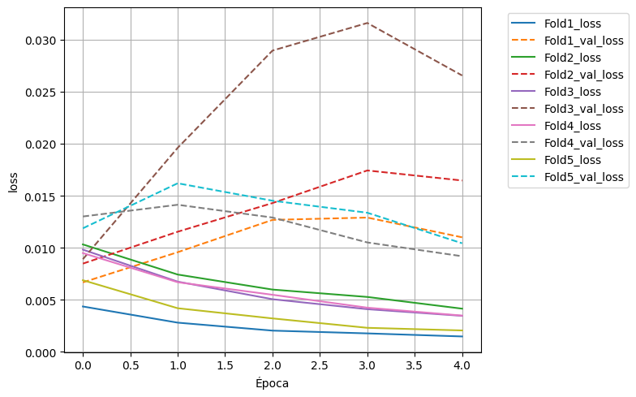
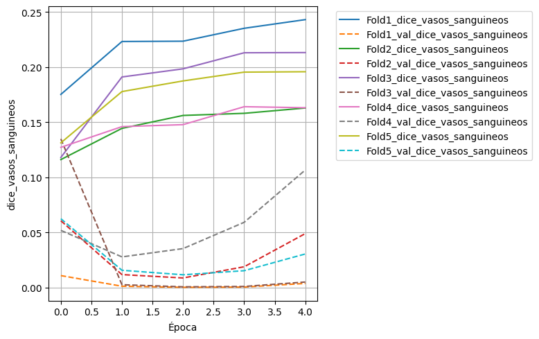
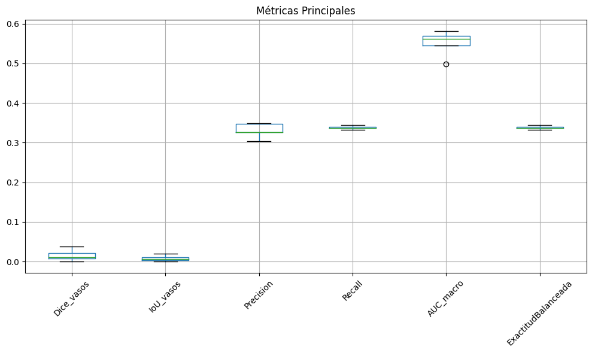
Mejor modelo: Fold 2
Se cargaron 100 imágenes.
(<Functional name=ResUNet, built=True>,
fold Dice_vasos IoU_vasos Precision Recall AUC_macro \
media 3.0 0.015586 0.007897 0.330585 0.338308 0.55118
ExactitudBalanceada
media 0.338308 ,
None,
None)
Modelo PSPNet#
from tensorflow.keras import layers, models
# Función auxiliar Conv2D + BatchNormalization + ReLU
def conv_bn_relu(x, filtros, tamano_kernel, padding='same', nombre=None):
x = layers.Conv2D(filtros, tamano_kernel, padding=padding, name=f"{nombre}_conv" if nombre else None)(x)
x = layers.BatchNormalization(name=f"{nombre}_bn" if nombre else None)(x)
return layers.Activation('relu', name=f"{nombre}_act" if nombre else None)(x)
# Constructor del modelo PSPNet
def construir_pspnet(tamano_entrada, num_clases):
entradas = layers.Input(shape=tamano_entrada)
# Codificador: bloques iniciales de convolución
x = conv_bn_relu(entradas, 64, 3, nombre='bloque_codificador1')
x = conv_bn_relu(x, 64, 3, nombre='bloque_codificador2')
# Módulo de Agrupamiento Piramidal (PPM)
tamanos_pooling = [1, 2, 4, 8]
salidas_pooling = [
layers.UpSampling2D(size=(tamano, tamano), interpolation='bilinear', name=f'ppm_upsample_{tamano}')(
conv_bn_relu(layers.AveragePooling2D(pool_size=(tamano, tamano), name=f'ppm_pool_{tamano}')(x), 32, 1, nombre=f'ppm_conv_{tamano}')
) for tamano in tamanos_pooling
]
# Concatenar los niveles de la pirámide
x = layers.Concatenate(name='ppm_concat')([x] + salidas_pooling)
# Decodificador: bloque final de convolución
x = conv_bn_relu(x, 64, 3, nombre='bloque_decodificador1')
# Capa de salida
salidas = layers.Conv2D(num_clases, 1, activation='softmax', name='salida_pspnet')(x)
return models.Model(inputs=entradas, outputs=salidas, name='PSPNet')
directorio_checkpoints = direc_base / 'pesos_entrenamiento_pspnet'
# Crear el directorio si no existe
directorio_checkpoints.mkdir(parents=True, exist_ok=True)
ejecutar_pipeline_completo(
lista_ids=sorted(anotaciones_por_tile.keys()),
funcion_cargar=cargar_imagen_y_mascara,
funcion_construir_modelo=lambda: construir_pspnet(tamano_entrada=(*TAMANO_IMAGEN, 3), num_clases=NUMERO_CLASES),
ruta_base=directorio_checkpoints,
n_splits=5,
epochs=5,
batch_size=2
)
0%| | 0/5 [00:00<?, ?it/s]
--- Fold 1/5 ---
Se cargaron 100 imágenes.
Pesos por clase: [0.05089327 0.03487359 0.91423315]
Se cargaron 100 imágenes.
Epoch 1/5
50/50 ━━━━━━━━━━━━━━━━━━━━ 0s 89ms/step - dice_vasos_sanguineos: 0.0776 - lambda: 0.0228 - loss: 0.0103
Epoch 1: dice_vasos_sanguineos improved from -inf to 0.09158, saving model to /Users/pachonarvaez/PARCIALML/docs/pesos_entrenamiento_pspnet/pesos_entrenamiento/fold_1.weights.h5
50/50 ━━━━━━━━━━━━━━━━━━━━ 20s 140ms/step - dice_vasos_sanguineos: 0.0779 - lambda: 0.0228 - loss: 0.0103 - val_dice_vasos_sanguineos: 0.0000e+00 - val_lambda: 0.0000e+00 - val_loss: 0.0082
Epoch 2/5
50/50 ━━━━━━━━━━━━━━━━━━━━ 0s 91ms/step - dice_vasos_sanguineos: 0.0918 - lambda: 0.0285 - loss: 0.0091
Epoch 2: dice_vasos_sanguineos improved from 0.09158 to 0.12521, saving model to /Users/pachonarvaez/PARCIALML/docs/pesos_entrenamiento_pspnet/pesos_entrenamiento/fold_1.weights.h5
50/50 ━━━━━━━━━━━━━━━━━━━━ 6s 127ms/step - dice_vasos_sanguineos: 0.0924 - lambda: 0.0287 - loss: 0.0091 - val_dice_vasos_sanguineos: 0.0000e+00 - val_lambda: 0.0000e+00 - val_loss: 0.0081
Epoch 3/5
50/50 ━━━━━━━━━━━━━━━━━━━━ 0s 100ms/step - dice_vasos_sanguineos: 0.1276 - lambda: 0.0375 - loss: 0.0081
Epoch 3: dice_vasos_sanguineos improved from 0.12521 to 0.15039, saving model to /Users/pachonarvaez/PARCIALML/docs/pesos_entrenamiento_pspnet/pesos_entrenamiento/fold_1.weights.h5
50/50 ━━━━━━━━━━━━━━━━━━━━ 7s 138ms/step - dice_vasos_sanguineos: 0.1280 - lambda: 0.0376 - loss: 0.0081 - val_dice_vasos_sanguineos: 0.0000e+00 - val_lambda: 0.0013 - val_loss: 0.0079
Epoch 4/5
50/50 ━━━━━━━━━━━━━━━━━━━━ 0s 98ms/step - dice_vasos_sanguineos: 0.1644 - lambda: 0.0482 - loss: 0.0075
Epoch 4: dice_vasos_sanguineos improved from 0.15039 to 0.16991, saving model to /Users/pachonarvaez/PARCIALML/docs/pesos_entrenamiento_pspnet/pesos_entrenamiento/fold_1.weights.h5
50/50 ━━━━━━━━━━━━━━━━━━━━ 7s 135ms/step - dice_vasos_sanguineos: 0.1645 - lambda: 0.0482 - loss: 0.0075 - val_dice_vasos_sanguineos: 0.0000e+00 - val_lambda: 0.0013 - val_loss: 0.0080
Epoch 5/5
50/50 ━━━━━━━━━━━━━━━━━━━━ 0s 96ms/step - dice_vasos_sanguineos: 0.1861 - lambda: 0.0534 - loss: 0.0082
Epoch 5: dice_vasos_sanguineos improved from 0.16991 to 0.17143, saving model to /Users/pachonarvaez/PARCIALML/docs/pesos_entrenamiento_pspnet/pesos_entrenamiento/fold_1.weights.h5
50/50 ━━━━━━━━━━━━━━━━━━━━ 7s 132ms/step - dice_vasos_sanguineos: 0.1859 - lambda: 0.0533 - loss: 0.0082 - val_dice_vasos_sanguineos: 0.0000e+00 - val_lambda: 0.0013 - val_loss: 0.0086
Restoring model weights from the end of the best epoch: 5.
Se cargaron 100 imágenes.
20%|██ | 1/5 [01:05<04:23, 65.76s/it]
--- Fold 2/5 ---
Se cargaron 100 imágenes.
Pesos por clase: [0.08408388 0.05893792 0.85697824]
Se cargaron 100 imágenes.
Epoch 1/5
50/50 ━━━━━━━━━━━━━━━━━━━━ 0s 94ms/step - dice_vasos_sanguineos: 0.0694 - lambda: 0.0267 - loss: 0.0160
Epoch 1: dice_vasos_sanguineos improved from -inf to 0.07906, saving model to /Users/pachonarvaez/PARCIALML/docs/pesos_entrenamiento_pspnet/pesos_entrenamiento/fold_2.weights.h5
50/50 ━━━━━━━━━━━━━━━━━━━━ 15s 153ms/step - dice_vasos_sanguineos: 0.0696 - lambda: 0.0268 - loss: 0.0160 - val_dice_vasos_sanguineos: 0.0000e+00 - val_lambda: 0.0000e+00 - val_loss: 0.0111
Epoch 2/5
50/50 ━━━━━━━━━━━━━━━━━━━━ 0s 89ms/step - dice_vasos_sanguineos: 0.0747 - lambda: 0.0278 - loss: 0.0114
Epoch 2: dice_vasos_sanguineos improved from 0.07906 to 0.09367, saving model to /Users/pachonarvaez/PARCIALML/docs/pesos_entrenamiento_pspnet/pesos_entrenamiento/fold_2.weights.h5
50/50 ━━━━━━━━━━━━━━━━━━━━ 7s 133ms/step - dice_vasos_sanguineos: 0.0751 - lambda: 0.0279 - loss: 0.0115 - val_dice_vasos_sanguineos: 0.0072 - val_lambda: 0.0012 - val_loss: 0.0116
Epoch 3/5
50/50 ━━━━━━━━━━━━━━━━━━━━ 0s 91ms/step - dice_vasos_sanguineos: 0.1138 - lambda: 0.0377 - loss: 0.0114
Epoch 3: dice_vasos_sanguineos improved from 0.09367 to 0.14226, saving model to /Users/pachonarvaez/PARCIALML/docs/pesos_entrenamiento_pspnet/pesos_entrenamiento/fold_2.weights.h5
50/50 ━━━━━━━━━━━━━━━━━━━━ 6s 126ms/step - dice_vasos_sanguineos: 0.1144 - lambda: 0.0378 - loss: 0.0114 - val_dice_vasos_sanguineos: 0.0158 - val_lambda: 0.0027 - val_loss: 0.0117
Epoch 4/5
50/50 ━━━━━━━━━━━━━━━━━━━━ 0s 92ms/step - dice_vasos_sanguineos: 0.1541 - lambda: 0.0460 - loss: 0.0119
Epoch 4: dice_vasos_sanguineos improved from 0.14226 to 0.14611, saving model to /Users/pachonarvaez/PARCIALML/docs/pesos_entrenamiento_pspnet/pesos_entrenamiento/fold_2.weights.h5
50/50 ━━━━━━━━━━━━━━━━━━━━ 6s 130ms/step - dice_vasos_sanguineos: 0.1540 - lambda: 0.0459 - loss: 0.0119 - val_dice_vasos_sanguineos: 0.0238 - val_lambda: 0.0041 - val_loss: 0.0117
Epoch 5/5
50/50 ━━━━━━━━━━━━━━━━━━━━ 0s 89ms/step - dice_vasos_sanguineos: 0.1591 - lambda: 0.0492 - loss: 0.0121
Epoch 5: dice_vasos_sanguineos did not improve from 0.14611
50/50 ━━━━━━━━━━━━━━━━━━━━ 6s 124ms/step - dice_vasos_sanguineos: 0.1588 - lambda: 0.0491 - loss: 0.0121 - val_dice_vasos_sanguineos: 0.0112 - val_lambda: 0.0031 - val_loss: 0.0116
Restoring model weights from the end of the best epoch: 4.
Se cargaron 100 imágenes.
40%|████ | 2/5 [02:05<03:06, 62.05s/it]
--- Fold 3/5 ---
Se cargaron 100 imágenes.
Pesos por clase: [0.0858018 0.06360102 0.8505972 ]
Se cargaron 100 imágenes.
Epoch 1/5
50/50 ━━━━━━━━━━━━━━━━━━━━ 0s 84ms/step - dice_vasos_sanguineos: 0.0374 - lambda: 0.0231 - loss: 0.0125
Epoch 1: dice_vasos_sanguineos improved from -inf to 0.04488, saving model to /Users/pachonarvaez/PARCIALML/docs/pesos_entrenamiento_pspnet/pesos_entrenamiento/fold_3.weights.h5
50/50 ━━━━━━━━━━━━━━━━━━━━ 13s 134ms/step - dice_vasos_sanguineos: 0.0375 - lambda: 0.0231 - loss: 0.0125 - val_dice_vasos_sanguineos: 0.0000e+00 - val_lambda: 0.0000e+00 - val_loss: 0.0118
Epoch 2/5
50/50 ━━━━━━━━━━━━━━━━━━━━ 0s 86ms/step - dice_vasos_sanguineos: 0.0560 - lambda: 0.0223 - loss: 0.0095
Epoch 2: dice_vasos_sanguineos improved from 0.04488 to 0.06675, saving model to /Users/pachonarvaez/PARCIALML/docs/pesos_entrenamiento_pspnet/pesos_entrenamiento/fold_3.weights.h5
50/50 ━━━━━━━━━━━━━━━━━━━━ 6s 128ms/step - dice_vasos_sanguineos: 0.0562 - lambda: 0.0224 - loss: 0.0096 - val_dice_vasos_sanguineos: 0.0000e+00 - val_lambda: 7.2499e-04 - val_loss: 0.0123
Epoch 3/5
50/50 ━━━━━━━━━━━━━━━━━━━━ 0s 103ms/step - dice_vasos_sanguineos: 0.0602 - lambda: 0.0272 - loss: 0.0116
Epoch 3: dice_vasos_sanguineos improved from 0.06675 to 0.08198, saving model to /Users/pachonarvaez/PARCIALML/docs/pesos_entrenamiento_pspnet/pesos_entrenamiento/fold_3.weights.h5
50/50 ━━━━━━━━━━━━━━━━━━━━ 9s 177ms/step - dice_vasos_sanguineos: 0.0606 - lambda: 0.0272 - loss: 0.0116 - val_dice_vasos_sanguineos: 0.0000e+00 - val_lambda: 9.8485e-04 - val_loss: 0.0131
Epoch 4/5
50/50 ━━━━━━━━━━━━━━━━━━━━ 0s 183ms/step - dice_vasos_sanguineos: 0.0939 - lambda: 0.0328 - loss: 0.0118
Epoch 4: dice_vasos_sanguineos improved from 0.08198 to 0.10360, saving model to /Users/pachonarvaez/PARCIALML/docs/pesos_entrenamiento_pspnet/pesos_entrenamiento/fold_3.weights.h5
50/50 ━━━━━━━━━━━━━━━━━━━━ 12s 242ms/step - dice_vasos_sanguineos: 0.0941 - lambda: 0.0328 - loss: 0.0118 - val_dice_vasos_sanguineos: 0.0000e+00 - val_lambda: 9.1419e-04 - val_loss: 0.0141
Epoch 5/5
50/50 ━━━━━━━━━━━━━━━━━━━━ 0s 305ms/step - dice_vasos_sanguineos: 0.0990 - lambda: 0.0341 - loss: 0.0097
Epoch 5: dice_vasos_sanguineos did not improve from 0.10360
50/50 ━━━━━━━━━━━━━━━━━━━━ 20s 401ms/step - dice_vasos_sanguineos: 0.0991 - lambda: 0.0342 - loss: 0.0097 - val_dice_vasos_sanguineos: 0.0000e+00 - val_lambda: 0.0011 - val_loss: 0.0152
Restoring model weights from the end of the best epoch: 4.
Se cargaron 100 imágenes.
60%|██████ | 3/5 [03:34<02:29, 74.63s/it]
--- Fold 4/5 ---
Se cargaron 100 imágenes.
Pesos por clase: [0.08778861 0.05816529 0.85404605]
Se cargaron 100 imágenes.
Epoch 1/5
50/50 ━━━━━━━━━━━━━━━━━━━━ 0s 153ms/step - dice_vasos_sanguineos: 0.1162 - lambda: 0.0380 - loss: 0.0121
Epoch 1: dice_vasos_sanguineos improved from -inf to 0.13829, saving model to /Users/pachonarvaez/PARCIALML/docs/pesos_entrenamiento_pspnet/pesos_entrenamiento/fold_4.weights.h5
50/50 ━━━━━━━━━━━━━━━━━━━━ 18s 224ms/step - dice_vasos_sanguineos: 0.1166 - lambda: 0.0381 - loss: 0.0121 - val_dice_vasos_sanguineos: 0.0000e+00 - val_lambda: 0.0000e+00 - val_loss: 0.0114
Epoch 2/5
50/50 ━━━━━━━━━━━━━━━━━━━━ 0s 145ms/step - dice_vasos_sanguineos: 0.0898 - lambda: 0.0352 - loss: 0.0134
Epoch 2: dice_vasos_sanguineos did not improve from 0.13829
50/50 ━━━━━━━━━━━━━━━━━━━━ 10s 196ms/step - dice_vasos_sanguineos: 0.0906 - lambda: 0.0354 - loss: 0.0134 - val_dice_vasos_sanguineos: 0.0000e+00 - val_lambda: 0.0000e+00 - val_loss: 0.0112
Epoch 3/5
50/50 ━━━━━━━━━━━━━━━━━━━━ 0s 140ms/step - dice_vasos_sanguineos: 0.1596 - lambda: 0.0482 - loss: 0.0146
Epoch 3: dice_vasos_sanguineos improved from 0.13829 to 0.15256, saving model to /Users/pachonarvaez/PARCIALML/docs/pesos_entrenamiento_pspnet/pesos_entrenamiento/fold_4.weights.h5
50/50 ━━━━━━━━━━━━━━━━━━━━ 9s 185ms/step - dice_vasos_sanguineos: 0.1594 - lambda: 0.0482 - loss: 0.0145 - val_dice_vasos_sanguineos: 0.0000e+00 - val_lambda: 0.0017 - val_loss: 0.0108
Epoch 4/5
50/50 ━━━━━━━━━━━━━━━━━━━━ 0s 126ms/step - dice_vasos_sanguineos: 0.1708 - lambda: 0.0511 - loss: 0.0128
Epoch 4: dice_vasos_sanguineos did not improve from 0.15256
50/50 ━━━━━━━━━━━━━━━━━━━━ 8s 166ms/step - dice_vasos_sanguineos: 0.1704 - lambda: 0.0510 - loss: 0.0128 - val_dice_vasos_sanguineos: 1.5915e-04 - val_lambda: 0.0018 - val_loss: 0.0106
Epoch 5/5
50/50 ━━━━━━━━━━━━━━━━━━━━ 0s 113ms/step - dice_vasos_sanguineos: 0.1709 - lambda: 0.0543 - loss: 0.0136
Epoch 5: dice_vasos_sanguineos improved from 0.15256 to 0.16014, saving model to /Users/pachonarvaez/PARCIALML/docs/pesos_entrenamiento_pspnet/pesos_entrenamiento/fold_4.weights.h5
50/50 ━━━━━━━━━━━━━━━━━━━━ 8s 154ms/step - dice_vasos_sanguineos: 0.1706 - lambda: 0.0542 - loss: 0.0136 - val_dice_vasos_sanguineos: 5.4145e-04 - val_lambda: 0.0020 - val_loss: 0.0107
Restoring model weights from the end of the best epoch: 5.
Se cargaron 100 imágenes.
80%|████████ | 4/5 [04:48<01:14, 74.44s/it]
--- Fold 5/5 ---
Se cargaron 100 imágenes.
Pesos por clase: [0.08522165 0.06814457 0.84663373]
Se cargaron 100 imágenes.
Epoch 1/5
50/50 ━━━━━━━━━━━━━━━━━━━━ 0s 118ms/step - dice_vasos_sanguineos: 0.0844 - lambda: 0.0184 - loss: 0.0156
Epoch 1: dice_vasos_sanguineos improved from -inf to 0.10164, saving model to /Users/pachonarvaez/PARCIALML/docs/pesos_entrenamiento_pspnet/pesos_entrenamiento/fold_5.weights.h5
50/50 ━━━━━━━━━━━━━━━━━━━━ 25s 186ms/step - dice_vasos_sanguineos: 0.0848 - lambda: 0.0185 - loss: 0.0156 - val_dice_vasos_sanguineos: 0.0000e+00 - val_lambda: 0.0000e+00 - val_loss: 0.0115
Epoch 2/5
50/50 ━━━━━━━━━━━━━━━━━━━━ 0s 120ms/step - dice_vasos_sanguineos: 0.1454 - lambda: 0.0314 - loss: 0.0198
Epoch 2: dice_vasos_sanguineos improved from 0.10164 to 0.12799, saving model to /Users/pachonarvaez/PARCIALML/docs/pesos_entrenamiento_pspnet/pesos_entrenamiento/fold_5.weights.h5
50/50 ━━━━━━━━━━━━━━━━━━━━ 8s 165ms/step - dice_vasos_sanguineos: 0.1451 - lambda: 0.0313 - loss: 0.0197 - val_dice_vasos_sanguineos: 0.0000e+00 - val_lambda: 0.0022 - val_loss: 0.0114
Epoch 3/5
50/50 ━━━━━━━━━━━━━━━━━━━━ 0s 119ms/step - dice_vasos_sanguineos: 0.1521 - lambda: 0.0342 - loss: 0.0173
Epoch 3: dice_vasos_sanguineos improved from 0.12799 to 0.14082, saving model to /Users/pachonarvaez/PARCIALML/docs/pesos_entrenamiento_pspnet/pesos_entrenamiento/fold_5.weights.h5
50/50 ━━━━━━━━━━━━━━━━━━━━ 9s 171ms/step - dice_vasos_sanguineos: 0.1519 - lambda: 0.0342 - loss: 0.0173 - val_dice_vasos_sanguineos: 0.0000e+00 - val_lambda: 0.0022 - val_loss: 0.0118
Epoch 4/5
50/50 ━━━━━━━━━━━━━━━━━━━━ 0s 145ms/step - dice_vasos_sanguineos: 0.1580 - lambda: 0.0368 - loss: 0.0180
Epoch 4: dice_vasos_sanguineos did not improve from 0.14082
50/50 ━━━━━━━━━━━━━━━━━━━━ 10s 197ms/step - dice_vasos_sanguineos: 0.1576 - lambda: 0.0367 - loss: 0.0179 - val_dice_vasos_sanguineos: 0.0000e+00 - val_lambda: 0.0022 - val_loss: 0.0124
Epoch 5/5
50/50 ━━━━━━━━━━━━━━━━━━━━ 0s 131ms/step - dice_vasos_sanguineos: 0.1665 - lambda: 0.0374 - loss: 0.0163
Epoch 5: dice_vasos_sanguineos improved from 0.14082 to 0.14344, saving model to /Users/pachonarvaez/PARCIALML/docs/pesos_entrenamiento_pspnet/pesos_entrenamiento/fold_5.weights.h5
50/50 ━━━━━━━━━━━━━━━━━━━━ 10s 192ms/step - dice_vasos_sanguineos: 0.1660 - lambda: 0.0374 - loss: 0.0163 - val_dice_vasos_sanguineos: 0.0000e+00 - val_lambda: 0.0022 - val_loss: 0.0131
Restoring model weights from the end of the best epoch: 5.
Se cargaron 100 imágenes.
100%|██████████| 5/5 [06:08<00:00, 73.69s/it]
--- Resumen de Métricas ---
fold Dice_vasos IoU_vasos Precision Recall AUC_macro \
media 3.0 0.018394 0.009563 0.332468 0.334779 0.539823
ExactitudBalanceada
media 0.334779
Mejor modelo: Fold 2
Se cargaron 100 imágenes.
(<Functional name=PSPNet, built=True>,
fold Dice_vasos IoU_vasos Precision Recall AUC_macro \
media 3.0 0.018394 0.009563 0.332468 0.334779 0.539823
ExactitudBalanceada
media 0.334779 ,
None,
None)
Modelo FCN#
from tensorflow.keras import layers, models
# Función auxiliar: Conv2D + BatchNormalization + ReLU
def conv_bn_relu(x, filtros, tamano_kernel, padding='same'):
"""Aplica Conv2D + BatchNormalization + ReLU."""
# Capa Conv2D
x = layers.Conv2D(filtros, tamano_kernel, padding=padding, kernel_initializer='he_normal')(x)
# Capa de normalización
x = layers.BatchNormalization()(x)
# Capa de activación ReLU
return layers.Activation('relu')(x)
# Modelo FCN-8s
def construir_fcn(tamano_entrada, num_clases=3, filtros_base=42):
"""Construye el modelo FCN-8s para segmentación de imágenes."""
# Entrada
entradas = layers.Input(shape=tamano_entrada)
x = entradas
saltos = [] # Guardará las salidas de las capas de salto
# Codificador (Encoder) con bloques convolucionales y max pooling
for idx_bloque, multiplicador in enumerate([1, 2, 4, 8, 8], start=1):
filtros = filtros_base * multiplicador
for _ in range(2 if idx_bloque < 3 else 3):
x = conv_bn_relu(x, filtros, 3) # Conv2D + BatchNorm + ReLU
pool = layers.MaxPooling2D(pool_size=(2, 2))(x) # MaxPooling
saltos.append(x) # Guardamos las salidas antes del pooling
x = pool # Actualizamos 'x' con el valor después del pooling
# Capas completamente convolucionales (Fully Convolutional)
x = layers.Conv2D(filtros_base * 32, 7, padding='same', activation='relu')(x)
x = layers.Dropout(0.5)(x) # Dropout para evitar sobreajuste
x = layers.Conv2D(filtros_base * 32, 1, padding='same', activation='relu')(x)
x = layers.Dropout(0.5)(x)
# Capas de puntuación (score layers) utilizando las salidas de las capas de salto
score_pool3 = layers.Conv2D(num_clases, 1, padding='same')(saltos[3]) # Salida de pool3
score_pool4 = layers.Conv2D(num_clases, 1, padding='same')(saltos[4]) # Salida de pool4
score_fc7 = layers.Conv2D(num_clases, 1, padding='same')(x) # Salida de las capas completamente convolucionales
# Upsampling y fusión de las características para lograr la segmentación final
upscore2 = layers.Conv2DTranspose(num_clases, 4, strides=2, padding='same')(score_fc7) # 8->16
fuse_pool4 = layers.Concatenate()([upscore2, score_pool4]) # Fusión de la capa upscore2 con score_pool4
upscore4 = layers.Conv2DTranspose(num_clases, 4, strides=2, padding='same')(fuse_pool4) # 16->32
fuse_pool3 = layers.Concatenate()([upscore4, score_pool3]) # Fusión de la capa upscore4 con score_pool3
# Upsampling final
upscore8 = layers.Conv2DTranspose(num_clases, 16, strides=8, padding='same')(fuse_pool3) # 32->256
# Capa de salida (softmax para clasificación multiclase)
salidas = layers.Conv2D(num_clases, 1, activation='softmax', padding='same')(upscore8)
# Definición del modelo
modelo = models.Model(inputs=entradas, outputs=salidas)
return modelo
directorio_checkpoints = direc_base / 'pesos_entrenamiento_fcn'
# Crear el directorio si no existe
directorio_checkpoints.mkdir(parents=True, exist_ok=True)
ejecutar_pipeline_completo(
lista_ids=sorted(anotaciones_por_tile.keys()),
funcion_cargar=cargar_imagen_y_mascara,
funcion_construir_modelo=lambda: construir_fcn(tamano_entrada=(*TAMANO_IMAGEN, 3), num_clases=NUMERO_CLASES),
ruta_base=directorio_checkpoints,
n_splits=5,
epochs=5,
batch_size=2
)
0%| | 0/5 [00:00<?, ?it/s]
--- Fold 1/5 ---
Checkpoint encontrado, cargando pesos y omitiendo entrenamiento.
Se cargaron 100 imágenes.
20%|██ | 1/5 [00:13<00:55, 13.91s/it]
--- Fold 2/5 ---
Se cargaron 100 imágenes.
Pesos por clase: [0.08408388 0.05893792 0.85697824]
Se cargaron 100 imágenes.
Epoch 1/5
50/50 ━━━━━━━━━━━━━━━━━━━━ 0s 258ms/step - dice_vasos_sanguineos: 6.8549e-05 - lambda: 1.1433e-05 - loss: 0.0123
Epoch 1: dice_vasos_sanguineos improved from -inf to 0.00005, saving model to /Users/pachonarvaez/PARCIALML/docs/pesos_entrenamiento_fcn/pesos_entrenamiento/fold_2.weights.h5
50/50 ━━━━━━━━━━━━━━━━━━━━ 30s 322ms/step - dice_vasos_sanguineos: 6.8125e-05 - lambda: 1.1362e-05 - loss: 0.0123 - val_dice_vasos_sanguineos: 0.0000e+00 - val_lambda: 0.0000e+00 - val_loss: 0.0107
Epoch 2/5
50/50 ━━━━━━━━━━━━━━━━━━━━ 0s 263ms/step - dice_vasos_sanguineos: 3.6661e-04 - lambda: 6.1265e-05 - loss: 0.0111
Epoch 2: dice_vasos_sanguineos improved from 0.00005 to 0.00057, saving model to /Users/pachonarvaez/PARCIALML/docs/pesos_entrenamiento_fcn/pesos_entrenamiento/fold_2.weights.h5
50/50 ━━━━━━━━━━━━━━━━━━━━ 15s 294ms/step - dice_vasos_sanguineos: 3.7067e-04 - lambda: 6.1946e-05 - loss: 0.0111 - val_dice_vasos_sanguineos: 0.0000e+00 - val_lambda: 0.0000e+00 - val_loss: 0.0107
Epoch 3/5
50/50 ━━━━━━━━━━━━━━━━━━━━ 0s 273ms/step - dice_vasos_sanguineos: 0.0019 - lambda: 3.1537e-04 - loss: 0.0115
Epoch 3: dice_vasos_sanguineos improved from 0.00057 to 0.00374, saving model to /Users/pachonarvaez/PARCIALML/docs/pesos_entrenamiento_fcn/pesos_entrenamiento/fold_2.weights.h5
50/50 ━━━━━━━━━━━━━━━━━━━━ 15s 307ms/step - dice_vasos_sanguineos: 0.0019 - lambda: 3.2155e-04 - loss: 0.0115 - val_dice_vasos_sanguineos: 0.0000e+00 - val_lambda: 0.0000e+00 - val_loss: 0.0107
Epoch 4/5
50/50 ━━━━━━━━━━━━━━━━━━━━ 0s 273ms/step - dice_vasos_sanguineos: 0.0111 - lambda: 0.0019 - loss: 0.0100
Epoch 4: dice_vasos_sanguineos improved from 0.00374 to 0.01708, saving model to /Users/pachonarvaez/PARCIALML/docs/pesos_entrenamiento_fcn/pesos_entrenamiento/fold_2.weights.h5
50/50 ━━━━━━━━━━━━━━━━━━━━ 15s 304ms/step - dice_vasos_sanguineos: 0.0113 - lambda: 0.0019 - loss: 0.0100 - val_dice_vasos_sanguineos: 0.0000e+00 - val_lambda: 0.0000e+00 - val_loss: 0.0107
Epoch 5/5
50/50 ━━━━━━━━━━━━━━━━━━━━ 0s 311ms/step - dice_vasos_sanguineos: 0.0273 - lambda: 0.0048 - loss: 0.0116
Epoch 5: dice_vasos_sanguineos improved from 0.01708 to 0.03070, saving model to /Users/pachonarvaez/PARCIALML/docs/pesos_entrenamiento_fcn/pesos_entrenamiento/fold_2.weights.h5
50/50 ━━━━━━━━━━━━━━━━━━━━ 17s 341ms/step - dice_vasos_sanguineos: 0.0274 - lambda: 0.0048 - loss: 0.0116 - val_dice_vasos_sanguineos: 0.0000e+00 - val_lambda: 0.0000e+00 - val_loss: 0.0106
Restoring model weights from the end of the best epoch: 5.
Se cargaron 100 imágenes.
40%|████ | 2/5 [02:07<03:36, 72.33s/it]
--- Fold 3/5 ---
Se cargaron 100 imágenes.
Pesos por clase: [0.0858018 0.06360102 0.8505972 ]
Se cargaron 100 imágenes.
Epoch 1/5
50/50 ━━━━━━━━━━━━━━━━━━━━ 0s 242ms/step - dice_vasos_sanguineos: 0.0000e+00 - lambda: 7.5009e-05 - loss: 0.0086
Epoch 1: dice_vasos_sanguineos improved from -inf to 0.00000, saving model to /Users/pachonarvaez/PARCIALML/docs/pesos_entrenamiento_fcn/pesos_entrenamiento/fold_3.weights.h5
50/50 ━━━━━━━━━━━━━━━━━━━━ 33s 322ms/step - dice_vasos_sanguineos: 0.0000e+00 - lambda: 7.5804e-05 - loss: 0.0086 - val_dice_vasos_sanguineos: 0.0000e+00 - val_lambda: 0.0000e+00 - val_loss: 0.0114
Epoch 2/5
50/50 ━━━━━━━━━━━━━━━━━━━━ 0s 283ms/step - dice_vasos_sanguineos: 6.0744e-06 - lambda: 1.3508e-04 - loss: 0.0083
Epoch 2: dice_vasos_sanguineos improved from 0.00000 to 0.00001, saving model to /Users/pachonarvaez/PARCIALML/docs/pesos_entrenamiento_fcn/pesos_entrenamiento/fold_3.weights.h5
50/50 ━━━━━━━━━━━━━━━━━━━━ 16s 315ms/step - dice_vasos_sanguineos: 6.1513e-06 - lambda: 1.3706e-04 - loss: 0.0083 - val_dice_vasos_sanguineos: 0.0000e+00 - val_lambda: 0.0000e+00 - val_loss: 0.0114
Epoch 3/5
50/50 ━━━━━━━━━━━━━━━━━━━━ 0s 290ms/step - dice_vasos_sanguineos: 5.1223e-04 - lambda: 6.3072e-04 - loss: 0.0102
Epoch 3: dice_vasos_sanguineos improved from 0.00001 to 0.00058, saving model to /Users/pachonarvaez/PARCIALML/docs/pesos_entrenamiento_fcn/pesos_entrenamiento/fold_3.weights.h5
50/50 ━━━━━━━━━━━━━━━━━━━━ 16s 320ms/step - dice_vasos_sanguineos: 5.1349e-04 - lambda: 6.2997e-04 - loss: 0.0102 - val_dice_vasos_sanguineos: 0.0000e+00 - val_lambda: 6.5312e-04 - val_loss: 0.0115
Epoch 4/5
50/50 ━━━━━━━━━━━━━━━━━━━━ 0s 273ms/step - dice_vasos_sanguineos: 6.2166e-04 - lambda: 0.0011 - loss: 0.0100
Epoch 4: dice_vasos_sanguineos improved from 0.00058 to 0.00085, saving model to /Users/pachonarvaez/PARCIALML/docs/pesos_entrenamiento_fcn/pesos_entrenamiento/fold_3.weights.h5
50/50 ━━━━━━━━━━━━━━━━━━━━ 15s 305ms/step - dice_vasos_sanguineos: 6.2621e-04 - lambda: 0.0011 - loss: 0.0100 - val_dice_vasos_sanguineos: 8.2248e-05 - val_lambda: 0.0010 - val_loss: 0.0116
Epoch 5/5
50/50 ━━━━━━━━━━━━━━━━━━━━ 0s 314ms/step - dice_vasos_sanguineos: 0.0019 - lambda: 0.0012 - loss: 0.0102
Epoch 5: dice_vasos_sanguineos improved from 0.00085 to 0.00270, saving model to /Users/pachonarvaez/PARCIALML/docs/pesos_entrenamiento_fcn/pesos_entrenamiento/fold_3.weights.h5
50/50 ━━━━━━━━━━━━━━━━━━━━ 17s 339ms/step - dice_vasos_sanguineos: 0.0019 - lambda: 0.0012 - loss: 0.0102 - val_dice_vasos_sanguineos: 2.9833e-04 - val_lambda: 0.0011 - val_loss: 0.0117
Restoring model weights from the end of the best epoch: 5.
Se cargaron 100 imágenes.
60%|██████ | 3/5 [04:08<03:09, 94.55s/it]
--- Fold 4/5 ---
Se cargaron 100 imágenes.
Pesos por clase: [0.08778861 0.05816529 0.85404605]
Se cargaron 100 imágenes.
Epoch 1/5
50/50 ━━━━━━━━━━━━━━━━━━━━ 0s 240ms/step - dice_vasos_sanguineos: 0.0000e+00 - lambda: 0.0000e+00 - loss: 0.0109
Epoch 1: dice_vasos_sanguineos improved from -inf to 0.00000, saving model to /Users/pachonarvaez/PARCIALML/docs/pesos_entrenamiento_fcn/pesos_entrenamiento/fold_4.weights.h5
50/50 ━━━━━━━━━━━━━━━━━━━━ 29s 318ms/step - dice_vasos_sanguineos: 0.0000e+00 - lambda: 0.0000e+00 - loss: 0.0109 - val_dice_vasos_sanguineos: 0.0000e+00 - val_lambda: 0.0000e+00 - val_loss: 0.0108
Epoch 2/5
50/50 ━━━━━━━━━━━━━━━━━━━━ 0s 272ms/step - dice_vasos_sanguineos: 0.0000e+00 - lambda: 0.0000e+00 - loss: 0.0146
Epoch 2: dice_vasos_sanguineos did not improve from 0.00000
50/50 ━━━━━━━━━━━━━━━━━━━━ 15s 287ms/step - dice_vasos_sanguineos: 0.0000e+00 - lambda: 0.0000e+00 - loss: 0.0146 - val_dice_vasos_sanguineos: 0.0000e+00 - val_lambda: 0.0000e+00 - val_loss: 0.0108
Epoch 3/5
50/50 ━━━━━━━━━━━━━━━━━━━━ 0s 280ms/step - dice_vasos_sanguineos: 0.0000e+00 - lambda: 0.0000e+00 - loss: 0.0117
Epoch 3: dice_vasos_sanguineos did not improve from 0.00000
50/50 ━━━━━━━━━━━━━━━━━━━━ 15s 300ms/step - dice_vasos_sanguineos: 0.0000e+00 - lambda: 0.0000e+00 - loss: 0.0117 - val_dice_vasos_sanguineos: 0.0000e+00 - val_lambda: 0.0000e+00 - val_loss: 0.0108
Epoch 4/5
50/50 ━━━━━━━━━━━━━━━━━━━━ 0s 301ms/step - dice_vasos_sanguineos: 2.0945e-06 - lambda: 3.2943e-06 - loss: 0.0117
Epoch 4: dice_vasos_sanguineos improved from 0.00000 to 0.00002, saving model to /Users/pachonarvaez/PARCIALML/docs/pesos_entrenamiento_fcn/pesos_entrenamiento/fold_4.weights.h5
50/50 ━━━━━━━━━━━━━━━━━━━━ 17s 338ms/step - dice_vasos_sanguineos: 2.3781e-06 - lambda: 3.8378e-06 - loss: 0.0117 - val_dice_vasos_sanguineos: 0.0000e+00 - val_lambda: 3.6630e-05 - val_loss: 0.0108
Epoch 5/5
50/50 ━━━━━━━━━━━━━━━━━━━━ 0s 268ms/step - dice_vasos_sanguineos: 1.2725e-04 - lambda: 9.6153e-05 - loss: 0.0115
Epoch 5: dice_vasos_sanguineos improved from 0.00002 to 0.00033, saving model to /Users/pachonarvaez/PARCIALML/docs/pesos_entrenamiento_fcn/pesos_entrenamiento/fold_4.weights.h5
50/50 ━━━━━━━━━━━━━━━━━━━━ 16s 310ms/step - dice_vasos_sanguineos: 1.3125e-04 - lambda: 9.8732e-05 - loss: 0.0116 - val_dice_vasos_sanguineos: 0.0000e+00 - val_lambda: 4.6142e-04 - val_loss: 0.0107
Restoring model weights from the end of the best epoch: 5.
Se cargaron 100 imágenes.
80%|████████ | 4/5 [05:59<01:41, 101.19s/it]
--- Fold 5/5 ---
Se cargaron 100 imágenes.
Pesos por clase: [0.08522165 0.06814457 0.84663373]
Se cargaron 100 imágenes.
Epoch 1/5
50/50 ━━━━━━━━━━━━━━━━━━━━ 0s 272ms/step - dice_vasos_sanguineos: 0.0010 - lambda: 1.8106e-04 - loss: 0.0131
Epoch 1: dice_vasos_sanguineos improved from -inf to 0.00201, saving model to /Users/pachonarvaez/PARCIALML/docs/pesos_entrenamiento_fcn/pesos_entrenamiento/fold_5.weights.h5
50/50 ━━━━━━━━━━━━━━━━━━━━ 33s 347ms/step - dice_vasos_sanguineos: 0.0011 - lambda: 1.8428e-04 - loss: 0.0131 - val_dice_vasos_sanguineos: 0.0000e+00 - val_lambda: 0.0000e+00 - val_loss: 0.0122
Epoch 2/5
50/50 ━━━━━━━━━━━━━━━━━━━━ 0s 288ms/step - dice_vasos_sanguineos: 0.0063 - lambda: 0.0011 - loss: 0.0107
Epoch 2: dice_vasos_sanguineos improved from 0.00201 to 0.01133, saving model to /Users/pachonarvaez/PARCIALML/docs/pesos_entrenamiento_fcn/pesos_entrenamiento/fold_5.weights.h5
50/50 ━━━━━━━━━━━━━━━━━━━━ 16s 316ms/step - dice_vasos_sanguineos: 0.0064 - lambda: 0.0011 - loss: 0.0107 - val_dice_vasos_sanguineos: 0.0000e+00 - val_lambda: 0.0000e+00 - val_loss: 0.0122
Epoch 3/5
50/50 ━━━━━━━━━━━━━━━━━━━━ 0s 277ms/step - dice_vasos_sanguineos: 0.0312 - lambda: 0.0056 - loss: 0.0139
Epoch 3: dice_vasos_sanguineos improved from 0.01133 to 0.03519, saving model to /Users/pachonarvaez/PARCIALML/docs/pesos_entrenamiento_fcn/pesos_entrenamiento/fold_5.weights.h5
50/50 ━━━━━━━━━━━━━━━━━━━━ 16s 322ms/step - dice_vasos_sanguineos: 0.0313 - lambda: 0.0057 - loss: 0.0138 - val_dice_vasos_sanguineos: 0.0000e+00 - val_lambda: 1.0987e-04 - val_loss: 0.0122
Epoch 4/5
50/50 ━━━━━━━━━━━━━━━━━━━━ 0s 271ms/step - dice_vasos_sanguineos: 0.0636 - lambda: 0.0122 - loss: 0.0121
Epoch 4: dice_vasos_sanguineos improved from 0.03519 to 0.07041, saving model to /Users/pachonarvaez/PARCIALML/docs/pesos_entrenamiento_fcn/pesos_entrenamiento/fold_5.weights.h5
50/50 ━━━━━━━━━━━━━━━━━━━━ 15s 301ms/step - dice_vasos_sanguineos: 0.0638 - lambda: 0.0122 - loss: 0.0121 - val_dice_vasos_sanguineos: 3.7191e-04 - val_lambda: 0.0030 - val_loss: 0.0122
Epoch 5/5
50/50 ━━━━━━━━━━━━━━━━━━━━ 0s 291ms/step - dice_vasos_sanguineos: 0.1163 - lambda: 0.0227 - loss: 0.0115
Epoch 5: dice_vasos_sanguineos improved from 0.07041 to 0.09836, saving model to /Users/pachonarvaez/PARCIALML/docs/pesos_entrenamiento_fcn/pesos_entrenamiento/fold_5.weights.h5
50/50 ━━━━━━━━━━━━━━━━━━━━ 16s 322ms/step - dice_vasos_sanguineos: 0.1159 - lambda: 0.0226 - loss: 0.0115 - val_dice_vasos_sanguineos: 8.8915e-04 - val_lambda: 0.0053 - val_loss: 0.0122
Restoring model weights from the end of the best epoch: 5.
Se cargaron 100 imágenes.
100%|██████████| 5/5 [07:55<00:00, 95.11s/it]
--- Resumen de Métricas ---
fold Dice_vasos IoU_vasos Precision Recall AUC_macro \
media 3.0 0.099688 0.053278 0.339361 0.357779 0.530383
ExactitudBalanceada
media 0.357779
Mejor modelo: Fold 1
Se cargaron 100 imágenes.
(<Functional name=functional_1, built=True>,
fold Dice_vasos IoU_vasos Precision Recall AUC_macro \
media 3.0 0.099688 0.053278 0.339361 0.357779 0.530383
ExactitudBalanceada
media 0.357779 ,
None,
None)